Modify#
Modeling operations: extrude, bevel, boolean, clip, fuse, remesh, subdivide and friends.
76 nodes.
Contents#
- Blast (PCG) — Deletes the elements in a group, or keeps only those elements.
- Blast by Attribute (PCG) — Deletes points or primitives by comparing a single-valued attribute against a threshold, range or band, or just groups the hits.
- Boolean (PCG) — Combines two closed meshes with a union, intersection, subtraction, shatter or seam operation.
- Boolean Fracture (PCG) — Cuts the first input into separate pieces using the second input as the cutting geometry.
- Bound (PCG) — Builds a bounding box, bounding sphere or minimum-volume oriented box around the geometry.
- Carve (PCG) — Cuts a curve at parametric positions or extracts points along it.
- Circle from Edges (PCG) — Rearranges each closed edge loop in a group into a perfect circle.
- Circle Spline (PCG) — Creates a smooth curve through the input points by blending circular arcs fitted to each three neighbouring points.
- Clean (PCG) — Repairs a polygon mesh by fusing points, removing degenerate and duplicate faces, fixing non-manifold edges and orientation, and dropping small pieces.
- Clip (PCG) — Cuts geometry with a plane and keeps the part below it, above it, or both.
- Convert (PCG) — Converts primitives between polygon, polyline, point, NURBS, Bezier and volume representations.
- Convex Decompose (PCG) — Splits a concave solid into a set of convex pieces (approximate convex decomposition).
- Convex Hull (PCG) — Builds the 3D convex hull of the input points.
- Crease (PCG) — Writes a fractional crease weight onto edges for later subdivision.
- Curve Fillet (PCG) — Rounds polyline corners with circular arcs.
- Curve Intersect (PCG) — Finds intersections between curves and outputs points, split curves, or Houdini-style cut and extract results.
- Delete (PCG) — Deletes points, primitives or edges chosen by group, number, bounding volume, normal, degeneracy, random chance or an expression.
- Dissolve (PCG) — Removes selected edges and merges the faces on either side of them into one.
- Divide (PCG) — Triangulates or splits faces into convex polygons, cuts them into bricks, merges shared edges, or computes the dual.
- Edge Collapse (PCG) — Collapses each connected run of selected edges into a single point at the run's center.
- Edge Divide (PCG) — Inserts points on selected edges and optionally connects them to split the faces.
- Edge Equalize (PCG) — Evens out edge lengths along edge chains, either by redistributing points along the polyline or by Houdini's target-length methods.
- Edge Straighten (PCG) — Pulls each open chain of selected edges into a straight line, keeping its end points fixed.
- Ends (PCG) — Closes, opens, unrolls or rolls curves.
- Exploded View (PCG) — Moves fracture pieces apart from each other so cuts can be inspected.
- Extract Transform (PCG) — Computes the best-fit transform from a reference geometry to a deformed or moved copy of it.
- Facet (PCG) — Runs a fixed chain of topology cleanup and hard-edge options: unique points, consolidate, orient, cusp, inline and degenerate removal, normals.
- Fracture Detail (PCG) — Adds noise to the cut (interior) faces of fracture pieces while keeping the pieces fitting together.
- Fuse (PCG) — Snaps nearby points together (to each other, to a grid, or to a target) and optionally welds them into single points.
- Intersection Analysis (PCG) — Places a point wherever triangles or polylines pass through each other and records their sources.
- Join (PCG) — Connects the selected polylines in order into one polyline, bridging gaps with straight segments.
- Loop Cut (PCG) — Inserts a complete edge loop through quads, starting from seed edges.
- Match Axis (PCG) — Rotates geometry by the smallest rotation that takes one axis direction onto another.
- Match Size (PCG) — Moves and scales geometry to fit a reference box, and can stash the transform so it can be undone later.
- Merge (PCG) — Combines up to six geometries into one.
- Mirror (PCG) — Mirrors geometry about a plane, optionally keeping the original and welding the seam.
- Peak (PCG) — Moves points along their normals by a distance.
- Point Jitter (PCG) — Adds random displacement to points.
- Point Split (PCG) — Splits points whose vertices carry different values of a vertex attribute into separate points.
- Poly Bridge (PCG) — Builds a surface of polygons between two loops of edges, such as a tunnel or handle.
- PolyBevel (PCG) — Bevels edges of polygon geometry with an optional rounded, chamfered, solid or crease profile.
- PolyDoctor (PCG) — Detects and optionally repairs common polygon problems, writing validity flags.
- PolyExpand2D (PCG) — Offsets a planar curve network inward and outward by a constant distance.
- PolyExtrude (PCG) — Extrudes polygons along their normals, a fixed direction or a spine curve, with inset, twist and divisions.
- PolyFill (PCG) — Closes open boundary loops with new polygons.
- PolyPath (PCG) — Joins polylines whose end points touch into the longest possible curves, without creating any edges.
- PolyReduce (PCG) — Reduces triangle or point count with quadric error edge collapse.
- PolySpline (PCG) — Converts polylines into smooth spline curves sampled as polylines.
- Primitive (PCG) — Transforms each selected primitive around its own center and offsets it along its normal.
- Primitive Split (PCG) — Splits shared points so that primitives with different attribute values no longer share them.
- Ray (PCG) — Projects points onto collision geometry by ray casting or by nearest surface point.
- Refine (PCG) — Inserts, removes or subdivides points along curves at parametric positions.
- Remesh (PCG) — Rebuilds a triangle mesh with uniform, isotropic triangles of a target edge length.
- Remesh to Grid (PCG) — Rebuilds a surface as a closed all-quad mesh from a voxelised signed distance field.
- Resample (PCG) — Resamples curves into evenly spaced points by length or segment count.
- Reverse (PCG) — Reorders the vertices of primitives: reverse, swap U/V or shift.
- Shrinkwrap (PCG) — Wraps geometry in a single closed manifold shell by rolling a sphere over it from outside.
- Smooth (PCG) — Applies Laplacian smoothing to points and other attributes.
- Sort (PCG) — Reorders points and primitives by position, attribute, expression or other criteria without changing the shape.
- Split (PCG) — Splits geometry into the part in a group and the part outside it.
- Subdivide (PCG) — Subdivides polygon meshes with Catmull-Clark, Loop or bilinear schemes.
- Switch (PCG) — Passes through one of up to eight inputs, chosen by index or expression, evaluating only the selected branch.
- Switch-If (PCG) — Outputs one of two inputs depending on whether a set of tests passes.
- Thicken (PCG) — Gives open surfaces a thickness with a second skin and side walls.
- Transform (PCG) — Translates, rotates, scales and shears points with a Houdini-style transform and pivot.
- Transform by Attribute (PCG) — Transforms geometry by matrix attributes, per detail, point or primitive.
- Triangulate 2D (PCG) — Builds a Delaunay or constrained Delaunay triangulation of points lying in a plane.
- Volume Blur (PCG) — Blurs volumes with a Gaussian or box filter, or reduces neighbourhoods with min, max, median and similar operators.
- Volume Mix (PCG) — Combines volumes of two inputs on the grid of the first, with arithmetic, blending or SDF boolean operations.
- Volume Resample (PCG) — Changes the resolution of volumes while keeping their bounding box.
- Volume Reshape SDF (PCG) — Dilates, erodes, opens, closes or redistances signed distance field volumes.
- Volume Smooth SDF (PCG) — Smooths SDF volumes with mean, median, mean curvature flow or Laplacian flow filters.
- Volume Wrangle (PCG) — Runs wrangle code with each voxel as one element.
- Voronoi Cluster (PCG) — Groups Voronoi pieces into larger clusters and optionally glues each cluster into one piece.
- Voronoi Fracture (PCG) — Cuts geometry into pieces around seed points, with interior caps, piece names and attributes.
- Voronoi Split (PCG) — Cuts a surface along the Voronoi cell borders of the cell points.
Nodes#
Blast (PCG)#
PCG_Blast · category PCG/modify · Houdini: Blast (SOP)
Deletes the elements in a group, or keeps only those elements.
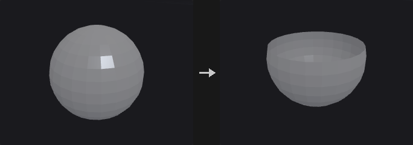
Removes the points or primitives selected by the group pattern. With Delete Non Selected the selection is inverted and only the group is kept.
Inputs
| Input | Type | Description |
|---|---|---|
geo | GEOMETRY | Geometry to delete from. |
Outputs
| Output | Type | Description |
|---|---|---|
geo | GEOMETRY | Geometry with the selected (or non-selected) elements removed. |
Parameters
| Parameter | Type | Default | Description |
|---|---|---|---|
Group group | string | (empty) | Group pattern selecting the elements to delete. An empty pattern deletes nothing, even when Delete Non Selected is on. |
Group Type cls | menu | Points | Whether the group pattern refers to points or primitives. Options: Points (point), Primitives (prim). |
Delete Non Selected keep_selected | toggle | off | Inverts the operation: delete everything that is not in the group and keep the group. |
Blast by Attribute (PCG)#
PCG_BlastByAttribute · category PCG/modify · Houdini: Blast by Attribute (SOP)
Deletes points or primitives by comparing a single-valued attribute against a threshold, range or band, or just groups the hits.
Tests a scalar numeric attribute on each element and either deletes the elements that match or, with Output = Group, leaves the geometry intact and puts the matching elements into a new group.
Modes:
- Threshold: matches elements whose value is strictly below the threshold (equal values stay).
- Range: matches
min <= value <= max. - Width: matches values inside
[center - width/2, center + width/2].
Invert flips the match. Elements outside the Group are never tested, and Invert does not touch them either. Vector attributes are rejected with an error.
Inputs
| Input | Type | Description |
|---|---|---|
geo | GEOMETRY | Geometry to test. |
Outputs
| Output | Type | Description |
|---|---|---|
geo | GEOMETRY | Geometry with matching elements deleted, or the unchanged geometry plus the output group. |
Parameters
| Parameter | Type | Default | Description |
|---|---|---|---|
Group group | string | (empty) | Group pattern restricting which elements are tested. Empty means all elements of the chosen class. |
Run Over cls | menu | Points | Whether to test point or primitive attributes. Options: Points (point), Primitives (prim). |
Attribute Name attribute | string | pscale | Name of a single-valued numeric attribute. |
Output output | menu | Blast | Blast deletes the matching elements. Group keeps the geometry and writes the matches to Output Group. Options: Blast (blast), Group (group). |
Mode mode | menu | Threshold | How the attribute value is compared: against one threshold, an inclusive min/max range, or a band given by center and width. Options: Threshold (threshold), Range (range), Width (width). |
Invert invert | toggle | off | Inverts the match within the group, so the elements that would have matched are kept and the others are selected. |
Threshold threshold | float | 0.5 | Elements with a value strictly lower than this match; equal values do not. Hidden when mode ≠ threshold. |
Min min | float | 0 | Lower bound of the inclusive matching range. Hidden when mode ≠ range. |
Max max | float | 1 | Upper bound of the inclusive matching range. Hidden when mode ≠ range. |
Center center | float | 0.5 | Center of the matching band. Hidden when mode ≠ width. |
Width width | float [0.0..] | 0.2 | Total width of the band; elements within half of this distance from Center match. Hidden when mode ≠ width. |
Output Group output_group | string | group1 | Name of the group created when Output is Group. Hidden when output ≠ group. |
Remove Unused Points remove_unused_points | toggle | on | After deleting primitives, also remove points no remaining primitive uses. Only relevant when running over primitives and deleting. Hidden when output = group } { cls = point. |
Compared with Houdini
The defaults of the numeric parameters are the plugin's own choice, since the SideFX documentation does not state them. Vector attributes are an error here.
Boolean (PCG)#
PCG_Boolean · category PCG/modify · Houdini: Boolean (SOP), Intersection Stitch (SOP)
Combines two closed meshes with a union, intersection, subtraction, shatter or seam operation.
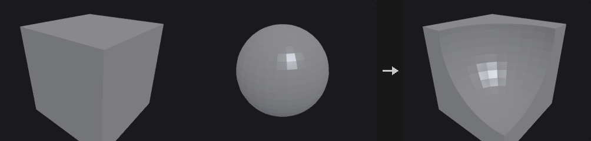
Boolean operations on polygon meshes, backed by the manifold3d library rather than a hand-written implementation: robust booleans need exact predicates, coplanar handling, re-triangulation of intersection curves and winding-number classification, and a failure would crash on the user's model.
Both inputs must be closed manifold meshes. When they are not, the node reports the reason and where to look.
With Detriangulate on, adjacent triangles whose normals differ by less than Coplanar Tolerance are merged back into one polygon. Optional output groups mark where each piece of the result came from.
Shatter outputs three pieces: A intersect B, A minus B and B minus A, sharing no points (separate them with connectivity). Seam outputs only the intersection curve as open polylines. A set treated as Surface is thickened into a closed shell by extruding it against its normals (the original faces stay in place), and after the operation only the faces lying on the original surface are kept.
Point, vertex and primitive attributes and groups of A and B are carried to the result. Each output triangle finds the input face it was cut from; floating-point point and vertex attributes are interpolated barycentrically inside that face, integer and string values and group membership come from the nearest corner, and primitive attributes and groups come from the face. An attribute that exists on only one input is 0 (or an empty string) on the other input's faces; when A and B use the same name with a different type or size, A's version is kept. Edge groups are not carried, because the edges are cut.
Inputs
| Input | Type | Description |
|---|---|---|
a | GEOMETRY | First operand (set A). |
b | GEOMETRY | Second operand (set B). |
Outputs
| Output | Type | Description |
|---|---|---|
geo | GEOMETRY | Result of the Boolean operation. |
Parameters
Set A
| Parameter | Type | Default | Description |
|---|---|---|---|
Treat As treat_a | menu | Solid | Whether set A is treated as a solid volume or as a surface. Options: Solid (solid), Surface (surface). |
Set B
| Parameter | Type | Default | Description |
|---|---|---|---|
Treat As treat_b | menu | Solid | Whether set B is treated as a solid volume or as a surface. Options: Solid (solid), Surface (surface). |
| Parameter | Type | Default | Description |
|---|---|---|---|
Operation operation | menu | Subtract | Which Boolean operation to perform. Shatter outputs A∩B, A−B and B−A as three separate pieces; Seam outputs only the intersection curve as polylines. Options: Subtract (subtract), Union (union), Intersect (intersect), Shatter (shatter), Seam (seam). |
Sub-Operation direction | menu | A Minus B | For Subtract: A minus B, B minus A, or both results. Options: A Minus B (a-b), B Minus A (b-a), Both (both). Hidden when operation ≠ subtract. |
Surface
| Parameter | Type | Default | Description |
|---|---|---|---|
Surface Shell use_surface_opts | toggle | off | Enables Shell Thickness for surface operands. When off, the default thickness 0.01 is used. Hidden when treat_a = solid treat_b = solid. |
Shell Thickness shell_thickness | float [1e-05..] | 0.01 | Thickness of the closed shell that a surface operand is extruded into against its normals so it can take part in the Boolean. Hidden when treat_a = solid treat_b = solid. Disabled when use_surface_opts is off. |
Detriangulate
| Parameter | Type | Default | Description |
|---|---|---|---|
Detriangulate detriangulate | toggle | on | Merge nearly coplanar adjacent triangles back into larger polygons. Hidden when operation = seam. |
Coplanar Tolerance coplanar_tolerance | float [0.0..90.0] | 0.5 | Adjacent triangles whose normals differ by less than this angle (degrees) are merged into one face. Hidden when operation = seam. Disabled when detriangulate is off. |
Output Groups
| Parameter | Type | Default | Description |
|---|---|---|---|
Output Groups use_out_groups | toggle | off | Create primitive and edge groups describing where the result's faces came from. Hidden when operation = seam. |
A Inside B a_inside_b | string | ainsideb | Group of faces that come from A and are enclosed by B. Empty means the group is not created. Hidden when operation = seam. Disabled when use_out_groups is off. |
A Outside B a_outside_b | string | aoutsideb | Group of faces that come from A and lie outside B. Hidden when operation = seam. Disabled when use_out_groups is off. |
B Inside A b_inside_a | string | binsidea | Group of faces that come from B and are enclosed by A. In A minus B this is the ring of the cut. Hidden when operation = seam. Disabled when use_out_groups is off. |
B Outside A b_outside_a | string | boutsidea | Group of faces that come from B and lie outside A. Hidden when operation = seam. Disabled when use_out_groups is off. |
B Polygons b_polys | string | bpolys | Group of all faces that come from B. Hidden when operation = seam. Disabled when use_out_groups is off. |
A-B Seams seam_group | string | abseams | Edge group containing the intersection curve of A and B. Hidden when operation = seam. Disabled when use_out_groups is off. |
Compared with Houdini
The B Polygons output group does not exist on the Houdini node; it is an addition of this plugin. The node also stands in for part of Intersection Stitch.
Boolean Fracture (PCG)#
PCG_BooleanFracture · category PCG/modify · Houdini: Boolean Fracture (SOP)
Cuts the first input into separate pieces using the second input as the cutting geometry.
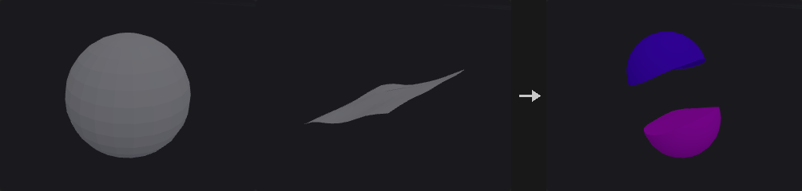
The cutter splits the geometry into one piece per connected component. Each piece gets a name (a prefix plus a number, or appended to the existing name), a piece attribute, interior and exterior face groups, interior and exterior seam edge groups, optional groups for pieces and faces inside a solid cutter, and interior and exterior normals.
When the cutter is treated as a Surface, each connected sheet is extruded along its average normal into a half-space and then used in the Boolean. The sheet must therefore pass entirely through the object and must not fold back along its average normal.
The backend is manifold3d, which requires closed manifold input. Point and vertex attributes are not carried over; primitive attributes and primitive groups are carried over from the source primitive.
Inputs
| Input | Type | Description |
|---|---|---|
geo | GEOMETRY | Geometry to fracture. |
cutter | GEOMETRY | Cutting geometry, interpreted according to Treat Cutting Geometry As. |
Outputs
| Output | Type | Description |
|---|---|---|
geo | GEOMETRY | The fractured pieces. |
report | STRING | Text summary of the operation. |
Parameters
| Parameter | Type | Default | Description |
|---|---|---|---|
Group group | string | (empty) | Group pattern restricting which primitives of the first input are fractured. |
Pieces
| Parameter | Type | Default | Description |
|---|---|---|---|
Name Attribute name_mode | menu | Overwrite | Overwrite replaces the name attribute with prefix plus piece number; Append adds the piece number to the existing name. Options: Overwrite (overwrite), Append (append). |
Fracture Namespace fracture_namespace | string | (empty) | Text inserted into the name when appending. Hidden when name_mode ≠ append. |
Piece Prefix piece_prefix | string | piece | Prefix of the generated piece names. |
Compute Interior Normals compute_interior_normals | toggle | on | Compute normals on the newly created interior (cut) faces. |
Interior Cusp Angle interior_cusp_angle | float [0.0..180.0] | 40 | Cusp angle in degrees for the interior normals: edges sharper than this stay hard. Disabled when compute_interior_normals is off. |
Exterior Normals exterior_normals | menu | Preserve Existing Normals | What to do with normals on the original outside faces: keep, recompute, or leave them alone. Options: Preserve Existing Normals (preserve), Recompute Normals (recompute), Do Not Compute Normals (none). |
Exterior Cusp Angle exterior_cusp_angle | float [0.0..180.0] | 60 | Cusp angle in degrees used when recomputing exterior normals. Disabled when exterior_normals = none. |
Output Attributes
| Parameter | Type | Default | Description |
|---|---|---|---|
Attribute Name Prefix attribute_prefix | string | (empty) | Prefix added to the names of the attributes this node writes. |
Primitive Piece piece_attribute | string | piece | Name of the primitive attribute holding the piece index. |
Copy Cutting Surface Attributes copy_cutter_attributes | string | (empty) | Primitive attributes of the cutter (wildcards allowed) that are copied onto the interior faces. |
Output Groups
| Parameter | Type | Default | Description |
|---|---|---|---|
Interior Group interior_group | string | inside | Name of the primitive group of faces created by the cut. |
Exterior Group exterior_group | string | outside | Name of the primitive group of faces that were on the original outside. |
Merge with Existing Groups merge_groups | toggle | on | Merge the output groups with existing groups of the same name instead of replacing them. |
Interior Seams interior_seams | string | (empty) | Name of the edge group along the border of the interior faces. Empty means not created. |
Exterior Seams exterior_seams | string | (empty) | Name of the edge group along the border of the exterior faces. Empty means not created. |
Pieces Inside Cutting Geometry pieces_inside | string | (empty) | Name of the group holding pieces that lie inside a solid cutter. Only used with a solid cutter. Hidden when treat_cutter ≠ solid. |
Surface Inside Cutting Geometry surface_inside | string | (empty) | Name of the group holding faces that lie inside a solid cutter. Only used with a solid cutter. Hidden when treat_cutter ≠ solid. |
Boolean Settings
| Parameter | Type | Default | Description |
|---|---|---|---|
Treat Cutting Geometry As treat_cutter | menu | Surface | Surface extrudes each connected cutter sheet into a half-space; Solid uses the cutter as a closed volume. Options: Surface (surface), Solid (solid). |
Detriangulate detriangulate | menu | All Polygons | Which polygons are merged back after triangulation: all, only the unchanged ones, or none. Options: All Polygons (all), Only Unchanged Polygons (unchanged), No Polygons (none). |
Compared with Houdini
With a surface cutter, a sheet that only cuts partway into the object still severs it here, because the sheet is extruded into a half-space. In Houdini it would not.
Bound (PCG)#
PCG_Bound · category PCG/modify · Houdini: Bound (SOP)
Builds a bounding box, bounding sphere or minimum-volume oriented box around the geometry.
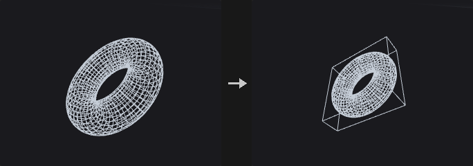
Modes:
- Bounding Box: axis-aligned box. Fastest, but it becomes very loose when the object is tilted. A thin rod tilted 45 degrees has an axis-aligned box about 11 times the volume of its oriented box.
- Bounding Sphere: rotation invariant, cheap for coarse rejection. It starts from Ritter's algorithm, tightens it by moving toward the farthest point, and finally enlarges the radius so every point is covered.
- Oriented Bounding Box: minimum-volume OBB. The optimum always has one face flush with a face of the convex hull, so only hull face normals are tried, each followed by a 2D rotating-calipers fit. Only hull vertices take part, so a 50,000 point cloud may need only a few dozen.
The output carries detail attributes bound_center, bound_size, bound_rot (3x3 matrix, row-major) and bound_volume. bound_rot can be used to straighten the object or align something else to it: its rows are the box axes, so in Houdini's row-vector convention it maps box-local directions to world space, and Transform by Attribute (PCG) with Invert Transform (after moving bound_center to the origin) straightens the object.
Inputs
| Input | Type | Description |
|---|---|---|
geo | GEOMETRY | Geometry to enclose. |
Outputs
| Output | Type | Description |
|---|---|---|
geo | GEOMETRY | The bounding shape with the bound_* detail attributes. |
Parameters
| Parameter | Type | Default | Description |
|---|---|---|---|
Group group | string | (empty) | Group pattern restricting which points are bounded. Empty means all. |
Bounding Type mode | menu | Bounding Box | Type of bounding shape: axis-aligned box, sphere or oriented box. Options: Bounding Box (box), Bounding Sphere (sphere), Oriented Bounding Box (oriented). |
Uniform Padding uniform_padding | float | 0 | Expands the shape outward by this amount on every side. Added to Padding. |
Padding padding_x padding_y padding_z | float | 0, 0, 0 | Per-axis expansion on each side. For the sphere the largest of the three components is used; negative values do not shrink it. |
Divisions divisions_x divisions_y divisions_z | int [2..4096] | 2, 2, 2 | Number of points per axis on the generated box (minimum 2). Hidden when mode = sphere. |
Columns sphere_cols | int [3..4096] | 24 | Number of columns of the generated sphere mesh. Hidden when mode ≠ sphere. |
Rows sphere_rows | int [2..4096] | 16 | Number of rows of the generated sphere mesh. Hidden when mode ≠ sphere. |
Max Hull Normals max_normals | int [1..65536] | 256 | When the convex hull has more faces than this, only the largest faces' normals are tried, which gives an approximate optimum. Hidden when mode ≠ oriented. |
Hull Tolerance tolerance | float [1e-12..1.0] | 1e-06 | Tolerance used when computing the convex hull for the oriented box. Hidden when mode ≠ oriented. |
Carve (PCG)#
PCG_Carve · category PCG/modify · Houdini: Carve (SOP)
Cuts a curve at parametric positions or extracts points along it.
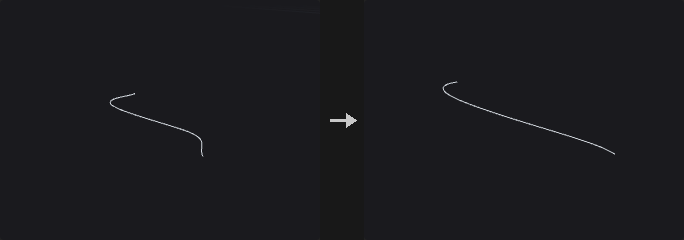
Keeps or extracts a portion of a curve between two U positions. NURBS and Bezier curves are cut by knot insertion, so the result is still a curve of the same type (subdividing into a polyline would lose that and block further degree changes or carving). Polygons and polylines are interpolated linearly by vertex parameter, and the end points land exactly on the requested positions.
In Cut mode, enabling only Second U keeps the part from 0 to Second U, because the disabled end is the curve end point.
Bidirectional U/V carving of surfaces is not implemented.
Inputs
| Input | Type | Description |
|---|---|---|
geo | GEOMETRY | Curves to carve. |
Outputs
| Output | Type | Description |
|---|---|---|
geo | GEOMETRY | The carved curves or extracted points. |
Parameters
| Parameter | Type | Default | Description |
|---|---|---|---|
Group group | string | (empty) | Group pattern selecting the primitives to carve. |
First U first_u | float [0.0..1.0] | 0.25 | Parametric position (0 to 1) of the first cut. |
Use First U use_first_u | toggle | on | Enables the first cut. When off, the curve start is used. |
Second U second_u | float [0.0..1.0] | 0.75 | Parametric position (0 to 1) of the second cut. |
Use Second U use_second_u | toggle | off | Enables the second cut. When off, the curve end is used. |
Use Arc Length relative_arc_length | toggle | off | Interprets U by arc length proportion instead of by vertex or knot parameter. |
Operation mode | menu | Cut | Cut keeps part of the curve. Extract produces one point at each enabled U position (the curve's isoparametric point). Options: Cut (cut), Extract (extract). |
Keep
| Parameter | Type | Default | Description |
|---|---|---|---|
Keep use_keep | toggle | on | Enables the keep options. Hidden when mode = extract. |
Keep Inside keep_inside | toggle | on | Keep the part between the two U positions. Hidden when mode = extract. |
Keep Outside keep_outside | toggle | off | Keep the parts before the first and after the second U position. Hidden when mode = extract. |
Compared with Houdini
Carving of surfaces in U/V is not implemented, only curves.
Circle from Edges (PCG)#
PCG_CircleFromEdges · category PCG/modify · Houdini: Circle from Edges (SOP)
Rearranges each closed edge loop in a group into a perfect circle.
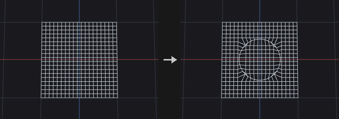
For every closed loop of the edge group, the center is the average of its points and the plane is defined by the loop's Newell normal. Point order along the loop is preserved. Open chains are skipped.
Even Spacing distributes the points at equal angles, choosing the phase that moves the points the least. Rotate then turns the whole circle about its normal.
Inputs
| Input | Type | Description |
|---|---|---|
geo | GEOMETRY | Geometry containing the edge loops. |
Outputs
| Output | Type | Description |
|---|---|---|
geo | GEOMETRY | Geometry with the loops moved onto circles. |
report | STRING | Text summary, including skipped loops. |
Parameters
| Parameter | Type | Default | Description |
|---|---|---|---|
Group edges | string | (empty) | Edge group pattern. Each closed loop in it becomes a circle; open chains are skipped. |
Radius Type radius_mode | menu | Average | How the circle radius is derived from the loop: average, minimum or maximum distance of its points from the center, or a custom value. Options: Average (average), Minimum (min), Maximum (max), Custom (custom). |
Radius radius | float [0.0..] | 1 | The circle radius when Radius Type is Custom. Hidden when radius_mode ≠ custom. |
Even Spacing even_spacing | toggle | on | Distribute points at equal angles around the circle. |
Rotate rotate | float [-360.0..360.0] | 0 | Rotation of the circle about its own normal, in degrees. |
Circle Spline (PCG)#
PCG_CircleSpline · category PCG/modify · Houdini: Circle Spline (SOP)
Creates a smooth curve through the input points by blending circular arcs fitted to each three neighbouring points.
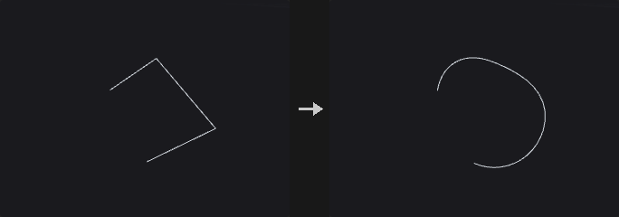
The arcs through each triple of adjacent points are blended pairwise with weight w = sin^2(pi*t/2). The curve passes through every point, and at each point its tangent and curvature equal those of the circle through the previous, current and next points (G2). If all points lie on one circle the result is that circle; where three points are collinear it is a straight line. Each segment gets Segment Divisions samples and the other numeric point attributes are interpolated linearly along the segment.
Helix fits a helix through each triple instead of a circle, with the axis chosen by Helix Type. A point string attribute splinetype (circle or helix) can override the type for the segment centered on that point. Adjust by Pseudo-Arclength keeps the point count but redistributes points evenly by arc length.
Inputs
| Input | Type | Description |
|---|---|---|
geo | GEOMETRY | Points (or curve points) to interpolate. |
Outputs
| Output | Type | Description |
|---|---|---|
geo | GEOMETRY | The generated curve. |
report | STRING | Text summary of the operation. |
Parameters
| Parameter | Type | Default | Description |
|---|---|---|---|
Group group | string | (empty) | Group pattern selecting the points to use. |
Spline Type spline_type | menu | Circle | Fit circles or helices through each three points. Options: Circle (circle), Helix (helix). |
Override Spline Type with Attribute override_with_attrib | toggle | off | Reads the string point attribute splinetype (circle or helix) to decide the type of the segment centered on each point. |
Helix Type helix_type | menu | Directional | How the helix axis is chosen: directional, balanced or blended. Options: Directional (directional), Balanced (balanced), Blended (blended). Disabled when spline_type ≠ helix override_with_attrib is off. |
Adjust by Pseudo-Arclength adjust_arclength | toggle | off | Redistributes the points along the curve by approximate arc length without changing their number. |
Arclength Samples arclength_samples | int [0..1000] | 4 | Number of samples used for the arc length estimate. Disabled when adjust_arclength is off. |
Segment Divisions divisions | int [1..1024] | 8 | Number of samples per segment between two adjacent points. |
Output Curveu curveu_name | string | curveu | Name of the output attribute holding the curve U parameter. |
Use Curveu use_curveu | toggle | off | Write the curve U attribute. |
Output Tangent tangent_name | string | tangentu | Name of the output tangent attribute. |
Use Tangent use_tangent | toggle | off | Write the tangent attribute. |
Compared with Houdini
Houdini's Hybrid and Ellipse spline types are not implemented, because their definitions are not documented.
Clean (PCG)#
PCG_Clean · category PCG/modify · Houdini: Clean (SOP)
Repairs a polygon mesh by fusing points, removing degenerate and duplicate faces, fixing non-manifold edges and orientation, and dropping small pieces.
Runs a fixed sequence of steps: fuse points within the distance, remove degenerate primitives, remove duplicate faces (regardless of start vertex and winding), make manifold, consistently orient polygons, delete small pieces, remove unused points. The report output states how much each step changed.
Make Manifold keeps the two largest faces on an edge shared by more than two faces and splits bow-tie points.
Inputs
| Input | Type | Description |
|---|---|---|
geo | GEOMETRY | Mesh to clean. |
Outputs
| Output | Type | Description |
|---|---|---|
geo | GEOMETRY | The cleaned mesh. |
report | STRING | Text report with the number of elements changed by each step. |
Parameters
| Parameter | Type | Default | Description |
|---|---|---|---|
Fuse Distance fuse_distance | float [0.0..] | 0 | Points closer than this distance are merged. 0 disables point merging. |
Remove Degenerate Primitives remove_degenerate | toggle | on | Remove degenerate primitives. |
Delete Overlap Polygons remove_duplicates | toggle | on | Keep only one of several faces using the same set of points, regardless of start vertex and winding. |
Make Manifold make_manifold | toggle | off | For edges shared by more than two faces keep the two with the largest area, and split bow-tie points. |
Orient Polygons orient | toggle | off | Make the winding of connected polygons consistent. |
Delete Small Pieces min_piece_prims | int [0..] | 0 | Connected pieces with fewer primitives than this are deleted. 0 disables. |
Remove Unused Points remove_unused | toggle | on | Remove points that no primitive uses. |
Compared with Houdini
Combines Clean with the repairs of PolyDoctor.
Clip (PCG)#
PCG_Clip · category PCG/modify · Houdini: Clip (SOP), Knife (SOP)
Cuts geometry with a plane and keeps the part below it, above it, or both.
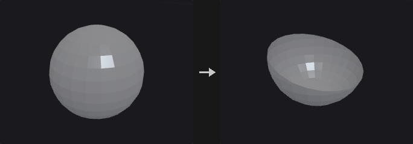
The plane passes through origin + distance * direction and has direction as its normal. With Keep = All Primitives both halves are kept and simply separated along the plane; feed the result into Connectivity or a For-Each loop to process each half on its own.
Wherever the plane cuts an edge a new point is created, and every attribute on it is interpolated from the two end points: position, normals, UVs, point groups and edge groups all carry over.
Concave polygons are ear-clipped into triangles before cutting (Sutherland-Hodgman gives self-intersecting results on concave polygons), so cut concave faces come out as triangles. To get large faces back, follow with Divide using Remove Shared Edges. Primitives outside the group are passed through untouched.
Inputs
| Input | Type | Description |
|---|---|---|
geo | GEOMETRY | Geometry to cut. |
Outputs
| Output | Type | Description |
|---|---|---|
geo | GEOMETRY | The clipped geometry. |
Parameters
| Parameter | Type | Default | Description |
|---|---|---|---|
Group group | string | (empty) | Group pattern of primitives to cut. Primitives outside the group are kept unchanged. |
Clip Attribute clip_attribute | string | P | Point attribute whose first three components define the position that is tested against the plane. The default P cuts by position; another attribute such as UV can be used instead. |
Keep keep | menu | Primitives Below the Plane | Which side to keep. Below is the side behind the plane normal, Above the front side, All keeps both halves, split along the plane. Options: Primitives Below the Plane (below), Primitives Above the Plane (above), All Primitives (both). |
Orient Plane with orient | menu | Direction | Define the plane with a direction (plus origin) or with a translate/rotate transform. Options: Direction (direction), Transform (transform). |
Direction dir_x dir_y dir_z | float | 0, 1, 0 | Normal of the clipping plane. Need not be normalized, but must not be zero. Hidden when orient = transform. |
Translate translate_x translate_y translate_z | float | 0, 0, 0 | A point on the plane (before Distance is applied) when oriented by transform. Hidden when orient = direction. |
Rotate rotate_x rotate_y rotate_z | float | 0, 0, 0 | Rotation in degrees that turns (0,1,0) into the plane normal, applied in X, Y, Z order. Hidden when orient = direction. |
Distance distance | float | 0 | Offset of the plane along its normal. |
Snapping Tolerance snap_tolerance | float [0.0..] | 0 | Points within this distance of the plane are first moved onto it, then the cut is made. Only points of cut primitives are moved. 0 disables snapping. |
Fill Polygons along Clipping Plane fill | toggle | off | Closes the cut with new faces along the plane. With Keep = All each side gets its own cap. |
Split Connectivity split_connectivity | toggle | off | With Keep = All, the upper and lower halves no longer share the points on the cut. Hidden when keep ≠ both. |
Origin
| Parameter | Type | Default | Description |
|---|---|---|---|
Origin use_origin | toggle | off | Enables a custom origin for the plane when oriented by direction. Hidden when orient = transform. |
Origin origin_x origin_y origin_z | float | 0, 0, 0 | Point the plane passes through (before Distance is applied). Hidden when orient = transform. |
Output Groups
| Parameter | Type | Default | Description |
|---|---|---|---|
Create Groups use_out_groups | toggle | off | Create the output groups below. |
Above Primitives above_group | string | above | Primitive group of the faces on the upper side after cutting. |
Below Primitives below_group | string | below | Primitive group of the faces on the lower side after cutting. |
Clipped Edges seam_group | string | clipseam | Edge group of the edges lying on the cut, handy for a following bevel or edge-to-primitive promotion. |
Clipped Primitives clipped_group | string | (empty) | Primitive group of the remaining faces that were actually cut. Empty means not created. |
Filled Polygons fill_group | string | (empty) | Primitive group of the cap faces created by Fill. Empty means not created. Disabled when fill is off. |
Compared with Houdini
The base normal (0,1,0) and the X-Y-Z rotation order for Transform orientation are not documented by SideFX; this node assumes them. Also covers the planar use of Knife.
Tips
- Use Keep = All Primitives followed by Connectivity to cut an object apart and process each part individually.
Convert (PCG)#
PCG_Convert · category PCG/modify · Houdini: Convert (SOP), Convert Volume (SOP)
Converts primitives between polygon, polyline, point, NURBS, Bezier and volume representations.
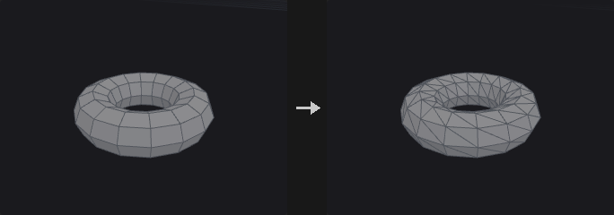
Changes the primitive type of the selected geometry. Splines are tessellated to polygons or polylines using the Divisions setting, and polygons can be fitted into NURBS or Bezier curves and surfaces. The volume targets rasterize the geometry into a signed-distance (SDF) or fog volume.
NURBS support is limited to uniform clamped knot vectors; arbitrary non-uniform knots are not supported, because attributes here are fixed-size arrays and a per-primitive variable-length knot vector does not fit. Uniform clamped covers everything the Houdini Convert SOP produces.
Inputs
| Input | Type | Description |
|---|---|---|
geo | GEOMETRY | Geometry to convert. |
Outputs
| Output | Type | Description |
|---|---|---|
geo | GEOMETRY | The converted geometry. |
Parameters
| Parameter | Type | Default | Description |
|---|---|---|---|
Group group | string | (empty) | Group pattern selecting the primitives to convert. |
Convert To convert_to | menu | Triangles | Target representation. Options: Triangles (triangles), Polygon (polygons), Polyline (polylines), Points (points), NURBS Curve (nurbs_curve), NURBS Surface (nurbs_surface), Bezier Curve (bezier_curve), Bezier Surface (bezier_surface), Volume (SDF) (volume_sdf), Volume (Fog) (volume_fog). |
Divisions
| Parameter | Type | Default | Description |
|---|---|---|---|
Use Tessellation use_tessellation | toggle | on | Enables the Divisions setting; when off a default tessellation is used. Hidden when use_tessellation is on. |
Divisions u_divs v_divs | int [2..512] | 16, 16 | Number of subdivisions per span when converting splines to polygons. The second value (V) only matters for surfaces. Hidden when convert_to = nurbs_curve } { convert_to = nurbs_surface } { convert_to = bezier_curve } { convert_to = bezier_surface } { convert_to = volume_sdf } { convert_to = volume_fog. |
NURBS
| Parameter | Type | Default | Description |
|---|---|---|---|
Use NURBS Opts use_nurbs_opts | toggle | on | Enables the NURBS/Bezier order and interpolation settings. Hidden when use_nurbs_opts is on. |
U Order u_order | int [2..11] | 4 | Curve order (degree + 1) in U for NURBS and Bezier targets. Hidden when convert_to ≠ nurbs_curve convert_to ≠ nurbs_surface convert_to ≠ bezier_curve convert_to ≠ bezier_surface. |
V Order v_order | int [2..11] | 4 | Curve order in V for surface targets. Hidden when convert_to ≠ nurbs_surface convert_to ≠ bezier_surface. |
Interpolate Through Hulls interpolate_through_hulls | toggle | off | Make the resulting spline pass through the input points instead of using them as control points. Hidden when convert_to ≠ nurbs_curve convert_to ≠ nurbs_surface convert_to ≠ bezier_curve convert_to ≠ bezier_surface. |
Volume
| Parameter | Type | Default | Description |
|---|---|---|---|
Use Volume use_volume | toggle | on | Enables the volume resolution, radius and padding settings. Hidden when use_volume is on. |
Volume Resolution vol_res_x vol_res_y vol_res_z | int [2..512] | 48, 48, 48 | Voxel resolution of the generated volume along each axis. Hidden when convert_to ≠ volume_sdf convert_to ≠ volume_fog. |
Point Radius vol_radius | float [0.0..10000.0] | 0 | Radius given to each point when producing a fog volume. 0 picks a value automatically from the point spacing. Hidden when convert_to ≠ volume_fog. |
Padding vol_pad | float [0.0..2.0] | 0.15 | Extra space around the geometry bounds included in the volume. Hidden when convert_to ≠ volume_sdf convert_to ≠ volume_fog. |
| Parameter | Type | Default | Description |
|---|---|---|---|
Volume Offset iso | float | 0 | Offset applied to the volume surface level when converting from volumes. Hidden when convert_to = volume_sdf } { convert_to = volume_fog. |
Compared with Houdini
NURBS are limited to uniform clamped knots. The volume options approximate parts of Convert VDB and VDB from Polygons.
Convex Decompose (PCG)#
PCG_ConvexDecompose · category PCG/modify · Houdini: Convex Decomposition (SOP)
Splits a concave solid into a set of convex pieces (approximate convex decomposition).
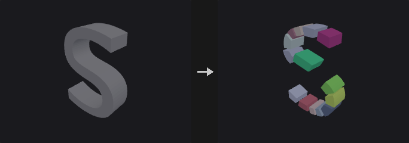
A convex hull only gives the outer skin of a shape, and for an L, a bowl or a chair that smooths away exactly what makes the shape. Physics engines handle convex bodies fast and concave ones slowly or not at all, hence the decomposition.
Concavity is measured by volume: 1 - solid volume / hull volume. It is exactly 0 for a convex piece and tells how much air the hull would add. (Defining it as the distance from the most concave point to the hull would let a negligible spike make the whole object look very concave.)
Each split minimizes the sum of the two child hull volumes. Candidates are three axes times Split Candidates minus 1 positions; each is really cut and both hulls computed. By default the axes are those of the oriented bounding box, not the world axes; world axes cut a tilted L badly, and the OBB axes also make the result rotation covariant.
Max Pieces is a global budget, not a depth limit. A heap ordered by absolute concave volume always splits the worst piece first. After each cut the pieces are split into connected components, so a cut across the opening of a U does not leave one piece whose hull fills the gap.
Output modes: Convex Hulls replaces each piece by its hull (what collision proxies need; total volume is at least the original). Exact Pieces keeps the cut solids, whose total volume equals the original exactly.
Max Hull Points caps the vertex count of each hull for engine collision. 32 points (at most 60 triangles) usually stays within a few centimetres of a 2 m rock.
Inputs
| Input | Type | Description |
|---|---|---|
geo | GEOMETRY | Closed solid to decompose. |
Outputs
| Output | Type | Description |
|---|---|---|
geo | GEOMETRY | The convex pieces, tagged with the piece and name attributes. |
Parameters
| Parameter | Type | Default | Description |
|---|---|---|---|
Output mode | menu | Convex Hulls | Convex Hulls replaces each piece by its convex hull; Exact Pieces keeps the actual cut solids (volume is conserved). Options: Convex Hulls (hull), Exact Pieces (exact). |
Max Concavity max_concavity | float [0.0..1.0] | 0.05 | Residual concavity (1 - volume / hull volume) a piece is allowed to keep before it is split further. |
Max Pieces max_pieces | int [1..4096] | 32 | Global budget for the number of pieces. |
Max Hull Points max_hull_points | int [0..4096] | 0 | Vertex budget for each hull in Convex Hulls mode; 0 = no limit. Engines limit convex colliders (Unity rejects more than 255 triangles) and simulate small hulls faster. The points are chosen greedily, like a quickhull stopped early: start from a tetrahedron and keep adding the vertex farthest outside the current hull. The reduced hull uses a subset of the full hull's vertices, so it never grows; what it cuts off is at most the distance of the farthest vertex left out. Disabled when mode = exact. |
Search
| Parameter | Type | Default | Description |
|---|---|---|---|
Split Candidates resolution | int [2..64] | 8 | Number of candidate cut positions tried per axis. |
Split Axes split_axes | menu | Oriented (OBB) | Cut along the axes of the oriented bounding box, or along the world axes. Options: Oriented (OBB) (oriented), World Axes (world). |
Min Piece Fraction min_fraction | float [0.0..0.5] | 0.02 | Smallest fraction of the volume a piece may have; avoids slivers. |
Cap Type cap_mode | menu | N-gon | How the cut faces are built in Exact Pieces mode: single n-gon, fan or triangles. Options: N-gon (ngon), Fan (fan), Triangles (triangles). Disabled when mode = hull. |
Tolerance tolerance | float [1e-09..1.0] | 1e-05 | Geometric tolerance for the hull and cutting computations. |
| Parameter | Type | Default | Description |
|---|---|---|---|
Piece Attribute piece_attribute | string | piece | Name of the primitive attribute holding the piece index. |
Name Attribute name_attribute | string | name | Name of the primitive string attribute holding the piece name. |
Name Prefix name_prefix | string | convex | Prefix of the piece names. |
Convex Hull (PCG)#
PCG_ConvexHull · category PCG/modify
Builds the 3D convex hull of the input points.
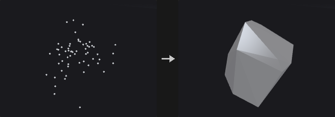
Useful for collision proxies, for wrapping a point cloud into a solid, for the exact answer to how much space a set of points occupies, and as the basis of the oriented mode of Bound.
The algorithm is quickhull: each round takes the farthest outside point as a new vertex, deletes the faces visible from it and joins the horizon to it with new faces. Visible faces are found by flood-filling over adjacency from the starting face, not by scanning all faces, because a full scan can report a nearly coplanar far face as visible because of floating point noise and break the horizon into two loops.
Degenerate input does not raise an error but drops a dimension: coplanar points give a polygon, collinear points a line segment, coincident points a single point.
Inputs
| Input | Type | Description |
|---|---|---|
geo | GEOMETRY | Points or geometry whose points are wrapped. |
Outputs
| Output | Type | Description |
|---|---|---|
geo | GEOMETRY | The convex hull. |
Parameters
| Parameter | Type | Default | Description |
|---|---|---|---|
Group group | string | (empty) | Group pattern selecting the points to wrap. Empty means all points. |
Merge Coplanar Faces merge_coplanar_faces | toggle | on | Merge coplanar triangles into polygons (a cube becomes 6 quads, not 12 triangles). Turn it off when a pure triangle mesh is needed, e.g. for a collision proxy. |
Tolerance tolerance | float [1e-12..1.0] | 1e-06 | Distance beyond a face at which a point counts as outside. Points are stored as float32, so values near 1e-9 would treat quantization noise as real bulges and create zero-area slivers. |
Compared with Houdini
Degenerate input (coplanar, collinear or coincident points) produces a polygon, line or point, where Houdini returns empty geometry.
Crease (PCG)#
PCG_Crease · category PCG/modify · Houdini: Crease (SOP)
Writes a fractional crease weight onto edges for later subdivision.
Writes the weight into the vertex attribute creaseweight (or the attribute you name). For every selected edge, the half-edge start vertex on both sides of the edge is written. Subdivide reads this attribute for semi-sharp creases: with a weight of 1 or more the edge is sharp for that round, values between 0 and 1 blend, and the weight decreases by 1 each subdivision round.
Inputs
| Input | Type | Description |
|---|---|---|
geo | GEOMETRY | Geometry with edges to crease. |
Outputs
| Output | Type | Description |
|---|---|---|
geo | GEOMETRY | Geometry with the crease attribute set. |
report | STRING | Text summary of what was changed. |
Parameters
| Parameter | Type | Default | Description |
|---|---|---|---|
Group edges | string | (empty) | Edge group pattern. Empty means all edges. |
Operation mode | menu | Set | How the weight combines with the existing value: set it, add to it, multiply it, or take the maximum. Options: Set (set), Add (add), Multiply (multiply), Maximum (max). |
Crease Weight weight | float [0.0..100.0] | 2 | The crease weight. |
Crease Attribute attribute | string | creaseweight | Name of the vertex attribute that stores the weight. Subdivide reads it for semi-sharp creases. |
Curve Fillet (PCG)#
PCG_CurveFillet · category PCG/modify
Rounds polyline corners with circular arcs.
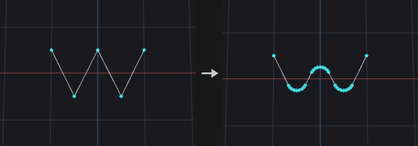
Replaces the selected corners of polylines with circular arcs of the given radius, tangent to both neighbouring segments. With Limit Radius the arc shrinks where a segment is too short to fit it, so neighbouring fillets never overlap.
Closed polylines and polygons have every point treated as a corner; open curves keep their end points. Nearly straight corners are left alone. The arc points copy the corner's point attributes.
Inputs
| Input | Type | Description |
|---|---|---|
geo | GEOMETRY | Curves (and closed polygons) to fillet. |
Outputs
| Output | Type | Description |
|---|---|---|
geo | GEOMETRY | The rounded curves. |
report | STRING | Number of corners rounded and the new point count. |
Parameters
| Parameter | Type | Default | Description |
|---|---|---|---|
Group group | string | (empty) | Curves (primitives) to fillet. |
Corner Points points | string | (empty) | Corner points to round. Empty means all corners. |
Radius radius | float [0.0..] | 0.1 | Radius of the arcs. |
Divisions divisions | int [1..512] | 6 | Number of segments per arc. |
Limit Radius limit_radius | toggle | on | Shrink the arc where the neighbouring segments are shorter than the arc needs. |
Include Closed Curves include_closed | toggle | on | Also round closed polylines and polygons. |
Curve Intersect (PCG)#
PCG_CurveIntersect · category PCG/modify · Houdini: Curve Intersect (SOP)
Finds intersections between curves and outputs points, split curves, or Houdini-style cut and extract results.
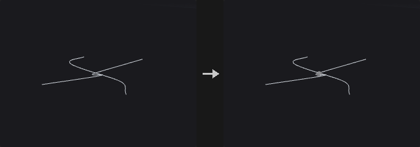
Intersects curves pairwise. With Plane set to XZ, XY or YZ the test is made on the projection onto that plane (a road network is intersected from above); 3D requires two segments to actually come within Tolerance of each other.
Output modes:
- Intersection Points: only the intersection points, carrying
prim_a,prim_b,u_aandu_b(the two primitives and their curve parameters). - Split Curves: cuts the curves at the intersections, with the intersection points shared, so the result is a connected network that Find Shortest Path can walk directly. The intersection points go into Point Group.
- Cut and Extract follow the Houdini Method semantics: intersect between the left curves (selected by Group) and the right curves (Cutter Group; they come from the second input cutter, or from the main geometry when it is not connected). Cut cuts both sides into segments and keeps the odd or even numbered ones as chosen; Extract outputs the intersection points (Affect chooses left, right or both, and Keep Original keeps the curves).
Inputs
| Input | Type | Description |
|---|---|---|
geo | GEOMETRY | Curves to intersect (the left side). |
cutter (optional) | GEOMETRY | Optional second set of curves for the right side of Cut and Extract. If not connected, the right curves are taken from the main geometry using Cutter Group. |
Outputs
| Output | Type | Description |
|---|---|---|
geo | GEOMETRY | Intersection points, split curves, or the cut/extract result depending on Output. |
report | STRING | Text summary of the operation. |
Parameters
| Parameter | Type | Default | Description |
|---|---|---|---|
Face Group group | string | (empty) | Group pattern selecting the curves to test (the left side for Cut and Extract). |
Cutter Group cutter_group | string | (empty) | Group pattern selecting the right-side curves for Cut and Extract. Hidden when output = points } { output = split. |
Intersect In plane | menu | XZ Plane (Top) | Projection plane for the test, or 3D for a true 3D proximity test. Options: 3D (3d), XZ Plane (Top) (xz), XY Plane (xy), YZ Plane (yz). |
Tolerance tolerance | float [0.0..] | 0.0001 | Maximum distance between two curves for them to count as intersecting. |
Find All Intersections find_all | toggle | on | Find every intersection between a pair of curves. When off, only the closest one per pair is taken (it does not need to be within Tolerance). Hidden when output = points } { output = split. |
Self Intersections self_intersect | toggle | on | Also test each curve against itself. Hidden when output = cut } { output = extract. |
Output output | menu | Split Curves | What to produce: points, split curves, or the Houdini-style Cut / Extract between a left and a right set. Options: Intersection Points (points), Split Curves (split), Cut (Houdini Method) (cut), Extract (Houdini Method) (extract). |
Intersection Group point_group | string | intersections | Name of the point group that receives the intersection points in Split Curves mode. Hidden when output ≠ split. |
Left-face Pieces left_pieces | menu | Keep All | Which of the pieces cut from the left curves to keep: all, odd-numbered, even-numbered or none. Options: Keep All (keep_all), Keep Odd-numbered Ones (keep_odd), Keep Even-numbered Ones (keep_even), Keep None (keep_none). Hidden when output ≠ cut. |
Right-face Pieces right_pieces | menu | Keep All | Which of the pieces cut from the right curves to keep: all, odd-numbered, even-numbered or none. Options: Keep All (keep_all), Keep Odd-numbered Ones (keep_odd), Keep Even-numbered Ones (keep_even), Keep None (keep_none). Hidden when output ≠ cut. |
Affect affect | menu | Left Input | Which side the Extract result is applied to. Options: Left Input (left), Right Input (right), Both Inputs (both). Hidden when output ≠ extract. |
Keep Original keep_original | toggle | off | Keep the original curves in the Extract output. Hidden when output ≠ extract. |
Delete (PCG)#
PCG_Delete · category PCG/modify · Houdini: Delete (SOP), Point Delete (COP)
Deletes points, primitives or edges chosen by group, number, bounding volume, normal, degeneracy, random chance or an expression.
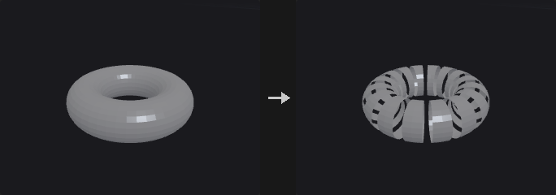
Where Blast deletes by group, Delete covers conditions a group pattern cannot express: every Nth element, everything outside a box, faces pointing away from a direction.
The filters combine as an intersection: group AND number AND bounding volume AND normal AND expression, and a disabled filter selects everything. So first pick an area with the group, then delete every third element in it; turning on another filter narrows the selection and never widens it.
With no filter enabled and an empty group the node does nothing, since treating an empty group as everything would wipe the whole geometry. When Entity is Edges, only the group is honoured and the filter sections below do not apply; the end points of the selected edges are deleted.
Inputs
| Input | Type | Description |
|---|---|---|
geo | GEOMETRY | Geometry to delete from. |
Outputs
| Output | Type | Description |
|---|---|---|
geo | GEOMETRY | Geometry with the selected elements removed. |
Parameters
| Parameter | Type | Default | Description |
|---|---|---|---|
Group group | string | (empty) | Group pattern, intersected with the filters below. With every filter off and the group empty nothing is deleted. For Edges this is an edge group. |
Entity entity | menu | Points | Whether points, primitives or edges are deleted. For edges only the group is used. Options: Points (point), Primitives (prim), Edges (edge). |
Operation operation | menu | Delete Selected | Delete Selected removes the selection; Delete Non-Selected keeps only the selection. Options: Delete Selected (delete_selected), Delete Non-Selected (keep_selected). |
Keep Points keep_points | toggle | off | When deleting primitives, keep their points in the geometry. Hidden when entity = point } { entity = edge. |
Delete Unused Groups delete_unused_groups | toggle | off | Remove groups that have no members left after the deletion. |
Number › Number
| Parameter | Type | Default | Description |
|---|---|---|---|
Enable use_number | toggle | off | Enables the filter by element number. |
Operation number_mode | menu | Delete by Pattern (Every Nth) | Every Nth hits every Nth element starting at Start; Range takes the first N of every M within the range; Pattern uses a number pattern. Options: Delete by Pattern (Every Nth) (every_nth), Delete by Range (range), Delete by Pattern (pattern). |
Pattern number_pattern | string | !* | Number pattern: 0 5 12, 0-20, 0-20:3, !3-5 or *. Hidden when number_mode ≠ pattern. |
Start number_start | int [0..] | 0 | First element number of the filtered range. Hidden when number_mode = pattern. |
End number_end | int [-1..] | -1 | Last element number of the filtered range. -1 means up to the end. Hidden when number_mode = pattern. |
Select _ of _ select_num select_of | int [1..65536] | 1, 1 | Take the first N (left value) of every M (right value) elements in the range. Hidden when number_mode ≠ range. |
Every number_step | int [1..65536] | 2 | Starting from Start, every how many elements one is hit. Hidden when number_mode ≠ every_nth. |
Bounding Volume › Bounding Volume
| Parameter | Type | Default | Description |
|---|---|---|---|
Enable use_volume | toggle | off | Enables the bounding volume filter. |
Bounding Type volume_type | menu | Bounding Box | Shape of the volume: box or sphere. Options: Bounding Box (box), Bounding Sphere (sphere). |
Center center_x center_y center_z | float | 0, 0, 0 | Center of the bounding volume. |
Size size_x size_y size_z | float | 1, 1, 1 | Size of the bounding box along each axis. Hidden when volume_type ≠ box. |
Radius radius | float [0.0..] | 1 | Radius of the bounding sphere. Hidden when volume_type ≠ sphere. |
Invert volume_invert | toggle | off | Select the elements outside the volume instead of inside. |
Normal › Normal
| Parameter | Type | Default | Description |
|---|---|---|---|
Enable use_normal | toggle | off | Enables the normal filter. |
Direction direction_x direction_y direction_z | float | 0, 1, 0 | Direction the normals are compared against. |
Spread Angle spread_angle | float [0.0..180.0] | 45 | Maximum angle in degrees between the element normal and Direction for it to be selected. |
Normal Attribute normal_attribute | string | (empty) | Attribute to take normals from. Empty: primitives use the computed face normal, points use N. |
Invert normal_invert | toggle | off | Select the elements that do not point toward the direction. |
Degenerate › Degenerate
| Parameter | Type | Default | Description |
|---|---|---|---|
Enable use_degenerate | toggle | off | Enables the degenerate primitive filter. |
Delete Degenerate Primitives degenerate | toggle | on | Select primitives that are degenerate (for example with repeated points). |
Delete Zero-Area Faces zero_area | toggle | off | Select primitives with area below the tolerance. |
Treat Open Faces as Closed open_faces | toggle | off | Also select open polylines whose perimeter is smaller than the tolerance. |
Tolerance degenerate_tolerance | float [0.0..] | 0.001 | Tolerance for zero-area and open-face tests. Area is compared against its square, perimeter directly. Disabled when zero_area is off open_faces is off. |
Random › Random
| Parameter | Type | Default | Description |
|---|---|---|---|
Enable use_random | toggle | off | Enables the random filter. |
Global Seed rand_seed | int [0..] | 0 | Seed of the random choice. |
Seed Attribute seed_attribute | string | id | Integer attribute used instead of the element number as the random input. Disabled when use_seed_attribute is off. |
Use Seed Attribute use_seed_attribute | toggle | off | Use the seed attribute instead of the element number. |
Percent percent | float [0.0..100.0] | 50 | Percentage of elements selected, from 0 to 100. |
Expression › Expression
| Parameter | Type | Default | Description |
|---|---|---|---|
Enable use_expression | toggle | off | Enables the expression filter. |
Filter Expression expression | string | @P.y > 0 | Boolean expression using the group expression syntax, for example @P.y > 0. |
Compared with Houdini
Intersection of all filters corresponds to the Houdini Delete SOP's behaviour of combining its selection tabs.
Dissolve (PCG)#
PCG_Dissolve · category PCG/modify · Houdini: Dissolve (SOP)
Removes selected edges and merges the faces on either side of them into one.
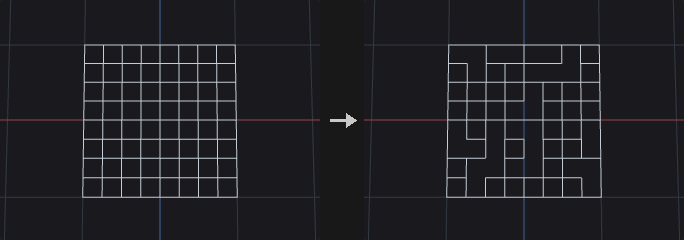
This is the same machinery as Remove Shared Edges in Divide, with a different granularity: Divide works on a primitive group and merges all interior edges between the selected faces, while Dissolve works on an edge group and merges only the edges you picked.
Connected selected edges are merged into one block in a single step instead of one by one, because merging one by one needs a topology rebuild each time and intermediate states may not be valid polygons. A block that does not yield a single boundary loop (it has holes) is left as it is, since a primitive can store only one vertex loop; the Bridge option decides what happens to such blocks.
Remove Inline Points is on by default and is the easily overlooked half of Dissolve: after merging, the end points of a dissolved edge typically have only two edges left and are collinear, so the face count drops while the vertex count does not. The test uses an angle rather than exact collinearity, as computed edges are rarely exactly collinear.
Boundary edges, which have only one face, are skipped, and their number is written to the detail attribute dissolve_skipped.
Inputs
| Input | Type | Description |
|---|---|---|
geo | GEOMETRY | Geometry with edges to dissolve. |
Outputs
| Output | Type | Description |
|---|---|---|
geo | GEOMETRY | Geometry with the faces merged. |
Parameters
| Parameter | Type | Default | Description |
|---|---|---|---|
Group edge_group | string | (empty) | Edge group to dissolve. Empty selects no edges, which with Dissolve Non-Selected means all edges are dissolved. |
Operation operation | menu | Dissolve Selected | Dissolve the selected edges, or all edges except the selected. Options: Dissolve Selected (selected), Dissolve Non-Selected (non_selected). |
Recompute Normals recompute_normals | toggle | off | Recompute normals on the class that already had N. Normals are not created where none existed. |
Remove Inline Points remove_inline_points | toggle | on | Remove points left on straight lines after the merge. |
Collinearity Tolerance inline_tolerance | float [0.0..90.0] | 0.1 | Angle in degrees below which three points count as collinear. Disabled when remove_inline_points is off. |
Remove Unused Points delete_lone_points | toggle | off | Delete points that no primitive uses after dissolving. |
Bridge bridge | menu | Leave Polygons Unmerged | What to do when a merged block has holes: leave the polygons unmerged, create bridged polygons, or delete them. Options: Leave Polygons Unmerged (leave), Create Bridged Polygons (bridged), Delete Polygons (delete). |
Boundary Edge Group output_boundary_group | string | (empty) | Name of an edge group that receives the outer border of the merged faces. Empty means not created. |
Compared with Houdini
The Create Disjoint Polygons bridge option is not implemented.
Divide (PCG)#
PCG_Divide · category PCG/modify · Houdini: Divide (SOP)
Triangulates or splits faces into convex polygons, cuts them into bricks, merges shared edges, or computes the dual.
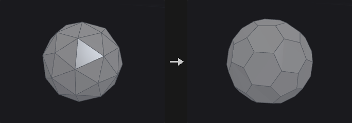
Triangulation is done carefully here: convex faces use a fan (linear time, and most faces are convex), concave faces use ear clipping. The Convert node's Triangles option is a plain fan, which gives triangles that reach outside the shape on concave n-gons, and concave n-gons are common in the output of Boolean, PolyBevel and Carve. Use this node when correct triangles are needed.
With Maximum Edges above 3, faces are first ear-clipped and then greedily merged back into convex polygons, only across diagonals and only when the result is still convex, so the covered area is unchanged.
Bricker Polygons cuts faces with three sets of parallel planes spaced by Brick Size, handy for floors and window panes of buildings. Smooth Polygons is not implemented (use Subdivide).
Inputs
| Input | Type | Description |
|---|---|---|
geo | GEOMETRY | Geometry to divide. |
Outputs
| Output | Type | Description |
|---|---|---|
geo | GEOMETRY | The divided geometry. |
Parameters
| Parameter | Type | Default | Description |
|---|---|---|---|
Group group | string | (empty) | Group pattern of primitives to process. |
Convex Polygons
| Parameter | Type | Default | Description |
|---|---|---|---|
Convex Polygons convex_polygons | toggle | on | Split faces into convex polygons. |
Maximum Edges max_edges | int [3..4096] | 3 | Maximum number of edges of the resulting polygons. 3 gives triangles. Disabled when convex_polygons is off. |
Don't Generate Slivers avoid_slivers | toggle | off | Prefer triangulations that avoid thin sliver triangles. Applies when non-planar triangulation is on. Disabled when convex_polygons is off triangulate_nonplanar is off. |
Avoid Small Angles avoid_small_angles | toggle | off | Prefer triangulations that avoid very small angles. Applies when non-planar triangulation is on. Disabled when convex_polygons is off triangulate_nonplanar is off. |
Triangulate Non-Planar
| Parameter | Type | Default | Description |
|---|---|---|---|
Triangulate Non-Planar triangulate_nonplanar | toggle | on | Triangulate polygons that are not planar. |
Tolerance planar_tolerance | float [0.0..] | 0.0001 | Distance within which a polygon is considered planar. Disabled when triangulate_nonplanar is off. |
Bricker Polygons
| Parameter | Type | Default | Description |
|---|---|---|---|
Bricker Polygons brick_polygons | toggle | off | Cut faces into bricks using planes spaced by the brick size. |
Size brick_size_x brick_size_y brick_size_z | float [0.0..] | 1, 1, 1 | Spacing of the cutting planes along each axis. Disabled when brick_polygons is off. |
Offset brick_offset_x brick_offset_y brick_offset_z | float | 0, 0, 0 | Offset of the brick grid along each axis. Disabled when brick_polygons is off. |
Angle brick_angle_x brick_angle_y brick_angle_z | float [-3600..3600] | 0, 0, 0 | Rotation of the brick grid in degrees about each axis. Disabled when brick_polygons is off. |
Bricker Shared Edges brick_shared_edges | toggle | on | Keep the points on cuts shared between neighbouring bricks. Disabled when brick_polygons is off. |
Remove Shared Edges
| Parameter | Type | Default | Description |
|---|---|---|---|
Remove Shared Edges remove_shared_edges | toggle | off | Merge the primitives of the group by removing the edges between them. |
Compute Dual
| Parameter | Type | Default | Description |
|---|---|---|---|
Compute Dual compute_dual | toggle | off | Replace the mesh with its dual: one point per face and one face per original point. |
Attributes to Swap attributes_to_swap | string | * ^P | Attributes exchanged between the original and the dual elements. Wildcard pattern, default is everything except P. Disabled when compute_dual is off. |
Compared with Houdini
Smooth Polygons is not implemented; use the Subdivide node.
Edge Collapse (PCG)#
PCG_EdgeCollapse · category PCG/modify · Houdini: Edge Collapse (SOP)
Collapses each connected run of selected edges into a single point at the run's center.
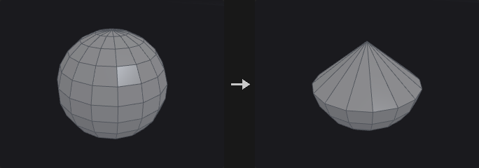
Edges in the group that are connected in a chain are collapsed into one point placed at the center of the chain's points. Afterwards duplicate corners and faces that can no longer stand are removed.
Inputs
| Input | Type | Description |
|---|---|---|
geo | GEOMETRY | Geometry with edges to collapse. |
Outputs
| Output | Type | Description |
|---|---|---|
geo | GEOMETRY | Geometry after the collapse. |
report | STRING | Text summary of what was changed. |
Parameters
| Parameter | Type | Default | Description |
|---|---|---|---|
Group edges | string | (empty) | Edge group pattern. Empty means all edges. |
Remove Degenerate Primitives remove_degenerate | toggle | on | Remove duplicate corners and faces that collapse to fewer than three corners. |
Edge Divide (PCG)#
PCG_EdgeDivide · category PCG/modify · Houdini: Edge Divide (SOP)
Inserts points on selected edges and optionally connects them to split the faces.
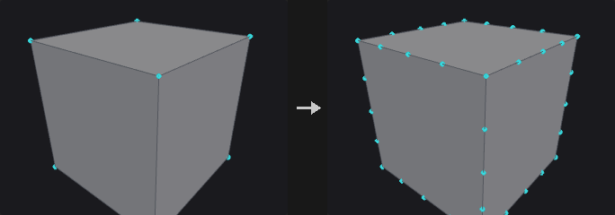
Inserting points and connecting them are two separate steps. Insertion is safe for any face; connecting has a unique answer only when exactly two edges of a face are cut, since otherwise there is no non-arbitrary choice for where a point should connect.
- Face with 0 edges cut: unchanged.
- Face with 2 edges cut and Connect on: split into Cuts + 1 pieces.
- Any other case: points are inserted only and the face becomes an n-gon with more edges.
Cut positions can be given explicitly (0.2 0.5 0.9); otherwise the edge is divided evenly according to Cuts.
Inputs
| Input | Type | Description |
|---|---|---|
geo | GEOMETRY | Geometry with edges to divide. |
Outputs
| Output | Type | Description |
|---|---|---|
geo | GEOMETRY | Geometry with the new points and cuts. |
Parameters
| Parameter | Type | Default | Description |
|---|---|---|---|
Group edge_group | string | (empty) | Edge group pattern of the edges to divide. |
Divisions cuts | int [1..64] | 1 | Number of evenly spaced points inserted on each edge. Ignored when Cut Positions is set. Disabled when cut_positions ≠ "". |
Cut Positions cut_positions | string | (empty) | Custom parameter positions along the edge, separated by spaces, for example 0.25 0.5 0.75. Empty divides evenly using Cuts. |
Connect Cuts connect | toggle | on | When exactly two edges of a face are cut, join the new points with new edges and split the face. |
Output Edge Group output_edge_group | string | (empty) | Name of an edge group that receives the resulting edges. Empty means not created. |
Output Point Group output_point_group | string | (empty) | Name of a point group that receives the inserted points. Empty means not created. |
Compared with Houdini
For faces with three or more cut edges, Houdini fans the new points to the face center, which adds a point not on any edge. This node only inserts the points; use Divide afterwards to decide how to cut.
Edge Equalize (PCG)#
PCG_EdgeEqualize · category PCG/modify · Houdini: Edge Equalize (SOP)
Evens out edge lengths along edge chains, either by redistributing points along the polyline or by Houdini's target-length methods.
Selected edges are strung into chains. With Redistribute Along Curve (this plugin's method) the points are redistributed into equal segments along the original polyline, so the shape and total length stay the same. Open chains keep their end points; for pure closed loops the phase that moves the points least is chosen; loops passing through a fork point keep the fork point pinned.
The other three methods follow Houdini: the target edge length is the average, longest or shortest of the selected edges, each edge is scaled about its midpoint, and shared points are averaged and iterated to convergence. The shape and the total length change.
Inputs
| Input | Type | Description |
|---|---|---|
geo | GEOMETRY | Geometry containing the edges. |
Outputs
| Output | Type | Description |
|---|---|---|
geo | GEOMETRY | Geometry with the points moved. |
report | STRING | Text summary of the operation. |
Parameters
| Parameter | Type | Default | Description |
|---|---|---|---|
Group edges | string | (empty) | Edge group pattern. Empty means all edges. |
Group Type group_type | menu | Guess from Group | How the group is interpreted (edges, points, primitives, or guessed). Only used by the three Houdini methods. Options: Guess from Group (guess), Edges (edges), Points (points), Primitives (prims). Disabled when method = redistribute. |
Method method | menu | Redistribute Along Curve (PCG) | Redistribute keeps the polyline shape and total length. The other methods make all selected edges one common length. Options: Redistribute Along Curve (PCG) (redistribute), Average Edge Length (average), Longest Edge Length (longest), Shortest Edge Length (shortest). |
Equalize measure | menu | Arc Length | Whether the segments are equal in arc length along the polyline or in straight-line (chord) distance. Options: Arc Length (arc_length), Chord Length (chord). Hidden when method ≠ redistribute. |
Output Edge Group output_edge_group | string | (empty) | Name of an edge group that receives the processed edges. Empty means not written. |
Edge Straighten (PCG)#
PCG_EdgeStraighten · category PCG/modify · Houdini: Edge Straighten (SOP)
Pulls each open chain of selected edges into a straight line, keeping its end points fixed.
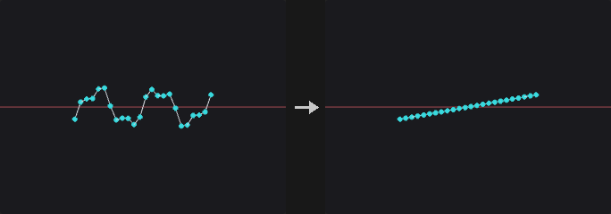
Each open chain in the edge group is straightened between its two end points. Closed loops are skipped, and the report states how many.
Inputs
| Input | Type | Description |
|---|---|---|
geo | GEOMETRY | Geometry containing the edge chains. |
Outputs
| Output | Type | Description |
|---|---|---|
geo | GEOMETRY | Geometry with straightened chains. |
report | STRING | Text summary, including the number of skipped loops. |
Parameters
| Parameter | Type | Default | Description |
|---|---|---|---|
Group edges | string | (empty) | Edge group pattern. Empty means all edges. Closed loops are skipped. |
Spacing spacing | menu | Preserve Relative Spacing | How the points are placed on the line: Preserve keeps their relative arc-length proportions, Equalize spaces them evenly, Project projects them perpendicularly onto the line. Options: Preserve Relative Spacing (preserve), Equalize Edge Lengths (uniform), Project onto Line (project). |
Ends (PCG)#
PCG_Ends · category PCG/modify · Houdini: Ends (SOP)
Closes, opens, unrolls or rolls curves.
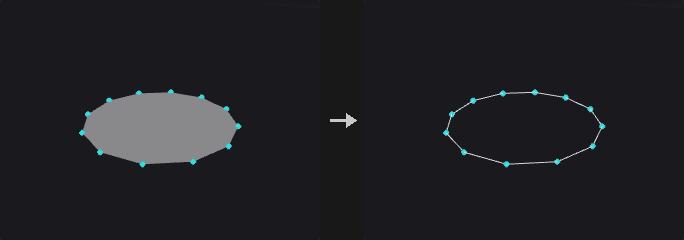
The prim_closed flag decides whether there is an edge between the last and first point. Many nodes (Resample, Carve, Sweep, PolyExpand2D) treat open and closed curves differently, and the upstream flag is often not what you need.
The four operations differ in whether the geometry changes:
- Close Straight: flips the flag, adds one closing edge, so the shape changes.
- Open: flips the flag, removes one edge, so the shape changes.
- Unroll with Shared Points: closed to open, hanging the first point again on the end. The edge count and shape are unchanged, the only operation that merely changes the representation.
- Roll: the inverse of unroll, turning an open curve with coinciding ends into a closed one with the duplicate point removed.
Unroll is the most common: a closed loop has no starting point, so a resampler does not know where to start. After unrolling it is an ordinary open curve that looks identical; roll it back when done. Unroll followed by roll is an exact topological identity.
Primitives with two points are not closed, since that would create two coincident edges (a zero-area degenerate face that looks the same as before but breaks normals and area later). They are silently skipped.
Inputs
| Input | Type | Description |
|---|---|---|
geo | GEOMETRY | Curves to process. |
Outputs
| Output | Type | Description |
|---|---|---|
geo | GEOMETRY | The processed curves. |
Parameters
| Parameter | Type | Default | Description |
|---|---|---|---|
Group group | string | (empty) | Group pattern of the primitives to process. |
Close U op | menu | Close Straight | Operation to apply: close, open, unroll (closed to open with a repeated first point) or roll (undo of unroll). Options: Close Straight (close), Open (open), Unroll with Shared Points (unroll), Roll (Undo Unroll) (roll). |
Tolerance tolerance | float [0.0..] | 0 | For Roll: first and last points closer than this distance count as coincident even if they are different points. Hidden when op ≠ roll. |
Exploded View (PCG)#
PCG_ExplodedView · category PCG/modify · Houdini: Exploded View (SOP)
Moves fracture pieces apart from each other so cuts can be inspected.
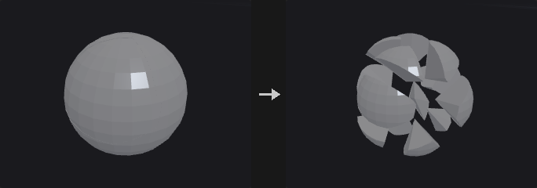
The output of Voronoi Fracture, Voronoi Cluster and Convex Decompose fits together seamlessly, so it looks as if nothing was cut. This node pushes the pieces apart.
Every piece undergoes a rigid motion: each piece is translated individually, so each piece's volume is unchanged. (Scaling the whole geometry about the center separates the pieces but scales each by the same factor, and its volume by the cube.)
The piece center is the area-weighted centroid, not the mean of the points. A mean would be biased by mesh density: a Voronoi cut face is one n-gon with few points, while the outer shell inherits the original tessellation with many.
Pieces come from a primitive attribute (name, piece or cluster, as written by the upstream nodes) or from connected components.
Inputs
| Input | Type | Description |
|---|---|---|
geo | GEOMETRY | Geometry made of fitted pieces. |
Outputs
| Output | Type | Description |
|---|---|---|
geo | GEOMETRY | Geometry with each piece moved away from the center. |
Parameters
| Parameter | Type | Default | Description |
|---|---|---|---|
Pieces From piece_from | menu | Piece Attribute | Where the pieces are identified: from a primitive attribute or from connectivity. Options: Piece Attribute (attribute), Connectivity (connectivity). |
Piece Attribute piece_attribute | string | name | Primitive attribute that identifies the pieces. Hidden when piece_from ≠ attribute. |
Explode From center | menu | Pieces Centroid | The point pieces move away from: the centroid of all pieces, a specified point, or the center of the bounding box. Options: Pieces Centroid (centroid), Specified Point (origin), Bounding Box Center (bbox). |
Center center_x center_y center_z | float | 0, 0, 0 | Explosion center when Specified Point is chosen. Hidden when center ≠ origin. |
Explode Type mode | menu | Uniform Distance | Uniform moves every piece by the same distance (good for thin shell layers); Proportional moves each piece in proportion to its distance from the center (an explosion look). Options: Uniform Distance (uniform), Proportional to Distance (proportional). |
Explode Distance distance | float | 0.25 | Movement distance. In Proportional mode it is a multiplier on the distance from the center. |
Relative to Bounding Box relative_to_size | toggle | on | Measure the distance relative to the longest side of the bounding box. In Proportional mode it only affects Up Bias. |
Up Bias up_bias | float | 0 | Additional movement along +Y. |
Piece Scale shrink | float [0.0..1.0] | 1 | Scales each piece about its own centroid. 1 leaves it unchanged; smaller values leave gaps between cut faces. |
Extract Transform (PCG)#
PCG_ExtractTransform · category PCG/modify · Houdini: Extract Transform (SOP)
Computes the best-fit transform from a reference geometry to a deformed or moved copy of it.
The two inputs must be the same geometry before and after (point numbers correspond one to one). The node solves for the best rigid (Kabsch), similarity (Umeyama, adds uniform scale), non-uniform scale or full affine transform.
The point output is an instance point (P, orient, pscale; scale for non-uniform; transform for affine or matrix output). Feeding it to Copy to Points with the reference as the source places the copy on the target. The geo output is the reference transformed directly. The report contains the residual RMS.
With Use Piece Attribute, the geometry is split by a primitive or point attribute and each piece gets its own transform and its own output point (carrying the attribute); the point is placed at the transformed piece center and the pivot is the weighted center of the reference piece. Pieces with too few points for the fit (fewer than 3, or 4 for affine) get a translation only. Without it, one transform is fitted to the whole geometry.
Inputs
| Input | Type | Description |
|---|---|---|
reference | GEOMETRY | The geometry before the transform. |
target | GEOMETRY | The same geometry after the transform; same point count and order. |
Outputs
| Output | Type | Description |
|---|---|---|
point | GEOMETRY | Instance point(s) carrying the transform. |
geo | GEOMETRY | The reference geometry moved by the fitted transform. |
report | STRING | Text report including the residual RMS. |
Parameters
| Parameter | Type | Default | Description |
|---|---|---|---|
Piece Attribute piece_attribute | string | name | Name of the attribute that splits the geometry into pieces. |
Use Piece Attribute use_piece_attribute | toggle | off | Fit one transform per piece instead of one for the whole geometry. |
Attribute Class attribute_class | menu | Primitive | Whether the piece attribute is on primitives or points. Options: Primitive (prim), Point (point). Disabled when use_piece_attribute is off. |
Extraction Method mode | menu | Translation and Rotation | Type of transform to fit: rigid, rigid plus uniform scale, full affine, or rigid plus non-uniform scale. Options: Translation and Rotation (rigid), Translation, Rotation, and Uniform Scale (similarity), Full Transform (affine), Translation, Rotation, and Non-Uniform Scale (nonuniform). |
Output Attributes output_attributes | menu | Standard Instance Attributes | How the transform is written: standard instance attributes, a 3x3 matrix plus translation, or a 4x4 matrix. With Standard, the Full Transform mode still writes a 3x3 transform (shear is not split out). Matrices are written in Houdini's convention (row vectors, translation in the fourth row), so Copy to Points and Houdini read them the same way. Options: Standard Instance Attributes (standard), Transform Matrix (3×3) and Translation (matrix3), Transform Matrix (4×4) (matrix4). |
Weight Attribute weight_attribute | string | (empty) | Point attribute on the reference used as a fit weight. Empty means equal weights. |
Compute Distortion distortion_attribute | string | distortion | Name of the attribute that receives the residual RMS of each piece (distance from the transformed reference to the target). |
Compute Distortion compute_distortion | toggle | off | Write the residual RMS to the attribute named in Distortion Attribute on each output point. |
Compared with Houdini
The weight attribute does not exist on the Houdini node; it is an addition of this plugin.
Facet (PCG)#
PCG_Facet · category PCG/modify · Houdini: Facet (SOP)
Runs a fixed chain of topology cleanup and hard-edge options: unique points, consolidate, orient, cusp, inline and degenerate removal, normals.
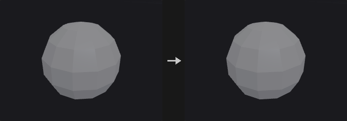
The enabled steps always run in Houdini's order, each consuming the result of the previous one:
unique points -> consolidate -> orient -> cusp -> remove inline -> remove degenerate -> normals
The easy trap is that orient has to precede cusp. With inconsistent winding, adjacent face normals point opposite ways, the angle between them is always 180 degrees, and the whole geometry would be split into hard edges.
Cusp is not the same as the vertex mode of a Normal node. Normal only stores one normal per corner and leaves the geometry alone; Facet's cusp actually splits the points, so any point normal computed afterwards is hard. Use Facet for engine export, UV seams, or when downstream nodes must see the hard edges.
The group is a primitive group; primitives outside it are left exactly as they are (no winding change, no point splitting, no corner removal).
Inputs
| Input | Type | Description |
|---|---|---|
geo | GEOMETRY | Geometry to process. |
Outputs
| Output | Type | Description |
|---|---|---|
geo | GEOMETRY | The processed geometry. |
Parameters
| Parameter | Type | Default | Description |
|---|---|---|---|
Group group | string | (empty) | Primitive group pattern. Primitives outside the group are untouched. |
Unique Points unique_points | toggle | off | Give every primitive its own copy of its points, so no points are shared. |
Consolidate Points consolidate_points | toggle | off | Merge points that lie within Distance of each other. |
Distance consolidate_distance | float [0.0..] | 0.001 | Distance within which points are merged. Disabled when consolidate_points is off. |
Orient Polygons orient_polygons | toggle | off | Make the winding of adjacent polygons consistent. |
Cusp Polygons cusp_polygons | toggle | off | Split points along edges where adjacent faces meet at a sharper angle than Cusp Angle. |
Cusp Angle cusp_angle | float [0.0..180.0] | 60 | Angle in degrees between adjacent face normals above which the shared edge becomes hard. Disabled when cusp_polygons is off. |
Remove Inline Points remove_inline | toggle | off | Remove points lying on a straight line between their neighbours. |
Inline Distance inline_distance | float [0.0..] | 0.001 | Distance tolerance for deciding a point is inline. Disabled when remove_inline is off. |
Remove Degenerate remove_degenerate | toggle | off | Remove repeated points of primitives and primitives that collapse. |
Degenerate Distance degenerate_distance | float [0.0..] | 0.0001 | Distance tolerance for the degenerate test. Disabled when remove_degenerate is off. |
Remove Bad Primitives remove_bad_prims | toggle | on | Also delete primitives left with too few points after the removal. Disabled when remove_degenerate is off. |
Post-Compute Normals post_normals | toggle | off | Compute point normals after all other steps. |
Make Normals Unit Length unit_normals | toggle | off | Normalize the normals to unit length. Disabled when normals are computed by the previous option, since those are already unit. Disabled when post_normals is on. |
Fracture Detail (PCG)#
PCG_FractureDetail · category PCG/modify
Adds noise to the cut (interior) faces of fracture pieces while keeping the pieces fitting together.
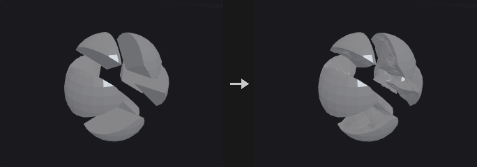
Cut faces from a Voronoi fracture are perfectly flat and look fake. The difficulty is that the pieces must still fit back into the original shape and the outer silhouette must not change.
The displacement is a pure function of world position, not a push along normals. Pieces A and B share a wall, each storing its own copy of the points at the same position but with opposite normals. A scalar pushed along normals would move the two copies in opposite directions and open a gap or interpenetrate. A vector noise depending only on world position gives both copies bit-identical displacement, so the wall stays shared and merely bends. The sum of all piece volumes is therefore unchanged.
The falloff is a pure function too. The rim where the cut face meets the original surface is pinned so that the outer silhouette does not change. Falloff uses the Euclidean distance to the global point cloud of rim points rather than a graph distance along the surface, because graph distances can differ between the two copies of a shared wall and would tear it.
Divisions first applies linear subdivision, since a cut face is typically one large n-gon and pushing its few points only tilts the plane. The whole piece is subdivided, since subdividing only the cut face would leave T-vertices on the border.
Triangulate Interior (on by default) triangulates the cut faces by picking the fan apex as the vertex with the lexicographically smallest coordinates, so that both sides of a shared wall pick the same diagonals. Without this, a displaced non-planar wall can open a thin crack.
Beveling is not part of this node: the cut faces are already a primitive group, so connect PolyBevel.
Inputs
| Input | Type | Description |
|---|---|---|
geo | GEOMETRY | Fractured pieces with the interior faces in a group. |
Outputs
| Output | Type | Description |
|---|---|---|
geo | GEOMETRY | Pieces with noise-displaced interior faces. |
Parameters
| Parameter | Type | Default | Description |
|---|---|---|---|
Interior Group group | string | interior | Primitive group of the cut (interior) faces. Only these faces are displaced. |
Subdivisions divisions | int [0..6] | 2 | Rounds of linear subdivision applied first to give the noise points to move. |
Triangulate Interior triangulate_interior | toggle | on | Triangulate the interior faces in a position-determined way so that both sides of a shared wall match and no cracks open. |
Amplitude amount | float [0.0..] | 0.02 | Displacement amplitude. |
Frequency frequency | float [0.0..] | 8 | Noise frequency. |
Relative to Bounding Box relative_to_size | toggle | on | Interpret amplitude, frequency and falloff relative to the longest side of the bounding box. |
Edge Falloff falloff | float [0.0..] | 0.1 | Distance from the outer rim over which the displacement fades out. 0 means no falloff. |
Falloff Shape falloff_mode | menu | Smooth | Shape of the falloff curve. Options: Smooth (smooth), Linear (linear). Disabled when falloff = 0. |
Noise
| Parameter | Type | Default | Description |
|---|---|---|---|
Noise Type noise_type | menu | Value | Type of noise used for the displacement. Options: Value (value), Perlin (perlin), Simplex (simplex), Worley Cellular F1 (worley), Worley Cellular F2-F1 (worley_f2f1). |
Fractal Type fractal | menu | None | Fractal layering mode of the noise. Options: None (none), Standard (standard), Terrain (terrain), Hybrid Terrain (hybrid_terrain). |
Max Octaves octaves | int [1..16] | 3 | Number of noise layers. Hidden when fractal = none. |
Lacunarity lacunarity | float [0.0..16.0] | 2 | Frequency multiplier from one octave to the next. Hidden when fractal = none. |
Roughness roughness | float [0.0..1.0] | 0.5 | Amplitude multiplier from one octave to the next. Hidden when fractal = none. |
Seed rand_seed | int [0..] | 0 | Seed that offsets the noise. |
Fuse (PCG)#
PCG_Fuse · category PCG/modify · Houdini: Fuse (SOP)
Snaps nearby points together (to each other, to a grid, or to a target) and optionally welds them into single points.
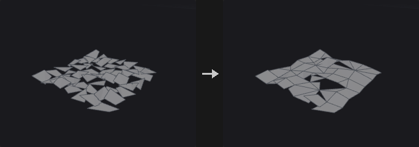
Three stages: Snap decides which points count as the same and where they go, Fuse decides whether the topology is actually welded, and Output manages groups and normals.
Near-point snapping does a real radius search (uniform grid hashing) and takes the transitive closure of the pairs, so chains of close points end up in one cluster regardless of grid cell borders, unlike a quantizing fuse.
When the target input is connected, points in the group snap to points on the target. The two geometries are not merged; the target only provides the places to snap to. With Modify Target the roles swap and the modified target is output.
The position attribute can be a different 3-component attribute (for example a rest position), so that proximity is judged in another space. This is useful for cleanup after deformation.
Inputs
| Input | Type | Description |
|---|---|---|
geo | GEOMETRY | Geometry whose points are snapped and fused. |
target (optional) | GEOMETRY | Optional geometry whose points the group points snap to. |
Outputs
| Output | Type | Description |
|---|---|---|
geo | GEOMETRY | The snapped (and optionally welded) geometry. |
Parameters
Snap
| Parameter | Type | Default | Description |
|---|---|---|---|
Group group | string | (empty) | Point group pattern to snap. Empty means all points. |
Snap › Target
| Parameter | Type | Default | Description |
|---|---|---|---|
Target Points (2nd Input) use_target | toggle | off | Enables the target group settings. |
Target Group target_group | string | (empty) | Point group pattern on the target input to snap to. |
Modify Target modify_target | toggle | off | Snap the target's points to the input and output the changed target instead. |
Snap
| Parameter | Type | Default | Description |
|---|---|---|---|
Position Attribute position_attribute | string | P | 3-component point attribute used to measure proximity. P by default. |
Snap To snap_to | menu | Near Points | Near Points snaps points within a radius; Grid snaps to a regular grid; None snaps nothing. Options: Near Points (near_points), Grid (grid), None (none). |
Using using | menu | Least Point Number | Which point of a cluster is chosen as the representative: lowest number, closest, or highest number. Options: Least Point Number (least_point_number), Closest Point (closest), Greatest Point Number (greatest_point_number). Disabled when snap_to = none. |
Output Positions output_positions | menu | Average Value | Where snapped points end up: the average of the cluster, the chosen representative's position, or unchanged. Options: Average Value (average), Chosen Point (Using) (target), Keep Original (keep). Disabled when snap_to = none. |
Snap › Snap Distance
| Parameter | Type | Default | Description |
|---|---|---|---|
Use Snap Distance use_snap_distance | toggle | on | Use the fixed Snap Distance. Hidden when snap_to ≠ near_points. |
Snap Distance snap_distance | float [0.0..] | 0.001 | Points closer than this are snapped together. Hidden when snap_to ≠ near_points. |
Snap › Radius
| Parameter | Type | Default | Description |
|---|---|---|---|
Radius Attribute use_radius | toggle | off | Use a per-point radius attribute as the snap distance basis. Hidden when snap_to ≠ near_points. |
Radius Attribute radius_attribute | string | pscale | Point attribute holding the radius. Not read when a target is connected. Hidden when snap_to ≠ near_points. |
Snap › Match Attribute
| Parameter | Type | Default | Description |
|---|---|---|---|
Match Attribute use_match | toggle | off | Only snap points whose match attribute satisfies the condition. Hidden when snap_to ≠ near_points. |
Match Attribute match_attribute | string | name | Attribute compared between candidate points. Not read when a target is connected. Hidden when snap_to ≠ near_points. |
Match Condition match_condition | menu | Equal | Snap only points whose attribute values are equal, or only those that are unequal. Options: Equal (equal), Unequal (unequal). Hidden when snap_to ≠ near_points. |
Match Tolerance match_tolerance | float [0.0..] | 0 | Tolerance for comparing the attribute values. Hidden when snap_to ≠ near_points. |
Snap › Grid
| Parameter | Type | Default | Description |
|---|---|---|---|
Grid use_grid | toggle | off | Enables the grid settings. Hidden when snap_to ≠ grid. |
Grid Spacing grid_x grid_y grid_z | float [0.0..] | 0.1, 0.1, 0.1 | Grid spacing along each axis. Hidden when snap_to ≠ grid. |
Grid Offset grid_off_x grid_off_y grid_off_z | float | 0, 0, 0 | Offset of the grid origin. Hidden when snap_to ≠ grid. |
Fuse › Fuse
| Parameter | Type | Default | Description |
|---|---|---|---|
Fuse Snapped Points fuse_snapped_points | toggle | on | Weld snapped points into one point. When off, they are moved but the topology is unchanged. |
Keep Fused Points keep_fused_points | toggle | off | Keep the points that were merged away as unused points instead of deleting them. |
Remove Repeated Vertices and Degenerate Primitives remove_repeated | toggle | on | Remove repeated points within a primitive, and primitives left too small, after welding. |
Remove Unused Points from Degenerate Primitives remove_degenerate_unused | toggle | on | Also delete the points that became unused through this removal. |
Remove All Unused Points remove_all_unused | toggle | off | Delete every point not used by a primitive. |
Output Attributes and Groups › Output
| Parameter | Type | Default | Description |
|---|---|---|---|
Output use_output | toggle | on | Enables the output options. |
Recompute Affected Normals recompute_normals | toggle | on | Recompute point normals if the geometry has N. |
Snapped Points Group snapped_points_group | string | (empty) | Name of a point group for the points that were moved. Empty means not created. |
Snapped Destination Group snapped_to_group | string | (empty) | Name of a point group for the points that others snapped to. Empty means not created. |
Attributes to Snap attributes_to_snap | string | (empty) | Point attributes (wildcards allowed) merged together with P using Output Positions. |
Intersection Analysis (PCG)#
PCG_IntersectionAnalysis · category PCG/modify · Houdini: Intersection Analysis (SOP)
Places a point wherever triangles or polylines pass through each other and records their sources.
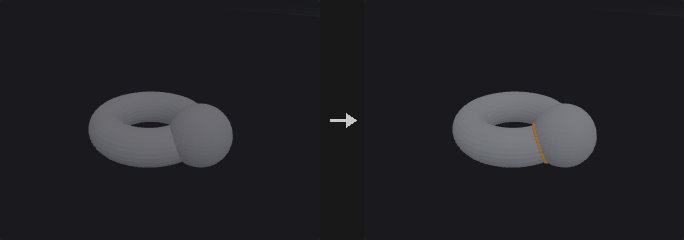
With only the first input connected, it finds self-intersections; with both inputs it finds intersections between them. Each intersection gets a point carrying, for the two sources, the input number, primitive number and primitive UVW, each stored twice: [primitive containing the edge, primitive of the triangle that is pierced]. An attribute name left empty is not written. The input does not need to be a closed manifold.
Inputs
| Input | Type | Description |
|---|---|---|
geo | GEOMETRY | Geometry to test. |
geo_b (optional) | GEOMETRY | Optional second geometry. When connected, intersections are searched between the two inputs. |
Outputs
| Output | Type | Description |
|---|---|---|
geo | GEOMETRY | Points at the intersections. |
report | STRING | Text summary of the analysis. |
Parameters
| Parameter | Type | Default | Description |
|---|---|---|---|
Group A group_a | string | (empty) | Group pattern restricting the primitives of the first input. |
Group B group_b | string | (empty) | Group pattern restricting the primitives of the second input. Only used when it is connected. |
Output Attributes
| Parameter | Type | Default | Description |
|---|---|---|---|
Input Number input_attribute | string | input | Name of the integer attribute (two values) holding the input numbers. Empty means not written. |
Primitive Number prim_attribute | string | sourceprim | Name of the integer attribute (two values) holding the primitive numbers. Empty means not written. |
Primitive UVW uvw_attribute | string | sourceprimuv | Name of the float attribute (six values: the UVW of the first primitive, then of the second) holding the primitive UVW. Empty means not written. |
Join (PCG)#
PCG_Join · category PCG/modify · Houdini: Join (SOP)
Connects the selected polylines in order into one polyline, bridging gaps with straight segments.
The order is primitive order. The typical use is to join separately made path pieces into one complete path, where the end points are not supposed to coincide and the connecting segments are exactly what you want. This bridging is the one difference from PolyPath.
Reverse To Fit (on by default): before each primitive is appended, the end nearer the current tail is placed first. Houdini's Join does not do this, and without it a slightly inconsistent direction among the input primitives yields a zigzag that doubles back. That happens almost inevitably with Clip or Boolean output, as those do not guarantee consistent segment orientation. With it off, the result is strictly tail-to-head.
Tolerance is not a weld radius but a measure of how near counts as already connected: a gap smaller than it is treated as the same point (no bridging segment, no zero-length edge), a larger gap gets a connecting segment.
Loop joins the last segment back to the first start and outputs a closed primitive. Partition Attribute joins each group of a primitive attribute separately (for example one path per name).
Primitive attributes are taken from the first primitive of the chain, as in Houdini. Vertex attributes follow the corners, so when a line is reversed its UVs and widths are reversed with it; otherwise texture flow would flip at the seam.
Inputs
| Input | Type | Description |
|---|---|---|
geo | GEOMETRY | Polylines to join. |
Outputs
| Output | Type | Description |
|---|---|---|
geo | GEOMETRY | The joined polylines. |
Parameters
| Parameter | Type | Default | Description |
|---|---|---|---|
Group group | string | (empty) | Primitive group pattern selecting the polylines to join. |
Loop loop | toggle | off | Close the result by joining the last segment back to the first point. |
Tolerance tolerance | float [0.0..] | 0 | Gaps smaller than this count as already connected: no bridging segment is added. |
Reverse Primitives to Fit reverse_to_fit | toggle | on | Before each primitive is added, check which of its ends is nearer and reverse it if needed. |
Partition Attribute partition_attribute | string | (empty) | Primitive attribute whose values partition the primitives; each group is joined separately. Empty joins everything into one. |
Primitive Attributes prim_attribs | menu | Keep First | Whether the result takes the primitive attributes of the first primitive in the chain, or drops them. Options: Keep First (first), Drop (drop). |
Remove Unused Points remove_unused_points | toggle | off | Delete the points that no primitive uses after joining. |
Loop Cut (PCG)#
PCG_LoopCut · category PCG/modify
Inserts a complete edge loop through quads, starting from seed edges.
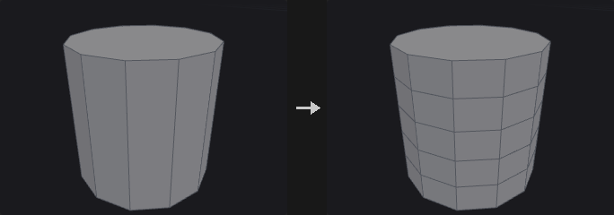
Works like the loop mode of PolySplit (Loop Cut or Insert Edge Loop in other packages). From a seed edge it enters the neighbouring quad, takes the opposite edge (two steps around the vertex loop), then crosses to the next quad, until it returns to the start or hits a boundary or a non-quad. The collected edges are cut like Edge Divide with connect on.
A non-quad ends the loop: a triangle has no opposite edge, and a pentagon has two, so the loop is genuinely broken there (Blender and Maya behave the same).
One seed edge is enough; giving several on the same loop does not cut it twice.
Inputs
| Input | Type | Description |
|---|---|---|
geo | GEOMETRY | Mesh with quad loops. |
Outputs
| Output | Type | Description |
|---|---|---|
geo | GEOMETRY | Mesh with the loop(s) inserted. |
Parameters
| Parameter | Type | Default | Description |
|---|---|---|---|
Seed Edges edge_group | string | (empty) | Edge group pattern of seed edges. The loops start from these edges and run through quads. |
Number of Loops cuts | int [1..64] | 1 | Number of evenly spaced loops inserted. Ignored when Cut Positions is set. Disabled when cut_positions ≠ "". |
Cut Positions cut_positions | string | (empty) | Custom parameter positions along the edges, separated by spaces. When set, Cuts is ignored. |
Output Edge Group output_edge_group | string | (empty) | Name of an edge group that receives the new edges. Empty means not created. |
Output Point Group output_point_group | string | (empty) | Name of a point group that receives the new points. Empty means not created. |
Match Axis (PCG)#
PCG_MatchAxis · category PCG/modify · Houdini: Match Axis (SOP)
Rotates geometry by the smallest rotation that takes one axis direction onto another.
Rotates From Axis onto To Axis with the minimal rotation, about the origin, the centroid or the bounding box center. If Up From and Up To are both non-zero, a further rotation about the main axis then also aligns the up vectors. The vector attributes N, up, v and orient are rotated along with the points.
Inputs
| Input | Type | Description |
|---|---|---|
geo | GEOMETRY | Geometry to rotate. |
Outputs
| Output | Type | Description |
|---|---|---|
geo | GEOMETRY | The rotated geometry. |
Parameters
| Parameter | Type | Default | Description |
|---|---|---|---|
Group group | string | (empty) | Group pattern of the points to rotate. Empty means all. |
From Axis from_x from_y from_z | float | 0, 1, 0 | Direction that is rotated onto To Axis. |
To Axis to_x to_y to_z | float | 0, 0, 1 | Direction that From Axis ends up pointing to. |
Pivot pivot | menu | Origin | Point the rotation is performed about. Options: Origin (origin), Centroid (centroid), Bounding Box Center (bbox_center). |
Up From up_from_x up_from_y up_from_z | float | 0, 0, 0 | Up vector before the rotation. Used only when both Up vectors are non-zero. |
Up To up_to_x up_to_y up_to_z | float | 0, 0, 0 | Desired up vector after the rotation. Used only when both Up vectors are non-zero; the extra rotation about the main axis makes the up vectors line up. |
Match Size (PCG)#
PCG_MatchSize · category PCG/modify · Houdini: Match Size (SOP)
Moves and scales geometry to fit a reference box, and can stash the transform so it can be undone later.
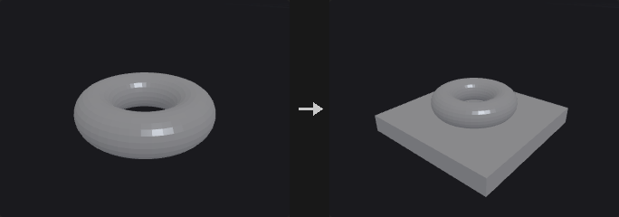
The real use is less resizing than establishing a recoverable canonical space: match any model to a unit box, work in that space (cut, scatter, compute UVs), then send it back with the stashed transform. The Stash and Restore fields are as important as the alignment.
If the second input is connected, the geometry is aligned to its bounding box. Otherwise (or with Location and Size) the target position and size parameters define the box.
When Restore Attribute names a detail attribute that actually exists on the geometry, the node only restores: it inverts the stored 4x4 matrix and applies it, ignoring all other parameters. As in Houdini, restoring and matching are two separate, mutually exclusive operations.
Inputs
| Input | Type | Description |
|---|---|---|
geo | GEOMETRY | Geometry to match. |
target (optional) | GEOMETRY | Optional reference geometry whose bounding box is the target. |
Outputs
| Output | Type | Description |
|---|---|---|
geo | GEOMETRY | The matched geometry. |
Parameters
| Parameter | Type | Default | Description |
|---|---|---|---|
Justify With justify_with | menu | Input If Wired | Input If Wired aligns to the second input when it is connected and otherwise to the target position and size below. Location and Size always uses the values below. Options: Input If Wired (input_if_wired), Location and Size (target_values). |
Bounds Group
| Parameter | Type | Default | Description |
|---|---|---|---|
Use Groups to Determine Justification Bounds use_group_bounds | toggle | off | Measure the bounds of a group instead of the whole geometry. |
Group group | string | (empty) | Group pattern whose bounds are used. Disabled when use_group_bounds is off. |
Group Type group_type | menu | Primitives | Whether the group contains primitives or points. Options: Primitives (prim), Points (point). Disabled when use_group_bounds is off. |
| Parameter | Type | Default | Description |
|---|---|---|---|
Target Position target_px target_py target_pz | float | 0, 0, 0 | Anchor of the reference box. On an axis where Justify is Min or Max it is that edge, otherwise it is the center. |
Target Size target_sx target_sy target_sz | float [0.0..] | 1, 1, 1 | Size of the reference box along each axis. |
Translate translate | toggle | on | Move the geometry to the reference box. |
Justify X justify_x | menu | Center | Which part of the geometry's bounding box (center, min or max) is placed on the reference, per axis. None leaves that axis alone. Options: Center (center), Min (min), Max (max), None (none). |
Justify Y justify_y | menu | Center | As for X. Options: Center (center), Min (min), Max (max), None (none). |
Justify Z justify_z | menu | Center | As for X. Options: Center (center), Min (min), Max (max), None (none). |
Justify To
| Parameter | Type | Default | Description |
|---|---|---|---|
Justify To use_justify_to | toggle | off | Enables the Justify To settings. Disabled when translate is off. |
X To to_x | menu | Same | Which part of the reference box (same as the input justification, min, center or max) the geometry is aligned to. Options: Same (same), Min (min), Center (center), Max (max). Disabled when translate is off } { use_justify_to is off } { justify_x = none. |
Y To to_y | menu | Same | As for X. Options: Same (same), Min (min), Center (center), Max (max). Disabled when translate is off } { use_justify_to is off } { justify_y = none. |
Z To to_z | menu | Same | As for X. Options: Same (same), Min (min), Center (center), Max (max). Disabled when translate is off } { use_justify_to is off } { justify_z = none. |
Offset By offset_x offset_y offset_z | float | 0, 0, 0 | Additional offset applied after the alignment. Disabled when translate is off } { use_justify_to is off. |
Scale to Fit
| Parameter | Type | Default | Description |
|---|---|---|---|
Scale to Fit scale_to_fit | toggle | off | Scale the geometry so its bounding box matches the size of the reference box. |
Uniform Scale uniform_scale | toggle | on | Scale equally on all axes so proportions are preserved. Disabled when scale_to_fit is off. |
Transform Attribute
| Parameter | Type | Default | Description |
|---|---|---|---|
Transform Storage use_xform | toggle | off | Enables the stash and restore attributes. |
Restore Transform restore_attribute | string | (empty) | Name of a detail attribute holding a stashed transform. If the geometry has it, only the inverse transform is applied and all other parameters are ignored. Empty means no restore. Disabled when use_xform is off. |
Stash Transform stash_attribute | string | xform | Name of the detail attribute that receives the 4x4 matrix of the transform that was applied. Disabled when use_xform is off. |
Merge (PCG)#
PCG_Merge · category PCG/modify · Houdini: Merge (SOP), Point Merge (COP)
Combines up to six geometries into one.
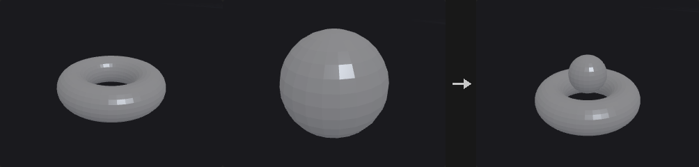
Concatenates the points and primitives of all connected inputs. Attributes and groups are the union across the inputs; where an input lacks an attribute its elements get zeros, and where it lacks a group its elements are simply not in the group. Empty inputs are ignored.
Inputs
| Input | Type | Description |
|---|---|---|
geo1 | GEOMETRY | First geometry. |
geo2 (optional) | GEOMETRY | Optional geometry. |
geo3 (optional) | GEOMETRY | Optional geometry. |
geo4 (optional) | GEOMETRY | Optional geometry. |
geo5 (optional) | GEOMETRY | Optional geometry. |
geo6 (optional) | GEOMETRY | Optional geometry. |
Outputs
| Output | Type | Description |
|---|---|---|
geo | GEOMETRY | The merged geometry. |
Mirror (PCG)#
PCG_Mirror · category PCG/modify · Houdini: Mirror (SOP)
Mirrors geometry about a plane, optionally keeping the original and welding the seam.
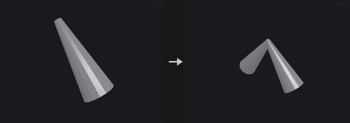
Three details matter and are handled here:
- Mirroring flips orientation, so the winding is reversed. A reflection has determinant -1; reflecting only positions leaves the mirrored half with inward normals (black in renders, culled, and negative volume). Reverse Normals does this.
- Vector attributes are reflected, not copied. Directions such as
N,v,upand tangents must be reflected, whileCdanduvare copied as they are. There is no type system to tell them apart, so a name list is used and can be extended. - In append mode the seam is welded. Without welding, the points sitting on the plane exist twice and the seam is a ring of doubled boundary edges, so topology is not closed and nodes that require closed meshes fail. Points close to the plane are first projected exactly onto it (floating point puts a point meant to be at x=0 at +-1e-8), then welded within Snap Tolerance.
Inputs
| Input | Type | Description |
|---|---|---|
geo | GEOMETRY | Geometry to mirror. |
Outputs
| Output | Type | Description |
|---|---|---|
geo | GEOMETRY | Mirrored geometry, or original plus mirrored geometry. |
Parameters
| Parameter | Type | Default | Description |
|---|---|---|---|
Group group | string | (empty) | Primitive group pattern to mirror. Empty means all. |
Operation operation | menu | Mirror All Primitives | Mirror All reflects all selected primitives. Clip and Mirror first cuts the geometry at the plane and mirrors the part on the kept side. Options: Mirror All Primitives (mirror_all), Clip Primitives and Mirror (clip_and_mirror). |
Keep Original mode | menu | Off (Mirrored Only) | Mirrored Only outputs just the reflected copy; Original + Mirrored outputs both. Options: Off (Mirrored Only) (mirror), On (Original + Mirrored) (append). |
Orient Plane with orient | menu | Direction | Define the plane by origin and normal, or by translate and rotate. Options: Direction (direction), Transform (transform). |
Origin origin_x origin_y origin_z | float | 0, 0, 0 | A point on the mirror plane. Hidden when orient = transform. |
Direction normal_x normal_y normal_z | float | 1, 0, 0 | Normal of the mirror plane. Hidden when orient = transform. |
Translate translate_x translate_y translate_z | float | 0, 0, 0 | A point on the mirror plane when oriented by transform. Hidden when orient = direction. |
Rotate rotate_x rotate_y rotate_z | float | 0, 0, 0 | Rotation in degrees that turns (1,0,0) into the plane normal, applied in X, Y, Z order. Hidden when orient = direction. |
Distance distance | float | 0 | Offset of the plane along its normal. |
Reverse Normals reverse_normals | toggle | on | Reverse the winding of the mirrored primitives. Turn off to keep their winding (faces pointing inward). |
Consolidate Seam fuse_result | toggle | on | Weld points on the mirror plane so that the two halves share them. Hidden when mode = mirror. |
Seam Distance snap_tolerance | float [0.0..1.0] | 0.0001 | Welding distance, relative to the longest side of the bounding box. Points close to the plane are first projected exactly onto it. Hidden when mode = mirror. |
Original Group original_group | string | (empty) | Name of a primitive group for the original primitives. Empty means not created. Hidden when mode = mirror. |
Output Group mirror_group | string | (empty) | Name of a primitive group for the mirrored primitives. Empty means not created. |
Reflect Vector Attributes vector_attributes | string | (see panel) | Names of 3-component direction attributes that are reflected along with the geometry, separated by spaces. |
Peak (PCG)#
PCG_Peak · category PCG/modify · Houdini: Peak (SOP)
Moves points along their normals by a distance.
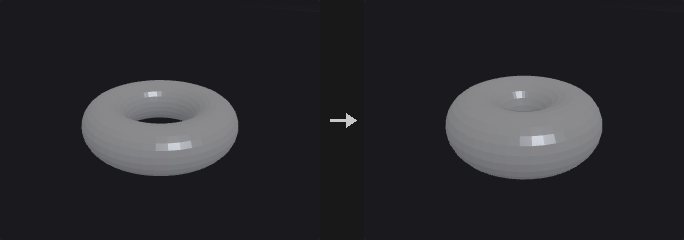
Pushing points by d along the point normal is not the same as growing the surface by d. A cube corner has normal (1,1,1)/sqrt(3); moving it by d shifts that corner only 0.577d along each face normal. Flat faces are no longer flat, the offset does not match the number entered, and a cube does not stay a cube. Houdini's Peak behaves the same way.
Miter Corners multiplies the displacement by 1 / (n_point . n_face), using the smallest dot product over the adjacent faces. This is a miter: the corner lands at the intersection of the offset adjacent faces. A cube corner gets sqrt(3), the cube stays a cube, and its edge length grows by exactly 2d. At nearly tangent folds the factor explodes, so Max Miter caps it.
Existing normals in N are used (upstream may have set a cusp angle or perturbed them); if there are none, they are computed but not written back. Distance Attribute gives each point its own factor, to combine with Attribute Fade or Attribute Noise.
Inputs
| Input | Type | Description |
|---|---|---|
geo | GEOMETRY | Geometry whose points are moved. |
Outputs
| Output | Type | Description |
|---|---|---|
geo | GEOMETRY | Geometry with displaced points. |
Parameters
| Parameter | Type | Default | Description |
|---|---|---|---|
Group group | string | (empty) | Point group pattern to move. Empty means all points. |
Distance distance | float | 0.1 | Distance to move along the normal. Negative values move against it. |
Miter Corners miter_corners | toggle | off | Scale the displacement by the miter factor so that flat faces stay flat after the push. |
Max Miter Scale max_miter | float [1.0..10000.0] | 8 | Upper limit of the miter factor, to avoid blow-up at nearly tangent folds. Disabled when miter_corners is off. |
Distance Scale Attribute distance_attribute | string | (empty) | Point attribute multiplied into Distance. Empty means not used. |
Normal Attribute normal_attribute | string | N | Attribute holding the normals to push along. |
Point Jitter (PCG)#
PCG_PointJitter · category PCG/modify · Houdini: Point Jitter (SOP)
Adds random displacement to points.
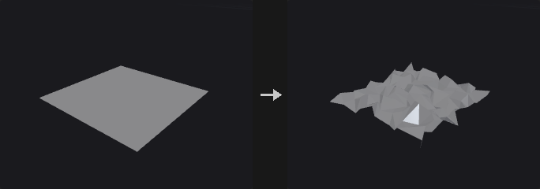
Each point moves in a random direction by at most Scale (further multiplied by the mask, pscale and the per-axis scales).
The random stream is keyed by the ID attribute when one is given, not by point number. If points are deleted upstream, sorted or fused, point numbers shift and a jitter keyed by number would change everywhere.
The displacement is uniform inside a sphere, not inside a cube. Taking three independent values in [-1,1] would make diagonals 1.73 times longer than the axes, a visible directionality on grid-like input. If you want directionality, use Axis Scales.
Inputs
| Input | Type | Description |
|---|---|---|
geo | GEOMETRY | Geometry whose points are jittered. |
Outputs
| Output | Type | Description |
|---|---|---|
geo | GEOMETRY | Geometry with jittered points. |
Parameters
| Parameter | Type | Default | Description |
|---|---|---|---|
Group group | string | (empty) | Point group pattern to jitter. Empty means all points. |
Mask mask | float [0.0..1.0] | 1 | Constant multiplier on the displacement, from 0 to 1. |
Mask Mode mask_mode | menu | No Scaling | Whether the mask is only the constant above, or is also multiplied by a point attribute. Options: No Scaling (no_scaling), Scale by Attribute (scale_by_attribute). |
Mask Attribute mask_attribute | string | (empty) | Point attribute multiplied into the displacement. Required when scaling by attribute. Hidden when mask_mode ≠ scale_by_attribute. |
Id Attribute id_attribute | string | (empty) | Point attribute used as the key of the random stream instead of the point number. Empty uses point numbers. |
Scale scale | float [0.0..] | 1 | Maximum displacement distance. |
Axis Scales axis_scale_x axis_scale_y axis_scale_z | float | 1, 1, 1 | Per-axis multiplier of the displacement, for directional jitter. |
Seed rand_seed | int [0..] | 1 | Seed of the random stream. |
Use Point Scale use_point_scale | toggle | off | Also multiply the displacement by the point attribute pscale if present. |
Update Normals update_normals | toggle | on | Recompute normals after the move if the geometry has them. |
Point Split (PCG)#
PCG_PointSplit · category PCG/modify · Houdini: Point Split (SOP), Split Points (SOP)
Splits points whose vertices carry different values of a vertex attribute into separate points.
When several vertices share one point but disagree on a vertex attribute (a UV seam, a hard edge in N), the point is duplicated so that each distinct value gets its own point. Values are compared with a chained tolerance rather than by bucketing, so values that are within tolerance of each other through a chain of neighbours end up on the same point.
With an empty attribute name every vertex becomes its own point. With Promote on, the vertex attribute is also written as a point attribute of the same name on the new points.
Inputs
| Input | Type | Description |
|---|---|---|
geo | GEOMETRY | Geometry whose points should be split. |
Outputs
| Output | Type | Description |
|---|---|---|
geo | GEOMETRY | Geometry with the split points. |
report | STRING | Text summary of what was split. |
Parameters
| Parameter | Type | Default | Description |
|---|---|---|---|
Group group | string | (empty) | Group pattern limiting which points are split. Empty means all. |
Split by Attribute attribute | string | uv | Vertex attribute that decides the split. Leave empty to split every vertex into an independent point. |
Tolerance tolerance | float [0.0..] | 1e-05 | Two values closer than this are considered equal and stay on the same point. |
Promote to Point Attribute promote | toggle | on | Also write the split vertex attribute as a point attribute of the same name. |
Compared with Houdini
Corresponds to Houdini's Split Points / Point Split behaviour for vertex attributes.
Poly Bridge (PCG)#
PCG_PolyBridge · category PCG/modify · Houdini: Poly Bridge (SOP)
Builds a surface of polygons between two loops of edges, such as a tunnel or handle.
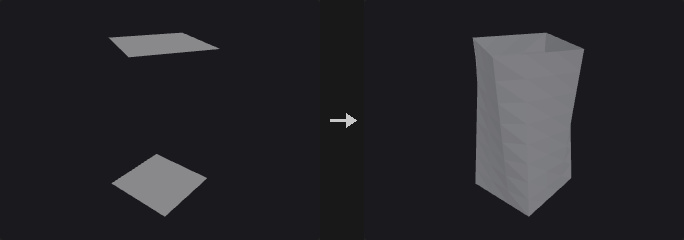
Source and Destination are either primitive groups or point groups. For primitives that are faces, their outer boundary is used (and the faces are deleted if Remove Source and Destination Faces is on); for open curves the curve itself is used. Point groups describe the boundary of a hole.
If both loops have the same number of points the bridge is made of quads; otherwise triangles are zipped by arc length. The start points are aligned automatically and Twist shifts the pairing by a number of points. The bridge has Divisions segments, interpolated linearly or with Hermite curves that leave along the cap normals (handle versus tunnel direction is detected automatically).
Face orientation is made consistent with neighbouring faces, so the result stays watertight after punching a tunnel. New polygons go to the output group.
Inputs
| Input | Type | Description |
|---|---|---|
geo | GEOMETRY | Geometry containing both loops. |
Outputs
| Output | Type | Description |
|---|---|---|
geo | GEOMETRY | Geometry with the bridge added. |
report | STRING | Text summary of the bridge. |
Parameters
| Parameter | Type | Default | Description |
|---|---|---|---|
Source Group source_group | string | (empty) | Group pattern for the source loop (primitives or points). |
Destination Group dest_group | string | (empty) | Group pattern for the destination loop (primitives or points). |
Divisions divisions | int [1..1000] | 1 | Number of segments along the bridge. |
Twist twist | int | 0 | Shifts the start of the pairing by this many points for closed loops. Has no effect on open curves. |
Reverse Destination flip_direction | toggle | off | Reverse the order of the destination loop before pairing. |
Interpolation interpolation | menu | Linear | Linear connects matching points with straight lines. Hermite leaves each loop along its cap normal. Options: Linear (linear), Hermite (hermite). |
Magnitude magnitude | float [-10.0..10.0] | 1 | Strength of the Hermite tangents. Negative values flip them. Hidden when interpolation ≠ hermite. |
Remove Source and Destination Faces remove_caps | toggle | on | Delete the source and destination faces after bridging. |
Reverse Normals reverse_normals | toggle | off | Flip the winding of the generated polygons. |
Bridge Polygons Group output_group | string | bridge | Name of the primitive group holding the new polygons. |
PolyBevel (PCG)#
PCG_PolyBevel · category PCG/modify · Houdini: PolyBevel (SOP)
Bevels edges of polygon geometry with an optional rounded, chamfered, solid or crease profile.
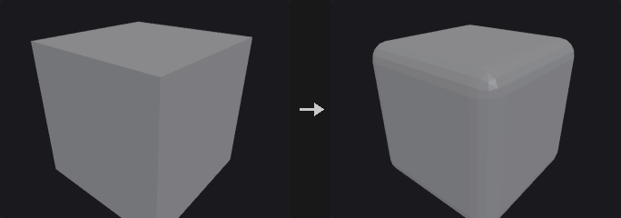
Every polygon adjacent to a beveled edge is shrunk away from that edge, then the gaps are bridged: faces become inset polygons, edges become bridge strips, and points become n-gons around the original point. New points are moved off the original edge into their faces, so the result is a true edge bevel and not a vertex cut.
The selected edges are interior manifold edges whose two sides are both selected. Group Type decides how group is interpreted: an edge group directly, or primitives or points from which the edges are derived. Ignore Flat Edges skips edges whose two faces meet at less than Maximum Normal Angle.
Output groups mark the generated fillet polygons and, optionally, the edges between the bevel faces and the shrunk faces.
Attributes and groups are carried over: new points copy the point attributes and point groups of the original point they come from, every new face takes the primitive attributes and groups of the face it was cut from (fillet strips from one adjacent face, corner patches from one face around the corner), and vertex attributes such as uv are copied from the corner of that face at the same original point. Detail attributes are kept.
Inputs
| Input | Type | Description |
|---|---|---|
geo | GEOMETRY | Polygon geometry to bevel. |
Outputs
| Output | Type | Description |
|---|---|---|
geo | GEOMETRY | Beveled geometry. |
Parameters
| Parameter | Type | Default | Description |
|---|---|---|---|
Group group | string | (empty) | Group pattern selecting what to bevel; its meaning depends on Group Type. Empty means all edges. |
Group Type group_type | menu | Guess from Group | How group is read. Guess from Group infers the class from the group name. Options: Guess from Group (guess), Edges (edges), Primitives (prims), Points (points). |
Ignore Flat Edges ignore_flat | toggle | off | Skip edges whose adjacent faces are nearly coplanar (see Maximum Normal Angle). |
Maximum Normal Angle max_normal_angle | float [0.0..180.0] | 2 | Edges whose two face normals differ by less than this angle (degrees) are not beveled. Disabled when ignore_flat is off. |
Distance distance | float [0.0..] | 0.1 | Bevel width, measured along the faces from the original edge. |
Distance Scaling distance_scaling | menu | No Scaling | No Scaling uses Distance as is. Scale by Attribute multiplies it by a point attribute. Options: No Scaling (none), Scale by Attribute (attribute). |
Point Offset Scale scale_attribute | string | pscale | Point attribute that scales Distance per point. Hidden when distance_scaling ≠ attribute. |
Limit Distance limit_distance | toggle | on | Clamp the distance to half of the shortest neighbouring edge at the ends of the beveled edge, a simplified version of Houdini's Collisions and Limits. |
Fillet
| Parameter | Type | Default | Description |
|---|---|---|---|
Fillet use_fillet | toggle | on | Off produces a single-segment chamfer. |
Shape shape | menu | Round | Round: curved profile. Chamfer: straight cut. Solid: one flat face per edge. Crease: the shape is unchanged and only a protective loop of edges is added on each side of the edge. None: faces are only pulled back, no bevel faces are created. Options: Round (round), Chamfer (chamfer), Solid (solid), Crease (crease), None (none). Disabled when use_fillet is off. |
Convexity convexity | float [-1.0..1.0] | 1 | Bulge of the Round profile: 1 is an outward arc, 0 is flat, -1 is an inward arc. Disabled when use_fillet is off } { shape ≠ round. |
Divisions divisions | int [1..64] | 1 | Number of segments across the bevel. Disabled when use_fillet is off } { shape = solid } { shape = crease } { shape = none. |
Output Groups
| Parameter | Type | Default | Description |
|---|---|---|---|
Output Groups use_out_groups | toggle | on | Write the output groups below. |
Point Fillet Group point_fillet_group | string | pointfilletpolys | Name of the polygon group holding the faces created at beveled points. Disabled when use_out_groups is off. |
Edge Fillet Group edge_fillet_group | string | edgefilletpolys | Name of the polygon group holding the faces created along beveled edges. Disabled when use_out_groups is off. |
Offset Group offset_group | string | (empty) | Name of an edge group holding the edges between the bevel faces and the pulled-back faces. Leave empty to not write it. Disabled when use_out_groups is off. |
Compared with Houdini
Follows Houdini's PolyBevel, including the None shape, Ignore Flat Edges, Scale by Attribute (default pscale), Convexity and Offset Group. Distance limiting is the simplified half-shortest-neighbour-edge rule, not the full Collisions and Limits options.
PolyDoctor (PCG)#
PCG_PolyDoctor · category PCG/modify · Houdini: PolyDoctor (SOP)
Detects and optionally repairs common polygon problems, writing validity flags.
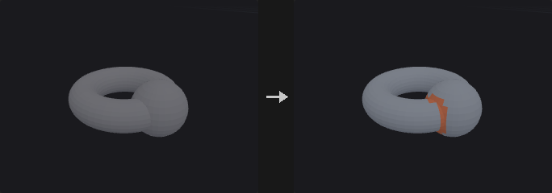
Each check has its own mode. Ignore skips the check, Mark only flags the problem, Repair fixes it and flags what was changed. Checks cover ill-formed polygons, polygons with five or more edges, non-convex polygons, overlapping polygons (optionally in pairs), polygons with locally small areas, non-uniform polygons, globally and locally small edges, disconnected points and non-manifold points.
Polygons that fail a check get valid_poly = 0 and points get valid_pt = 0; polygons or points that were fixed get repaired_poly = 1 or repaired_pt = 1. Attribute names are configurable and a group for each attribute can be created. Repairs run for at most Max Passes rounds.
Self-Intersecting Polygons (mark only) flags polygons that pass through other polygons of the same mesh, found with Intersection Analysis on the repaired result; faces that share a point are not tested against each other.
Inputs
| Input | Type | Description |
|---|---|---|
geo | GEOMETRY | Polygon geometry to inspect. |
Outputs
| Output | Type | Description |
|---|---|---|
geo | GEOMETRY | Geometry with flags, and repairs applied where requested. |
report | STRING | Text report of the problems found and repaired. |
Parameters
| Parameter | Type | Default | Description |
|---|---|---|---|
Max Passes max_passes | int [1..1000] | 10 | Maximum number of repair rounds. |
Primitives
| Parameter | Type | Default | Description |
|---|---|---|---|
Ill-Formed ill_formed | menu | Repair | Polygons that are degenerate or invalid. Options: Ignore (ignore), Mark (mark), Repair (repair). |
5+ Edges five_plus | menu | Ignore | Polygons with five or more edges. Options: Ignore (ignore), Mark (mark), Repair (repair). |
Non-Convex non_convex | menu | Ignore | Non-convex polygons. Options: Ignore (ignore), Mark (mark), Repair (repair). |
Overlapping overlapping | menu | Repair | Polygons that overlap other polygons. Options: Ignore (ignore), Mark (mark), Repair (repair). |
Pair Overlaps pair_overlaps | toggle | off | Also detect pairs of overlapping polygons. Disabled when overlapping = ignore. |
Locally Small Areas local_area | menu | Ignore | Polygons whose area is small compared to the largest edge-sharing neighbour. Options: Ignore (ignore), Mark (mark), Repair (repair). |
Local Area Threshold local_area_threshold | float [0.0..1.0] | 0.1 | A polygon is flagged when its area is below this fraction of its largest neighbour's area (0.1 = one tenth). Disabled when local_area = ignore. |
Non-Uniform Polygons non_uniform | menu | Ignore | Polygons with an uneven shape. This check can only mark. Options: Ignore (ignore), Mark (mark). |
Uniformity Threshold uniformity_threshold | float [0.0..1.0] | 0.1 | Isoperimetric quotient 4*pi*A / perimeter^2 (a circle is 1); polygons below this are non-uniform. Disabled when non_uniform = ignore. |
Edges & Points
| Parameter | Type | Default | Description |
|---|---|---|---|
Globally Small Edges global_edges | menu | Ignore | Edges that are short relative to the whole geometry. Options: Ignore (ignore), Mark (mark), Repair (repair). |
Global Edge Threshold global_edge_threshold | float [0.0..1.0] | 0.001 | Edges shorter than this fraction of the bounding box diagonal are flagged. Disabled when global_edges = ignore. |
Locally Small Edges local_edges | menu | Ignore | Edges that are short relative to the longest edge of a polygon containing them. Options: Ignore (ignore), Mark (mark), Repair (repair). |
Local Edge Threshold local_edge_threshold | float [0.0..1.0] | 0.1 | An edge is flagged when it is shorter than this fraction of the longest edge in a polygon that contains it. Disabled when local_edges = ignore. |
Disconnected Points disconnected | menu | Repair | Points not used by any primitive. Options: Ignore (ignore), Mark (mark), Repair (repair). |
Topology
| Parameter | Type | Default | Description |
|---|---|---|---|
Non-Manifold Points nonmanifold | menu | Ignore | Points where the surface is non-manifold. Options: Ignore (ignore), Mark (mark), Repair (repair). |
Self-Intersecting Polygons self_intersecting | menu | Ignore | Mark polygons that pass through other polygons of the mesh (Ignore / Mark). Options: Ignore (ignore), Mark (mark). |
Attributes
| Parameter | Type | Default | Description |
|---|---|---|---|
Valid Polygons valid_poly | string | valid_poly | Name of the primitive attribute set to 0 on invalid polygons. |
Repaired Polygons repaired_poly | string | repaired_poly | Name of the primitive attribute set to 1 on repaired polygons. |
Valid Points valid_pt | string | valid_pt | Name of the point attribute set to 0 on invalid points. |
Modified Points repaired_pt | string | repaired_pt | Name of the point attribute set to 1 on modified points. |
Create a group for each attribute create_groups | toggle | off | Also create a group for each attribute, named with a _grp suffix. |
Compared with Houdini
Partial implementation of PolyDoctor. Non-Uniform Polygons can only be marked. For general cleanup, PCG_Clean remains available.
PolyExpand2D (PCG)#
PCG_PolyExpand2D · category PCG/modify · Houdini: PolyExpand2D (SOP)
Offsets a planar curve network inward and outward by a constant distance.
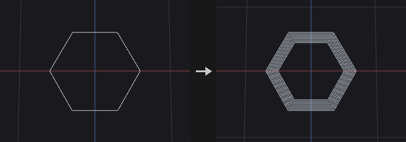
Produces offset curves (or the surface between input and offset) for a planar network of curves. Rather than just pushing each edge, the node builds mitered offsets that may self-intersect and then cuts away every part whose midpoint is closer than Offset to the input. What remains matches a straight-skeleton offset, with no event queue and therefore no degenerate-event ordering problems.
Inside and outside come from the faces of the input itself: the input is treated as a planar graph (welded, split at intersections, traversed by angle). Bounded faces offset inward give inside; the unbounded face offset inward expands outward and gives outside. A tree-shaped network has no bounded face, so it only has an outside loop around the whole network.
Open curve ends get a square cap extended by Offset along the tangent. A flat cap would lie at distance 0 and be trimmed away, breaking the loop. With Split Offset Curves to Omit End Caps the three cap segments are removed and two lines along the sides remain.
Inputs
| Input | Type | Description |
|---|---|---|
geo | GEOMETRY | Planar curve network. |
Outputs
| Output | Type | Description |
|---|---|---|
geo | GEOMETRY | Offset curves or surfaces. |
Parameters
| Parameter | Type | Default | Description |
|---|---|---|---|
Group group | string | (empty) | Group pattern limiting which primitives are offset. Empty means all. |
2D Positions positions_2d | menu | Fit Plane | How the 2D plane is chosen. Fit Plane fits a plane to the points; Select Projection Plane uses the origin and normal below. Options: Fit Plane (fit_plane), Select Projection Plane (specify_plane). |
Plane Origin plane_origin_x plane_origin_y plane_origin_z | float | 0, 0, 0 | Point on the projection plane (used with Select Projection Plane). Hidden when positions_2d ≠ specify_plane. |
Plane Distance plane_distance | float | 0 | Moves the plane along its normal. It is also read in Fit Plane mode. |
Plane Normal plane_normal_x plane_normal_y plane_normal_z | float | 0, 1, 0 | Normal of the projection plane (used with Select Projection Plane). Hidden when positions_2d ≠ specify_plane. |
Output output | menu | Offset Curves | Offset Curves outputs only the offset lines. Offset Surfaces also fills the band between input and offset lines with triangles (road network to road surface). Options: Offset Curves (offset_curves), Offset Surfaces (offset_surfaces). |
Offset offset | float | 0.1 | Offset distance. |
Divisions divisions | int [1..256] | 1 | When greater than 1, outputs rings at evenly spaced distances up to Offset. |
Side Determination side_determination | menu | Simple Reachability | How results are classified as inside or outside. Simple Reachability uses the face group the offset belongs to; Winding Number tests against the winding number of the input. Options: Simple Reachability (simple_reachability), Winding Number (winding_number). |
Output Inside output_inside | toggle | on | Keep results that lie inside bounded faces of the input. |
Output Outside output_outside | toggle | on | Keep results that lie outside, around the unbounded face. |
Keep Input Geometry keep_input_geometry | toggle | off | Merge the input back into the output. |
Split Offset Curves to Omit End Caps split_offset_curves_to_omit_end_caps | toggle | off | Remove the cap segments at open curve ends, leaving two side lines. Hidden when output ≠ offset_curves. |
Local Attributes
| Parameter | Type | Default | Description |
|---|---|---|---|
Create Output Groups create_output_groups | toggle | off | Write the inside and outside groups. |
Inside Group inside_group | string | inside | Name of the group for inside results. Disabled when create_output_groups is off. |
Outside Group outside_group | string | outside | Name of the group for outside results. Disabled when create_output_groups is off. |
Edge Distance Attribute edge_distance_attribute | string | (empty) | If set, writes the offset distance of each result curve or triangle to a point attribute of this name. Leave empty to not write it. |
Edge Speed Attribute edge_speed_attribute | string | (empty) | Name of a primitive or point attribute that scales the offset speed of each input edge (point attributes are averaged over the edge ends). Leave empty for uniform speed. |
Advanced
| Parameter | Type | Default | Description |
|---|---|---|---|
Coincidence Tolerance coincidence_tolerance | float [0.0..1000.0] | 0.003 | Points closer than this are welded when the input is turned into a planar graph. |
Parallelism Tolerance parallelism_tolerance | float [0.0..1.0] | 0.01 | Tolerance used when intersecting edges and treating adjacent edges as parallel. |
Skeleton Failure on_failure | menu | Fail with Error | What to do if the skeleton construction fails: raise an error, keep the input with a warning, or output nothing. Options: Fail with Error (fail_with_error), Warn and Keep Input (warn_and_keep_input), Output Empty Geometry (output_nothing). |
Recompute Point Normals recompute_point_normals | toggle | on | Recompute N on the result. Only relevant when Keep Input Geometry merges input with faces back in. |
Compared with Houdini
Does not implement a straight skeleton with an event queue. It trims a self-intersecting mitered offset by distance to the input, which gives the straight-skeleton offset without degenerate-event ordering problems.
PolyExtrude (PCG)#
PCG_PolyExtrude · category PCG/modify · Houdini: PolyExtrude (SOP)
Extrudes polygons along their normals, a fixed direction or a spine curve, with inset, twist and divisions.
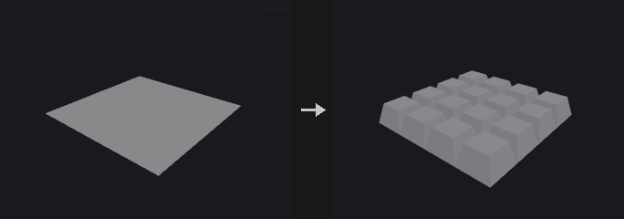
Extrudes the selected primitives and creates front, back and side polygons. Divide Into decides what counts as one region: Connected Components extrudes touching selected faces together, so side walls appear only where the two sides of an edge belong to different regions; Individual Elements extrudes every face on its own.
Inset uses angle-bisector miters scaled by 1/sin(half angle), so every edge moves in by the same perpendicular distance. Limit Insetting clamps the inset before edges flip.
If the spine input is connected and External Spine is on, the faces are swept along the spine curve using a rotation-minimising frame, initialised per region from the face's own axis, so there is no spurious twist between face orientation and the spine's normal plane. Distance and Twist are then ignored; the spine decides the length.
Groups: front, back and side polygons can be written to groups. Upstream groups are inherited by the front and back faces only, not by the side walls, which are new geometry.
Inputs
| Input | Type | Description |
|---|---|---|
geo | GEOMETRY | Geometry with the polygons to extrude. |
spine (optional) | GEOMETRY | Optional curve to sweep along. Used only when External Spine is on; otherwise the extrusion is straight. |
Outputs
| Output | Type | Description |
|---|---|---|
geo | GEOMETRY | Extruded geometry. |
Parameters
Extrusion
| Parameter | Type | Default | Description |
|---|---|---|---|
Group group | string | (empty) | Group pattern selecting the primitives to extrude. Empty means all. |
Divide Into divide_into | menu | Connected Components | Connected Components treats touching selected faces as one region; Individual Elements extrudes each face separately. Options: Connected Components (connected), Individual Elements (individual). |
Extrusion Mode extrusion_mode | menu | Primitive/Edge Normal | Primitive/Edge Normal moves along face normals. Point Normal moves each point along its own point normal (N, computed if missing). Has no effect when Specified Direction is on or a spine is used. Options: Primitive/Edge Normal (prim_edge_normal), Point Normal (point_normal). |
Extrusion › Direction
| Parameter | Type | Default | Description |
|---|---|---|---|
Specified Direction use_direction | toggle | off | Off extrudes along the face normal (Houdini's Primitive Normal). On moves all points along the same direction. |
Direction dir_x dir_y dir_z | float | 0, 1, 0 | Extrusion direction used when Specified Direction is on. Disabled when use_direction is off. |
Extrusion
| Parameter | Type | Default | Description |
|---|---|---|---|
Distance distance | float | 1 | Extrusion length. Not used when a spine is applied. |
Inset inset | float | 0 | Moves the extruded front inward (negative values outward) by this perpendicular distance. |
Twist twist | float [-3600..3600] | 0 | Rotates the front around the extrusion direction, in degrees, progressively over the divisions. Not used when a spine is applied. |
Divisions divisions | int [1..512] | 1 | Number of segments along the extrusion; each gives a ring of side polygons. |
Extrusion › Spine
| Parameter | Type | Default | Description |
|---|---|---|---|
External Spine use_spine | toggle | off | Sweep along the connected spine curve. Without a connected curve the extrusion stays straight. |
Up Vector up_x up_y up_z | float | 0, 1, 0 | Up vector used to orient the frame along the spine. Disabled when use_spine is off. |
Extrusion › Front Transform
| Parameter | Type | Default | Description |
|---|---|---|---|
Transform Extruded Front transform_front | toggle | off | Apply an extra transform to the extruded front. |
Translate front_tx front_ty front_tz | float | 0, 0, 0 | Translation of the front. Disabled when transform_front is off. |
Rotate front_rotate | float [-3600..3600] | 0 | Rotation of the front around the extrusion direction, in degrees. Disabled when transform_front is off. |
Scale front_scale | float [0.0..] | 1 | Uniform scale of the front, around its centroid. Disabled when transform_front is off. |
Output Geometry and Groups › Output
| Parameter | Type | Default | Description |
|---|---|---|---|
Output Geometry and Groups use_output | toggle | on | Off uses the defaults of this section: output front and sides, with group names extrudeFront and extrudeSide. |
Output Front output_front | toggle | on | Keep the front polygons. |
Front Group front_group | string | extrudeFront | Group name for the front polygons. Disabled when output_front is off. |
Output Back output_back | toggle | off | Keep the original (back) polygons. |
Back Group back_group | string | extrudeBack | Group name for the back polygons. Disabled when output_back is off. |
Output Side output_side | toggle | on | Create side wall polygons. |
Side Group side_group | string | extrudeSide | Group name for the side polygons. Disabled when output_side is off. |
Front Seam Group front_seam_group | string | (empty) | Point group of the loop where the side walls meet the front. Leave empty to not write it. |
Back Seam Group back_seam_group | string | (empty) | Point group of the loop where the side walls meet the back. Leave empty to not write it. |
Preserve Groups preserve_groups | toggle | on | Front and back faces inherit the upstream groups. Side walls do not. |
Output Geometry and Groups › Insetting
| Parameter | Type | Default | Description |
|---|---|---|---|
Limit Insetting limit_insetting | toggle | off | Clamp the inset so edges cannot flip. |
Common Limit use_common_limit | toggle | on | Use one limit (the smallest over all regions) for everything. Off limits each region separately. Disabled when limit_insetting is off. |
Output Geometry and Groups › Normals
| Parameter | Type | Default | Description |
|---|---|---|---|
Add Vertex Normals add_vertex_normals | toggle | off | Compute vertex normals on the result, split at the Cusp Angle. |
Cusp Angle cusp_angle | float [0.0..180.0] | 60 | Angle in degrees above which vertex normals are split. Disabled when add_vertex_normals is off. |
Local Control › Local Control
| Parameter | Type | Default | Description |
|---|---|---|---|
Local Attributes use_local | toggle | off | Scale distance and inset per point or primitive with attributes. |
Distance Scale distance_attrib | string | (empty) | Point or primitive attribute that multiplies Distance per element. Not used in external spine mode. Disabled when use_local is off. |
Inset Scale inset_attrib | string | (empty) | Attribute that multiplies Inset per element. Disabled when use_local is off. |
UVs › Texture
| Parameter | Type | Default | Description |
|---|---|---|---|
Generate Unwrapped Texture Coordinates for Sides side_uv | toggle | off | Generate unwrapped UV coordinates on the side walls: u along the accumulated boundary length, v along the extrusion. |
Style uv_style | menu | Proportional | Proportional uses real edge lengths for u. Uniform gives each wall segment a unit-length span. Options: Proportional (proportional), Uniform (uniform). Disabled when side_uv is off. |
PolyFill (PCG)#
PCG_PolyFill · category PCG/modify · Houdini: PolyFill (SOP)
Closes open boundary loops with new polygons.
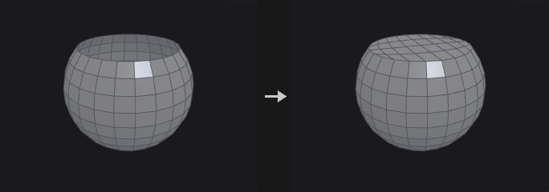
Clip, Blast and Delete leave openings, while volume computation, booleans and Voronoi fracture all want closed geometry. PolyFill finds the boundary loops of the input and caps each one.
The winding of the new face is the reverse of the boundary half-edges, so the cap normal agrees with the neighbouring faces. Fill modes: Single Polygon covers the hole with one n-gon (no points added; best for planar holes), Triangle Fan adds a point at the hole centre and fans triangles (use it for non-planar holes, where an n-gon would twist), Triangles ear-clips without adding points and handles concave holes, Quadrilateral Fan adds a centre point and makes one quad per two boundary edges (an odd count leaves one triangle), Quadrilaterals folds the loop into two chains and joins them quad by quad without new points (like a single polygon it suits convex, roughly flat holes), and Quadrilateral Grid treats the loop as the four sides of a patch and fills it with a Coons-interpolated quad grid. If the edge count is odd, the grid mode falls back to Quadrilaterals.
Inputs
| Input | Type | Description |
|---|---|---|
geo | GEOMETRY | Geometry with open boundaries. |
Outputs
| Output | Type | Description |
|---|---|---|
geo | GEOMETRY | Geometry with the holes filled. |
Parameters
| Parameter | Type | Default | Description |
|---|---|---|---|
Fill Mode mode | menu | Single Polygon | How each hole is filled; see the description for the six modes. Options: Single Polygon (ngon), Triangle Fan (fan), Triangles (triangles), Quadrilateral Fan (quad_fan), Quadrilaterals (quads), Quadrilateral Grid (quad_grid). |
Max Hole Sides max_sides | int [0..65536] | 0 | 0 fills every hole. A positive value fills only holes with at most that many boundary edges, which closes small holes without sealing a deliberately open model. |
Planar Tolerance planar_tolerance | float [-1.0..] | -1 | -1 ignores planarity. A value of 0 or more fills only holes that are flat to within that tolerance. |
Fill Polygons Group output_group | string | (empty) | Name of a primitive group that receives the new polygons. Leave empty to not write one. |
PolyPath (PCG)#
PCG_PolyPath · category PCG/modify · Houdini: PolyPath (SOP)
Joins polylines whose end points touch into the longest possible curves, without creating any edges.
Resample, Carve, Sweep and PolyExpand2D all work per primitive, so a curve has to be one primitive for them to know what "along the curve" means. Upstream nodes often deliver many fragments (a Clip, or Convert Line output, or several merged lines whose ends coincide but are different points). PolyPath chains them into longer primitives.
It never creates an edge: only end points that already coincide are connected, the shape is unchanged, and only the assignment of points to primitives changes. (Join, in contrast, forces connections and adds straight segments where ends do not meet.)
Each input polyline is an atomic unit and only its two end points take part in connections. A long polyline that another line happens to cross in the middle is therefore kept whole, which differs from Houdini's PolyPath. Polylines that are already broken have to be split with Dissolve or Blast first.
Faces and closed primitives are not touched; they pass through unchanged. When two end points are within Point Tolerance but not the same point, the one that comes first is kept and positions are not averaged, so the geometry does not move. Use Fuse first if you want both to move.
Inputs
| Input | Type | Description |
|---|---|---|
geo | GEOMETRY | Geometry containing the polylines to join. |
Outputs
| Output | Type | Description |
|---|---|---|
geo | GEOMETRY | Geometry with chained polylines. |
Parameters
| Parameter | Type | Default | Description |
|---|---|---|---|
Group group | string | (empty) | Group pattern selecting which primitives take part. Empty means all. |
Point Tolerance tolerance | float [0.0..] | 0 | 0 only joins ends that are the same point. A positive value also joins ends within this distance, keeping the first point encountered. |
Junctions junction | menu | Split at Junctions | What to do where three or more lines meet at one end point. Split at Junctions stops there (Houdini's behaviour, most conservative). Continue Straightest continues along the line that turns least, limited by Max Turn Angle (the choice for road networks). Continue Any joins in an arbitrary order. Options: Split at Junctions (split), Continue Straightest (straightest), Continue Any (any). |
Max Turn Angle max_angle | float [0.0..180.0] | 60 | Largest turn, in degrees, that Continue Straightest accepts at a junction. It only applies at junctions: where just two lines meet they are always joined. Hidden when junction ≠ straightest. |
Match Attribute match_attribute | string | (empty) | Primitive attribute that must be equal on two lines for them to be joined (for example road class). Leave empty for no restriction. |
Close Loops close_loops | toggle | on | When a chain returns to its start, close it into a closed curve. |
Primitive Attributes prim_attribs | menu | Keep First | Keep First gives the joined primitive the attributes of the first piece. Drop removes primitive attributes. Options: Keep First (first), Drop (drop). |
Remove Unused Points remove_unused_points | toggle | off | Delete points no longer referenced by any primitive. |
Compared with Houdini
Houdini's PolyPath breaks inputs into edges and re-chains them, which splits a long polyline where another line happens to cross it. This node treats each polyline as a unit and only connects end points.
PolyReduce (PCG)#
PCG_PolyReduce · category PCG/modify · Houdini: PolyReduce (SOP)
Reduces triangle or point count with quadric error edge collapse.
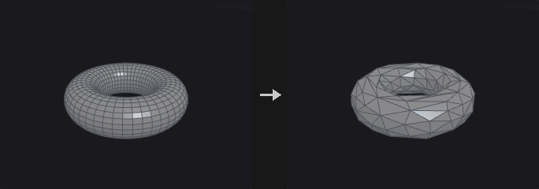
Implements Garland-Heckbert quadric error metric (QEM) edge collapse. Each point carries a 4x4 quadric (the area-weighted sum of squared distances to its planes); collapsing an edge adds the two quadrics, so error accumulates over successive collapses and the node does not keep eating the same spot.
The input is triangulated first and the output is always triangles (there is no Preserve Quads). Boundaries is usually the most important value: without it QEM happily eats away the border of flat meshes. Crease edges work through the same mechanism with their own weight. Soft Points add a cost for moving away from the original position, and Hard Edges lock both of their end points.
With Preserve UVs only half-edge collapses are performed, points on UV seams and hard edges are locked, and vertex attributes are rewritten along the way, so an LOD shares the textures of the original. This node is the only greedy serial algorithm in the plugin; reduction cannot be computed as one batch.
Inputs
| Input | Type | Description |
|---|---|---|
geo | GEOMETRY | Mesh to reduce. |
Outputs
| Output | Type | Description |
|---|---|---|
geo | GEOMETRY | Reduced triangle mesh. |
Parameters
| Parameter | Type | Default | Description |
|---|---|---|---|
Group group | string | (empty) | Group pattern limiting the reduction to part of the mesh. Empty means all. |
Target target | menu | Percentage of Triangle Count | The input is triangulated first. The two triangle options count triangles; the two point options count points. Percentage options use Percent to Keep, count options use Number to Keep. Options: Percentage of Triangle Count (percentage), Output Triangle Count (triangle_count), Percentage of Point Count (point_percentage), Output Point Count (point_count). |
Percent to Keep keep_percent | float [0.01..100.0] | 50 | Percentage of triangles or points to keep. Hidden when target ≠ percentage target ≠ point_percentage. |
Number to Keep target_count | int [1..] | 1000 | Number of triangles or points to keep. Hidden when target ≠ triangle_count target ≠ point_count. |
Limit Using Normal Deviation
| Parameter | Type | Default | Description |
|---|---|---|---|
Threshold Angle max_normal_flip | float [0.0..180.0] | 90 | A collapse is rejected if it would rotate a face normal by more than this angle (degrees). |
Output Geometry
| Parameter | Type | Default | Description |
|---|---|---|---|
Point Position position | menu | Optimal | Where the merged point is placed. Optimal minimises the quadric error, Midpoint uses the middle of the edge, Original Points keeps one of the end points. Forced to Original Points when Preserve UVs is on. Options: Optimal (optimal), Midpoint (midpoint), Original Points (Endpoint) (endpoint). Disabled when preserve_uvs is on. |
Preserve UVs preserve_uvs | toggle | off | Half-edge collapses only; locks points on UV seams and hard edges and rewrites vertex attributes, so LODs share the original textures. |
Stiffen
| Parameter | Type | Default | Description |
|---|---|---|---|
Boundaries boundary_weight | float [0.0..] | 4 | How strongly open boundaries resist collapse. 0 lets the border erode, and a flat grid reduced hard collapses to a thin strip; around 4 keeps the area intact. |
Preserve Features
| Parameter | Type | Default | Description |
|---|---|---|---|
Hard Boundary Points lock_boundary | toggle | off | Never move or remove points on open boundaries. |
Hard Points lock_group | string | (empty) | Group pattern of points that are never changed. |
Hard Edges hard_edges | string | (empty) | Edge group whose end points are all locked. |
Soft Points soft_points | string | (empty) | Group pattern of points that get an extra cost for moving from their original position. |
Weight soft_weight | float [0.0..] | 1 | Strength of the cost applied to Soft Points. Disabled when soft_points = "". |
Soft Edges crease_group | string | (empty) | Edge group of soft crease edges that are protected by extra constraint planes. |
Weight crease_weight | float [0.0..] | 4 | Strength of the protection on Soft Edges. High values make crease edges very expensive to collapse. Disabled when crease_group = "". |
Compared with Houdini
The output is always triangles; Houdini's Preserve Quads is not implemented.
PolySpline (PCG)#
PCG_PolySpline · category PCG/modify · Houdini: PolySpline (SOP)
Converts polylines into smooth spline curves sampled as polylines.
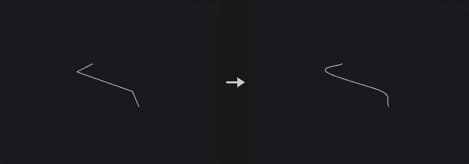
Each selected curve is interpreted as control points of the chosen Spline Type and sampled with Sample Divisions samples per span. Catmull-Rom passes through the points, with an Alpha that selects uniform, centripetal or chordal parametrisation; BSpline approximates (C2, does not pass through interior points); Interpolating (C2) passes through the points and is C2, solving a tridiagonal system for the control points; Bezier and Degree 2 Bezier take the points as control points, three (or two) per segment with shared end points; Cardinal passes through the points with tangents scaled by CV Tension; Linear gives straight segments.
Open curves pass through both end points. Numeric point attributes are interpolated with the same weights as P.
A Division Method other than Standard resamples the result afterwards with equal arc length or equal distance along one axis.
Inputs
| Input | Type | Description |
|---|---|---|
geo | GEOMETRY | Geometry with the polylines to smooth. |
Outputs
| Output | Type | Description |
|---|---|---|
geo | GEOMETRY | Smoothed curves. |
report | STRING | Text summary of how many curves were processed. |
Parameters
| Parameter | Type | Default | Description |
|---|---|---|---|
Group group | string | (empty) | Group pattern selecting the curves. Empty means all. |
Spline Type basis | menu | Catmull-Rom | Spline type; see the description. Options: Catmull-Rom (catmull_rom), BSpline (bspline), Interpolating (C2) (interpolate), Bezier (bezier), Degree 2 Bezier (degree2_bezier), Cardinal (cardinal), Linear (linear). |
Close close | menu | If polygon does | Off and On force open or closed (closing needs at least three points). If polygon does follows each primitive's own closed flag. Options: Off (off), On (on), If polygon does (if_polygon_does). |
Division Method division_method | menu | Standard | Standard keeps the sample divisions as they are. The other methods resample the spline: Even Length uses equal chord lengths between neighbouring points, Even X/Y/Z uses equal distance along that axis. Options: Standard (standard), Even Length Segments (even_length), Even X Segments (even_x), Even Y Segments (even_y), Even Z Segments (even_z). |
Segment Length segment_length | float [0.0..] | 0 | Target length for the resampling. 0 means use Output Divisions instead. Disabled when division_method = standard. |
Output Divisions output_divisions | int [0..] | 0 | Number of output segments for the resampling when Segment Length is 0. If both are 0 no resampling happens. Disabled when division_method = standard } { segment_length > 0. |
Sample Divisions divisions | int [1..1024] | 8 | Number of samples evaluated per span of the spline. |
First CV Count first_cv_count | int [1..64] | 1 | How many times the first control point is repeated before the spline is evaluated. |
Last CV Count last_cv_count | int [1..64] | 1 | How many times the last control point is repeated before the spline is evaluated. |
CV Tension tension | float [-10.0..10.0] | 0.5 | Cardinal tension: 0 is a uniform Catmull-Rom, 1 gives zero tangents. Hidden when basis ≠ cardinal. |
Alpha alpha | float [0.0..1.0] | 0.5 | Catmull-Rom parametrisation: 0 uniform, 0.5 centripetal, 1 chordal. Hidden when basis ≠ catmull_rom. |
Compared with Houdini
Alpha is an addition to Houdini. Houdini's Special Bezier and Special Smooth Bezier types are not implemented.
Primitive (PCG)#
PCG_Primitive · category PCG/modify · Houdini: Primitive (SOP)
Transforms each selected primitive around its own center and offsets it along its normal.
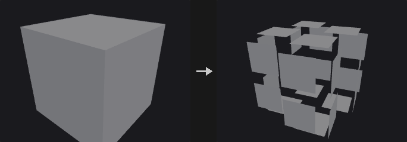
Every selected primitive is translated, rotated and scaled around its own center (shifted by Pivot), then moved along its own normal by Normal Offset. If Scale Attribute names a primitive attribute, the scale is multiplied by it. Unshare Points first separates the points of the selected primitives; without that, a shared point would be pulled by whichever primitive is processed last.
The Attributes section can add or remove Cd and Alpha on the selected primitives. The curve and surface section closes or opens polygons and polylines, and applies the same vertex operations as the Reverse node (reverse, swap UV, shift).
Inputs
| Input | Type | Description |
|---|---|---|
geo | GEOMETRY | Geometry whose primitives should be transformed. |
Outputs
| Output | Type | Description |
|---|---|---|
geo | GEOMETRY | Geometry with transformed primitives. |
Parameters
| Parameter | Type | Default | Description |
|---|---|---|---|
Group group | string | (empty) | Group pattern selecting the primitives. Empty means all. |
Transform Order xform_order | menu | Scale Rot Trans | Order in which scale, rotate and translate are applied, read left to right. Options: Scale Rot Trans (srt), Scale Trans Rot (str), Rot Scale Trans (rst), Rot Trans Scale (rts), Trans Scale Rot (tsr), Trans Rot Scale (trs). |
Rotate Order rotate_order | menu | Rx Ry Rz | Order of the three axis rotations. Options: Rx Ry Rz (xyz), Rx Rz Ry (xzy), Ry Rx Rz (yxz), Ry Rz Rx (yzx), Rz Rx Ry (zxy), Rz Ry Rx (zyx). |
Translate translate_x translate_y translate_z | float | 0, 0, 0 | Translation of each primitive. |
Rotate rotate_x rotate_y rotate_z | float | 0, 0, 0 | Rotation in degrees. |
Scale scale_x scale_y scale_z | float | 1, 1, 1 | Non-uniform scale around the primitive center. |
Shear shear_xy shear_xz shear_yz | float | 0, 0, 0 | Shear values XY, XZ and YZ: x += xy*y + xz*z, y += yz*z. Applied immediately after scaling. |
Pivot pivot_x pivot_y pivot_z | float | 0, 0, 0 | Pivot of the rotation and scale, relative to each primitive's own center. 0 is the center. |
Uniform Scale uniform_scale | float | 1 | Extra scale factor applied to all axes. |
Scale Attribute scale_attribute | string | (empty) | Primitive attribute that multiplies the scale. Leave empty to not use one. |
Normal Offset normal_offset | float | 0 | Distance to move each primitive along its own normal. |
Unshare Points unshare_points | toggle | on | Split the selected primitives' points from their neighbours before transforming. |
Attributes
| Parameter | Type | Default | Description |
|---|---|---|---|
Color color_mode | menu | Keep Color | Add writes the primitive attribute Cd on the selected primitives; Remove deletes it. Options: Keep Color (keep), Add Color (add), Remove Color (remove). |
| Parameter | Type | Default | Description |
|---|---|---|---|
Color color_r color_g color_b | float [0.0..] | 1, 1, 1 | Color written when Color is Add. Hidden when color_mode ≠ add. |
Alpha alpha_mode | menu | Keep Alpha | Add writes the primitive attribute Alpha on the selected primitives; Remove deletes it. Options: Keep Alpha (keep), Add Alpha (add), Remove Alpha (remove). |
Alpha alpha | float [0.0..1.0] | 1 | Alpha value written when Alpha is Add. Hidden when alpha_mode ≠ add. |
Face/Hull
| Parameter | Type | Default | Description |
|---|---|---|---|
Close U close_u | menu | No Change | Open or close polygons and polylines. Houdini's two Unroll options are not implemented. Options: No Change (no_change), Open (open), Close (close). |
| Parameter | Type | Default | Description |
|---|---|---|---|
Vertex vertex_op | menu | No Change | Vertex order operation, same implementation as the Reverse node. Options: No Change (none), Reverse (reverse), Reverse U (reverse_u), Reverse V (reverse_v), Swap UV (swap_uv), Shift (shift). |
U Offset u_offset | int | 0 | Shift amount in U. Only meaningful for NURBS or Bezier surfaces (grids). Hidden when vertex_op ≠ shift. |
V Offset v_offset | int | 0 | Shift amount in V. Only meaningful for NURBS or Bezier surfaces (grids). Hidden when vertex_op ≠ shift. |
Compared with Houdini
Transform Order, Rotate Order, Shear and Pivot are provided as in Houdini's Primitive SOP; the Unroll options of Close U are not implemented.
Primitive Split (PCG)#
PCG_PrimitiveSplit · category PCG/modify · Houdini: Primitive Split (SOP)
Splits shared points so that primitives with different attribute values no longer share them.
Primitives whose primitive attribute values differ by more than Tolerance (strings are compared for equality) stop sharing points: a point shared by several kinds of primitives is duplicated, one copy per kind. Primitives outside group form one class of their own and keep sharing points among themselves.
Inputs
| Input | Type | Description |
|---|---|---|
geo | GEOMETRY | Geometry with shared points. |
Outputs
| Output | Type | Description |
|---|---|---|
geo | GEOMETRY | Geometry with points split per attribute class. |
report | STRING | Text summary of the split. |
Parameters
| Parameter | Type | Default | Description |
|---|---|---|---|
Group group | string | (empty) | Group pattern limiting which primitives are split by attribute. Empty means all. |
Split by Attribute attribute | string | name | Primitive attribute that decides the classes. |
Tolerance tolerance | float [0.0..] | 0 | Numeric differences larger than this separate primitives. Strings are compared for equality. |
Ray (PCG)#
PCG_Ray · category PCG/modify · Houdini: Ray (SOP)
Projects points onto collision geometry by ray casting or by nearest surface point.
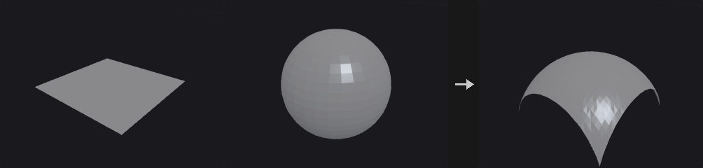
Typically used to drop scattered points onto terrain, or to shrink a shell onto a model. Project Rays casts each point along a direction (or its normal) and finds the intersection; Minimum Distance finds the closest surface point.
Points that miss are left where they are. Use Hit Group to let downstream nodes decide whether to delete or keep them. Hit information can be written to point attributes (distance, primitive number, UV, position, normal), and point attributes of the collision geometry can be transferred by nearest-vertex lookup. If the collision geometry has its own N, the hit normal is interpolated from it; otherwise the face normal is used.
Inputs
| Input | Type | Description |
|---|---|---|
geo | GEOMETRY | Geometry whose points are projected. |
collision | GEOMETRY | Geometry to project onto. |
Outputs
| Output | Type | Description |
|---|---|---|
geo | GEOMETRY | Geometry with moved points and optional hit attributes. |
Parameters
| Parameter | Type | Default | Description |
|---|---|---|---|
Group group | string | (empty) | Group pattern of points that take part. Empty means all. |
Method method | menu | Minimum Distance | Minimum Distance snaps to the closest point on the surface. Project Rays casts rays along a direction. Options: Minimum Distance (minimum_distance), Project Rays (project_rays). |
Use Point Normals as Direction use_point_normals | toggle | off | Use each point's N attribute as the ray direction. Errors if N is missing. Hidden when method = minimum_distance. |
Direction direction_x direction_y direction_z | float | 0, -1, 0 | Ray direction when point normals are not used. Hidden when method = minimum_distance. Disabled when use_point_normals is on. |
Reverse Rays reverse | toggle | off | Flip the ray direction. Hidden when method = minimum_distance. |
Both Directions both_directions | toggle | off | Also accept hits behind the point. The closer of the front and back hits wins (the farther one with Intersect Farthest Surface); the stored distance is negative for a hit behind the point. Hidden when method = minimum_distance. |
Intersect Farthest Surface intersect_farthest | toggle | off | Use the farthest hit along the ray instead of the nearest. Hidden when method = minimum_distance. |
Max Distance max_distance | float [0.0..] | 0 | 0 means unlimited. Otherwise it limits the search distance, which also speeds up nearest point queries considerably. |
Transform
| Parameter | Type | Default | Description |
|---|---|---|---|
Transform Points transform_points | toggle | on | Move hit points to the hit position. Off leaves positions and only writes attributes and the group. |
Scale scale | float | 1 | Fraction of the way to the hit position: 1 moves all the way, 0.5 halfway. |
Lift lift | float | 0 | Extra offset along the hit normal after moving. |
Output
| Parameter | Type | Default | Description |
|---|---|---|---|
Hit Group hit_group | string | (empty) | Name of a point group to which points that hit are added. Leave empty to not write it. |
Distance Attribute distance_attribute | string | (empty) | Point attribute for the hit distance. In Project Rays it is signed: hits behind the point are negative. |
Hit Primitive Attribute hitprim_attribute | string | (empty) | Point attribute for the number of the hit primitive (-1 on miss). |
Hit UV Attribute hituv_attribute | string | (empty) | Point attribute for the hit's barycentric coordinates. |
Hit Position Attribute hitpos_attribute | string | (empty) | Point attribute for the hit position (the original position on a miss). |
Hit Normal Attribute normal_attribute | string | (empty) | Point attribute for the hit normal. |
Transfer Attributes transfer_attributes | string | (empty) | Pattern of collision point attributes to copy to the hit points, taken from the nearest corner of the hit triangle. |
Refine (PCG)#
PCG_Refine · category PCG/modify · Houdini: Refine (SOP)
Inserts, removes or subdivides points along curves at parametric positions.
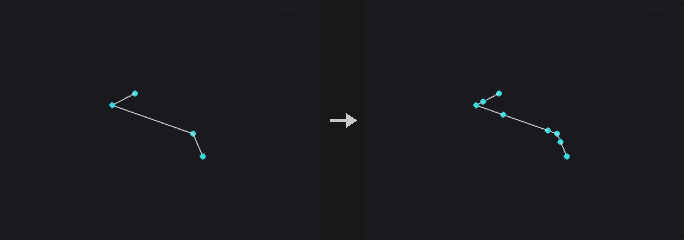
Unlike Resample, which discards the original points, Refine only inserts points between existing ones. Existing points, attributes and numbering stay untouched and new points are always appended at the end, so unselected primitives keep their vertex lists and shared points on meshes are not split apart.
Operations: Refine inserts a point at First U and/or Second U; Subdivide divides the range between First U and Second U into U Divisions parts; Unrefine removes points whose removal barely changes the shape (a Douglas-Peucker test with Tolerance).
Parameter Space decides how u is measured: by vertex index (uniform domain) or by arc length. These differ a lot on curves with uneven point spacing.
Inputs
| Input | Type | Description |
|---|---|---|
geo | GEOMETRY | Geometry with curves to refine. |
Outputs
| Output | Type | Description |
|---|---|---|
geo | GEOMETRY | Geometry with points inserted or removed. |
Parameters
| Parameter | Type | Default | Description |
|---|---|---|---|
Group group | string | (empty) | Group pattern of curve primitives to refine. Empty means all. |
Operation mode | menu | Refine | Refine inserts points, Unrefine removes redundant points, Subdivide divides a parameter range evenly. Options: Refine (refine), Unrefine (unrefine), Subdivide (subdivide). |
First U first_u | float [0.0..1.0] | 0.25 | First parametric position, 0 to 1. |
Use First U use_first_u | toggle | on | Enable the First U position. |
Second U second_u | float [0.0..1.0] | 0.75 | Second parametric position, 0 to 1. |
Use Second U use_second_u | toggle | off | Enable the Second U position. |
Parameter Space spacing | menu | Uniform Domain | Uniform Domain measures u by vertex index; Uniform Arc Length measures it by arc length. Options: Uniform Domain (uniform_domain), Uniform Arc Length (uniform_arc). |
U Divisions u_divisions | int [1..4096] | 2 | Number of parts the range is divided into (Subdivide only). Hidden when mode ≠ subdivide. |
NURB Count U nurb_count_u | int [1..64] | 1 | Number of coincident points inserted at each position (the knot multiplicity of a spline). Refine only. Hidden when mode ≠ refine. |
Tolerance U tolerance | float [0.0..] | 0.01 | Maximum shape deviation allowed when removing a point (Unrefine only). Hidden when mode ≠ unrefine. |
Compared with Houdini
The V direction is not implemented because polygon meshes have no global (u,v) parameterisation. Knot insertion on spline primitives is not implemented either; convert the spline first, otherwise the node reports an error.
Remesh (PCG)#
PCG_Remesh · category PCG/modify · Houdini: Remesh (SOP)
Rebuilds a triangle mesh with uniform, isotropic triangles of a target edge length.
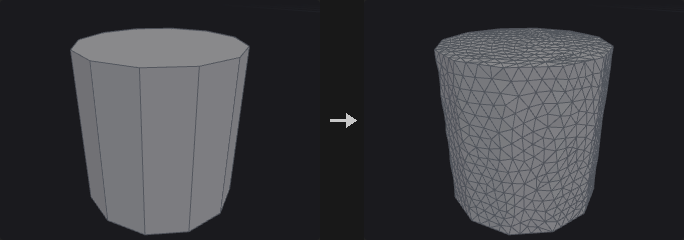
Isotropic remeshing after Botsch and Kobbelt (2004). Each iteration splits long edges, collapses short ones, flips edges to equalise valence, applies tangential smoothing and projects the points back onto the original surface. If Target Size is 0 or less, the average edge length of the input is used. Hard edges (dihedral angle above Hard Edge Angle) and boundaries (with Keep Boundary) are preserved, so the corners and edges of a cube survive.
Point, primitive and vertex attributes are interpolated from the nearest original triangle. UV seams are not preserved; re-unwrap afterwards if you need UVs. The report lists the number of splits, collapses and flips and the fraction of edges within the target range.
With a group, only those faces are remeshed and the rest is left untouched.
Inputs
| Input | Type | Description |
|---|---|---|
geo | GEOMETRY | Triangle mesh to remesh. |
Outputs
| Output | Type | Description |
|---|---|---|
geo | GEOMETRY | Remeshed geometry. |
report | STRING | Text report of the split, collapse and flip counts and the edge length statistics. |
Parameters
| Parameter | Type | Default | Description |
|---|---|---|---|
Group group | string | (empty) | Group pattern of faces to remesh. Empty means all. |
Hard Edges Group hard_edges | string | (empty) | Edge group of edges that may be split but always stay in the output. |
Hard Points Group hard_points | string | (empty) | Point group of points that stay in the output (they are not moved or collapsed). |
UV Seams uv_seams | menu | Ignore | Harden treats UV island borders as hard edges. Options: Ignore (ignore), Harden (harden). |
UV Attribute uv_attribute | string | uv | Name of the UV attribute used to find the seams. Hidden when uv_seams = ignore. |
Iterations iterations | int [0..100] | 6 | Number of split / collapse / flip / smooth rounds. |
Smoothing relax | float [0.0..1.0] | 0.5 | Strength of the tangential smoothing. |
Detach From Nongroup Geometry detach | toggle | off | Off: new points split on the border to the unselected faces are also inserted into those neighbouring faces, so both sides share the points. On: the remeshed part is detached from the rest. Disabled when group = "". |
Target Size target_length | float [0.0..] | 0 | Desired edge length. 0 means use the average edge length of the input. |
Hard Edge Angle feature_angle | float [0.0..180.0] | 45 | Dihedral angle in degrees above which an edge is hard. A value of 180 or more disables hard edge detection. |
Keep Boundary keep_boundary | toggle | on | Preserve open boundaries. |
Smooth Feature Lines smooth_features | toggle | off | When on, a hard edge or boundary that is split gets its new point on a smooth curve through the neighbouring feature points (four-point subdivision) instead of on the straight segment, so a coarse curved rim becomes round as it is refined. Corners and turns of 60 degrees or more stay sharp. Off (default) keeps new points on the original edges, as Houdini does. Interface edges of a partial remesh are never curved. |
Transfer Attributes transfer_attributes | toggle | on | Interpolate attributes from the original mesh onto the new one. |
Hard Edges out_hard_edges | string | (empty) | Name of the output edge group holding the hard edges (including boundaries and seams). Leave empty to not write it. |
Compared with Houdini
Hard Edge Angle at 180 or more (disabling hard edges) and the Keep Boundary switch are extensions; Houdini always keeps boundaries. Edge Lengths = Adaptive is not implemented. Smooth Feature Lines is an extension.
Remesh to Grid (PCG)#
PCG_RemeshToGrid · category PCG/modify · Houdini: Remesh to Grid (SOP)
Rebuilds a surface as a closed all-quad mesh from a voxelised signed distance field.
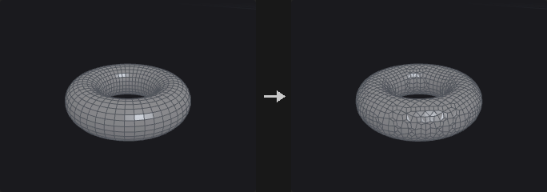
Computes an exact SDF on cubic voxels aligned to multiples of Voxel Size, then extracts a closed all-quad mesh using surface nets. Project to Surface moves the points back onto the original surface; Smooth Iterations runs tangential relaxation (re-projecting after every round when projection is on). Point attributes are carried over by barycentric interpolation at the nearest point.
Sharp edges are rounded; use Remesh if you need to keep creases.
Inputs
| Input | Type | Description |
|---|---|---|
geo | GEOMETRY | Surface to rebuild. |
Outputs
| Output | Type | Description |
|---|---|---|
geo | GEOMETRY | All-quad closed mesh. |
report | STRING | Text summary of the result. |
Parameters
| Parameter | Type | Default | Description |
|---|---|---|---|
Group group | string | (empty) | Group pattern of primitives that are used. Empty means all. |
Voxel Size voxel_size | float [1e-06..] | 0.1 | Edge length of the cubic voxels, which sets the quad size. |
Project to Surface project | toggle | on | Project points back onto the original surface. |
Smooth Iterations smooth | int [0..100] | 2 | Number of tangential relaxation rounds. Without Project the points are not projected back and may drift slightly off the original surface. |
Smooth Strength smooth_strength | float [0.0..1.0] | 0.5 | Strength of each relaxation round. Disabled when smooth = 0. |
Transfer Attributes transfer_attributes | toggle | on | Carry point attributes over from the input. |
Resample (PCG)#
PCG_Resample · category PCG/modify · Houdini: Resample (SOP)
Resamples curves into evenly spaced points by length or segment count.
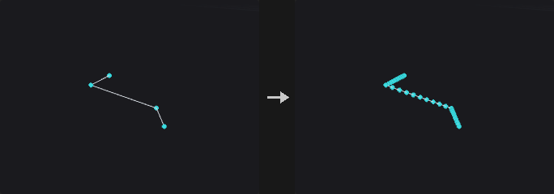
Resamples curves with equal-length segments, or equal steps along one axis. NURBS and Bezier curves are evaluated on the curve itself before sampling, not measured on the control polygon, since the two can differ greatly. Closed polygons are sampled all the way around (including the closing edge) and stay closed.
Limit By replaces Houdini's two switches: Maximum Segment Length samples by Length (optionally capped by Maximum Segments); Segment Count produces exactly Segments segments. With Allow Primitive Attributes to Override Parameters the primitive attributes segment_length and num_segments replace Length and Segments; values of 0 or less turn off the respective switch.
Optional output attributes record the curve parameter, distance along the curve, tangent and curve number.
Inputs
| Input | Type | Description |
|---|---|---|
geo | GEOMETRY | Geometry with curves to resample. |
Outputs
| Output | Type | Description |
|---|---|---|
geo | GEOMETRY | Resampled curves. |
Parameters
| Parameter | Type | Default | Description |
|---|---|---|---|
Group group | string | (empty) | Group pattern of primitives to resample. Empty means all. |
Maintain Primitive Order maintain_prim_order | toggle | off | Off places the resampled curves after the unselected primitives. |
Resample by Polygon Edge resample_by_edge | toggle | off | Resample each polygon edge on its own, keeping all corners. Only for straight-edged polygons. Disabled when treat_polygons_as ≠ straight_edges. |
Method measure_method | menu | Even Length Segments | Even Length uses equal lengths. Even X/Y/Z uses equal steps along that axis. Options: Even Length Segments (even_length), Even X Segments (even_x), Even Y Segments (even_y), Even Z Segments (even_z). |
Measure measure | menu | Along Arc | Along Arc keeps the curve length between samples equal. Along Chord keeps the straight-line distance between samples equal. Options: Along Arc (along_arc), Along Chord (along_chord). Disabled when resample_by_edge is on. |
Treat Polygons As treat_polygons_as | menu | Straight Edges | Straight Edges samples the polygon as drawn. Subdivision Curves treats points as control points, pulling the curve inside. Interpolating Curves passes through every point. The density for the curved options is Samples per Span. Options: Straight Edges (straight_edges), Subdivision Curves (subdivision_curves), Interpolating Curves (interpolating_curves). |
Limit By method | menu | Maximum Segment Length | Maximum Segment Length samples by length; Segment Count produces an exact number of segments. Options: Maximum Segment Length (max_segment_length), Segment Count (segment_count). |
Length length | float [1e-06..] | 0.1 | Maximum length of each segment. Hidden when method ≠ max_segment_length. |
Maximum Segments max_segments | int [1..] | 10 | If the length-based count would exceed this, exactly this many segments are used instead. Hidden when method ≠ max_segment_length. |
Use Max Segments use_max_segments | toggle | off | Enable the Maximum Segments cap. |
Segments segments | int [1..] | 10 | Exact number of segments. Hidden when method ≠ segment_count. |
Allow Primitive Attributes to Override Parameters attrib_override | toggle | off | Let the primitive attributes segment_length and num_segments override Length and Segments. Values of 0 or less disable the corresponding switch. |
Even Last Segment even_last_segment | toggle | on | Round the segment count, then divide the total length evenly so all segments are equally long. Off steps strictly by Length and leaves a shorter last segment. Hidden when method ≠ max_segment_length. |
Maintain Last Vertex maintain_last_vertex | toggle | on | When segments are not evened, keep the original end point of the curve even if the leftover tail is shorter than one step. Disabled when method ≠ max_segment_length attrib_override is off } { even_last_segment is on. |
Randomize First Segment Length randomize_first | toggle | off | Make the first segment's length Length times a random number (seeded by the primitive number). Disabled when method ≠ max_segment_length attrib_override is off } { resample_by_edge is on. |
Create Only Points create_only_points | toggle | off | Output only points, no curves. |
Output as Polygon Curves to be Subdivided Later subdivide_later | toggle | off | Output polygon curves whose points are the control points of a subdivision curve, intended to be subdivided later. Disabled when create_only_points is on. |
Spline
| Parameter | Type | Default | Description |
|---|---|---|---|
Spline Evaluation use_spline_opts | toggle | off | Enable Samples per Span. |
Samples per Span spline_samples | int [2..512] | 16 | Density used to evaluate NURBS and Bezier curves before sampling, and when Treat Polygons As densifies. |
Output Attributes
| Parameter | Type | Default | Description |
|---|---|---|---|
Output Attributes use_out_attribs | toggle | off | Write the output attributes below. |
Curve U Attribute curveu_attrib | string | curveu | Point attribute for the normalised position along the curve (0 to 1). |
Distance Attribute distance_attrib | string | ptdist | Point attribute for the arc-length distance along the curve. |
Tangent Attribute tangent_attrib | string | tangentu | Point attribute for the unit tangent. |
Curve Number Attribute curvenum_attrib | string | curvenum | Point attribute for the number of the source curve. |
Reverse (PCG)#
PCG_Reverse · category PCG/modify · Houdini: Reverse (SOP)
Reorders the vertices of primitives: reverse, swap U/V or shift.
Every operation is turned into a corner permutation per primitive, and then the vertex-to-point map, all vertex attributes and vertex groups are reordered together. A simple reversal and U/V surface operations follow the same path, so no kind of data is left behind.
Reverse V and Swap UV are only meaningful on NURBS or Bezier surfaces; polygons have no V direction.
Inputs
| Input | Type | Description |
|---|---|---|
geo | GEOMETRY | Geometry whose primitives should be reordered. |
Outputs
| Output | Type | Description |
|---|---|---|
geo | GEOMETRY | Geometry with reordered vertices. |
Parameters
| Parameter | Type | Default | Description |
|---|---|---|---|
Group group | string | (empty) | Group pattern of primitives. Empty means all. |
Vertex mode | menu | Reverse | Vertex operation. Reverse flips the winding (and so the normal of polygons). Options: Reverse (reverse), No Change (none), Reverse U (reverse_u), Reverse V (reverse_v), Swap UV (swap_uv), Shift (shift). |
Enable Shift use_shift | toggle | on | Enable the offsets. When off, the offsets are treated as 0. Hidden when mode ≠ shift } { use_shift is on. |
U Offset u_offset | int [-4096..4096] | 0 | Shift in U, in vertices. Hidden when mode ≠ shift. Disabled when use_shift is off. |
V Offset v_offset | int [-4096..4096] | 0 | Shift in V. Only meaningful on NURBS or Bezier surfaces (grids). Hidden when mode ≠ shift. Disabled when use_shift is off. |
Compared with Houdini
Enable Shift is an addition; Houdini has no such switch.
Shrinkwrap (PCG)#
PCG_Shrinkwrap · category PCG/modify · Houdini: Shrinkwrap (SOP)
Wraps geometry in a single closed manifold shell by rolling a sphere over it from outside.
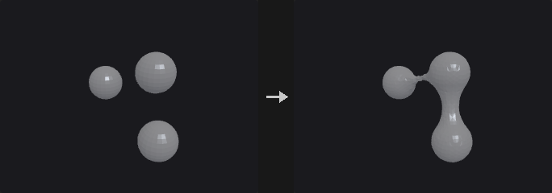
A sphere of the given Wrap Radius rolls over the geometry from the outside; the boundary of the region it cannot reach becomes the shell. Gaps, holes and grooves narrower than twice the radius are bridged, wider concavities are followed. Open meshes, loose pieces and interpenetrating parts all end up in one closed manifold surface. A radius approaching infinity gives the convex hull.
Offset pushes the whole shell outward. With Project to Surface the points that touch the input are snapped onto it exactly (and added to the point group contact); Smooth Iterations applies tangential relaxation. Accuracy is one voxel (Voxel Size, aligned to world coordinates).
Inputs
| Input | Type | Description |
|---|---|---|
geo | GEOMETRY | Geometry to wrap. |
Outputs
| Output | Type | Description |
|---|---|---|
geo | GEOMETRY | Closed shell around the input. |
report | STRING | Text summary of the result. |
Parameters
| Parameter | Type | Default | Description |
|---|---|---|---|
Group group | string | (empty) | Group pattern of primitives to wrap. Empty means all. |
Voxel Size voxel_size | float [0.0001..10000.0] | 0.05 | Voxel size of the working grid; also the accuracy of the result. |
Wrap Radius radius | float [0.0..10000.0] | 0.15 | Radius of the rolling sphere. Gaps narrower than twice this are bridged; larger values approach the convex hull. |
Offset offset | float [0.0..10000.0] | 0 | Pushes the shell outward by this distance. It cannot exceed the radius. |
Project to Surface project | toggle | on | Snap points that touch the input exactly onto its surface. These points go to the group contact. |
Smooth Iterations smooth | int [0..100] | 2 | Number of tangential relaxation rounds. |
Smooth Strength smooth_strength | float [0.0..1.0] | 0.5 | Strength of each relaxation round. Disabled when smooth = 0. |
Smooth (PCG)#
PCG_Smooth · category PCG/modify · Houdini: Smooth (SOP)
Applies Laplacian smoothing to points and other attributes.
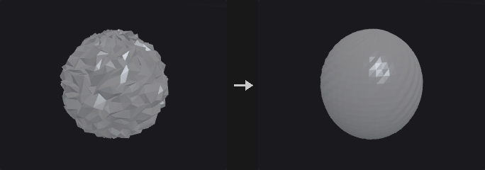
Each iteration moves every point towards the (weighted) centroid of its neighbours by Strength, which is a per-iteration step, unlike Houdini's Strength. Border points are pinned by default; otherwise an open mesh shrinks inwards with every pass.
The weights depend on Method: Uniform weights all neighbours equally; Scale-Dominant weights by 1/edge length, which preserves relative edge lengths; Curvature-Dominant uses cotangent weights, which move points almost only along the normal. Attributes lists the attributes to smooth (point and vertex float attributes, space separated, wildcards allowed); P is the default.
Inputs
| Input | Type | Description |
|---|---|---|
geo | GEOMETRY | Geometry to smooth. |
Outputs
| Output | Type | Description |
|---|---|---|
geo | GEOMETRY | Smoothed geometry. |
Parameters
| Parameter | Type | Default | Description |
|---|---|---|---|
Group group | string | (empty) | Group pattern of points that are smoothed. Empty means all. |
Pin Border Points (Unshared Edges) pin_boundary | toggle | on | Keep points on open borders (unshared edges) fixed. |
Pin Group Boundary pin_group_boundary | toggle | off | Also pin the outer rim of the selection: selected points with at least one unselected neighbour. With Pin Border Points on as well this matches Houdini's Group Boundary. |
Constrained Points constrained_points | string | (empty) | Group pattern of extra points that are never moved. |
Attributes attributes | string | P | Space-separated names or wildcards of the attributes to smooth. |
Weight Attribute weight_attribute | string | weight | Point attribute giving a per-point multiplier for Strength. |
Use Weight Attribute use_weight_attribute | toggle | off | Enable the weight attribute. The product with Strength is clamped to the range 0 to 1. |
Method method | menu | Uniform | Weighting scheme for neighbours; see the description. Options: Uniform (uniform), Scale-Dominant (scale_dominant), Curvature-Dominant (curvature_dominant). |
Strength strength | float [0.0..1.0] | 0.5 | Step size per iteration, 0 to 1. |
Iterations iterations | int [0..500] | 5 | Number of smoothing rounds. |
Recompute Affected Normals recompute_normals | toggle | off | Recompute N on affected points and vertices when P was smoothed but N was not. |
Compared with Houdini
Strength is a per-iteration step and there is an Iterations count, unlike Houdini's Smooth. Filter Quality is not implemented.
Sort (PCG)#
PCG_Sort · category PCG/modify · Houdini: Sort (SOP)
Reorders points and primitives by position, attribute, expression or other criteria without changing the shape.
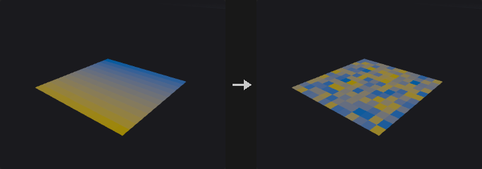
Only point and primitive numbers change; the geometry stays the same. Because numbering changes, everything that refers to numbers is remapped together: vertex lists, all kinds of groups, edge groups (stored as point pairs) and per-primitive side channels.
The point and primitive sorts are independent. Circular (Around Axis) sorts by angle around an axis (right-hand rule); it turns a scattered ring of points into a correct polygon ring, where X/Y/Z sorting only gives a zigzag.
The switches at the bottom (Enable ...) are not in Houdini. When off, the corresponding section's parameters are treated as their defaults.
Inputs
| Input | Type | Description |
|---|---|---|
geo | GEOMETRY | Geometry to reorder. |
Outputs
| Output | Type | Description |
|---|---|---|
geo | GEOMETRY | Geometry with new point and primitive numbering. |
Parameters
| Parameter | Type | Default | Description |
|---|---|---|---|
Point Sort point_sort | menu | No Change | How points are ordered. X/Y/Z sort by that coordinate; Reverse reverses the order; Random shuffles with a seed; Shift rotates the order by an offset; Proximity orders by distance to a point; Along Vector by projection onto a vector; By Attribute and By Expression by a value; By Spatial Locality keeps spatial neighbours close in the numbering; Circular sorts by angle around an axis. Options: No Change (none), Sort by X (x), Sort by Y (y), Sort by Z (z), Reverse (reverse), Random (random), Shift (shift), Proximity to Point (proximity), Along Vector (along_vector), By Attribute (attribute), By Expression (expression), By Spatial Locality (spatial_locality), Circular (Around Axis) (circular). |
Seed rand_seed | int [0..] | 0 | Seed for the random point sort. Hidden when point_sort ≠ random. Disabled when use_rs is off. |
Offset offset | int | 0 | Number of positions to shift the point order by. Hidden when point_sort ≠ shift. Disabled when use_rs is off. |
Vector axis_x axis_y axis_z | float | 0, 1, 0 | Direction vector for Along Vector, or the rotation axis for Circular. Hidden when point_sort ≠ along_vector point_sort ≠ circular. Disabled when use_axis is off. |
Specify Center use_center | toggle | off | Specify the center of the Circular sort. Off uses the default center. Hidden when point_sort ≠ circular. Disabled when use_axis is off. |
Center center_x center_y center_z | float | 0, 0, 0 | Center for the Circular point sort. Hidden when point_sort ≠ circular. Disabled when use_axis is off } { use_center is off. |
Point target_x target_y target_z | float | 0, 0, 0 | Position that Proximity measures distance to. Hidden when point_sort ≠ proximity. Disabled when use_target is off. |
Point Attribute point_attrib | string | (empty) | Point attribute used for the attribute sort. Hidden when point_sort ≠ attribute. Disabled when use_key is off. |
Component component | int [0..15] | 0 | Component of the attribute used as the sort key. Hidden when point_sort ≠ attribute. Disabled when use_key is off. |
Point Expression point_expr | string | (empty) | Expression evaluated per point and used as the sort key. Hidden when point_sort ≠ expression. Disabled when use_key is off. |
Reverse Point Sort reverse_point_sort | toggle | off | Reverse the result of the chosen point sort. Disabled when point_sort = none. |
Primitive Sort prim_sort | menu | No Change | How primitives are ordered; same options as the point sort, measured on primitive centers. Options: No Change (none), Sort by X (x), Sort by Y (y), Sort by Z (z), Reverse (reverse), Random (random), Shift (shift), Proximity to Point (proximity), Along Vector (along_vector), By Attribute (attribute), By Expression (expression), By Spatial Locality (spatial_locality), Circular (Around Axis) (circular). |
Seed prim_rand_seed | int [0..] | 0 | Seed for the random primitive sort. Hidden when prim_sort ≠ random. Disabled when use_rs is off. |
Offset prim_offset | int | 0 | Number of positions to shift the primitive order by. Hidden when prim_sort ≠ shift. Disabled when use_rs is off. |
Vector prim_axis_x prim_axis_y prim_axis_z | float | 0, 1, 0 | Direction vector for Along Vector, or the rotation axis for Circular, for primitives. Hidden when prim_sort ≠ along_vector prim_sort ≠ circular. Disabled when use_axis is off. |
Specify Center prim_use_center | toggle | off | Specify the center of the Circular primitive sort. Hidden when prim_sort ≠ circular. Disabled when use_axis is off. |
Center prim_center_x prim_center_y prim_center_z | float | 0, 0, 0 | Center for the Circular primitive sort. Hidden when prim_sort ≠ circular. Disabled when use_axis is off } { prim_use_center is off. |
Point prim_target_x prim_target_y prim_target_z | float | 0, 0, 0 | Position that Proximity measures distance to for primitives. Hidden when prim_sort ≠ proximity. Disabled when use_target is off. |
Primitive Attribute prim_attrib | string | (empty) | Primitive attribute used for the attribute sort. Hidden when prim_sort ≠ attribute. Disabled when use_key is off. |
Component prim_component | int [0..15] | 0 | Component of the attribute used as the sort key. Hidden when prim_sort ≠ attribute. Disabled when use_key is off. |
Primitive Expression prim_expr | string | (empty) | Expression evaluated per primitive and used as the sort key. Hidden when prim_sort ≠ expression. Disabled when use_key is off. |
Reverse Primitive Sort reverse_prim_sort | toggle | off | Reverse the result of the chosen primitive sort. Disabled when prim_sort = none. |
Sort Points by Vertex Order points_by_vertex_order | toggle | off | First renumber points in the order in which their vertices appear in the primitives, then apply the Point Sort. |
Enable Vector / Center use_axis | toggle | on | Enable the Vector and Center fields. Off treats them as their defaults. Hidden when use_axis is on } { point_sort ≠ along_vector point_sort ≠ circular prim_sort ≠ along_vector prim_sort ≠ circular. |
Enable Proximity Point use_target | toggle | on | Enable the proximity point. Off treats it as the default. Hidden when use_target is on } { point_sort ≠ proximity prim_sort ≠ proximity. |
Enable Attribute / Expression use_key | toggle | on | Enable the attribute and expression fields. Off treats them as their defaults. Hidden when use_key is on } { point_sort ≠ attribute point_sort ≠ expression prim_sort ≠ attribute prim_sort ≠ expression. |
Enable Seed / Offset use_rs | toggle | on | Enable Seed and Offset. Off treats them as their defaults. Hidden when use_rs is on } { point_sort ≠ random point_sort ≠ shift prim_sort ≠ random prim_sort ≠ shift. |
Compared with Houdini
The four Enable switches (vector/center, proximity point, attribute/expression, seed/offset) do not exist in Houdini.
Split (PCG)#
PCG_Split · category PCG/modify · Houdini: Split (SOP)
Splits geometry into the part in a group and the part outside it.
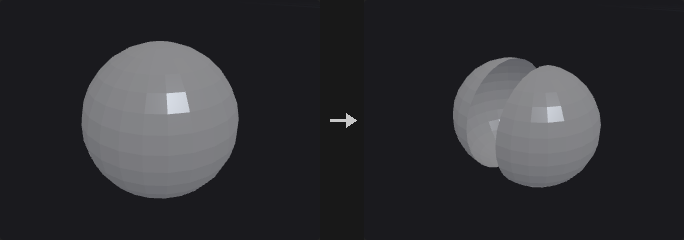
Like Blast, but both halves are kept: the first output holds the group, the second everything else. It saves a Blast inside loops with the pattern "selected get A, unselected get B, merge back".
Inputs
| Input | Type | Description |
|---|---|---|
geo | GEOMETRY | Geometry to split. |
Outputs
| Output | Type | Description |
|---|---|---|
inside | GEOMETRY | Elements that are in the group. |
outside | GEOMETRY | Elements that are not in the group. |
Parameters
| Parameter | Type | Default | Description |
|---|---|---|---|
Group group | string | (empty) | Group pattern that defines the inside. |
Group Type cls | menu | Primitives | Whether the group refers to primitives or points. Options: Primitives (prim), Points (point). |
Subdivide (PCG)#
PCG_Subdivide · category PCG/modify · Houdini: Subdivide (SOP)
Subdivides polygon meshes with Catmull-Clark, Loop or bilinear schemes.
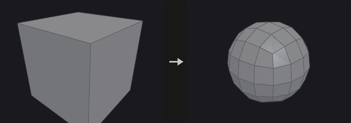
Catmull-Clark turns any polygon into one quad per corner; the limit surface is a B-spline, a good default for hard-surface rounding and high-to-low baking. Loop takes triangles only and splits each into four, which gives better results than Catmull-Clark on triangle meshes. Bilinear only cuts and does not smooth, so it adds density without changing shape (useful for displacing yourself afterwards).
Vertex Boundary Interpolation follows OpenSubdiv: Edges and Corners makes borders crease curves with fixed corners; Edges Only lets corners follow the curve (and be worn away); None does not treat borders as creases and the whole surface shrinks inwards.
Creases: the edge group and the auto-crease angle are infinitely sharp. A vertex attribute (default creaseweight) can supply fractional weights as in OpenSubdiv's semi-sharp creases: a weight of 1 or more is sharp for that level, between 0 and 1 blends, and the value drops by 1 per level.
Attributes: point attributes follow the same rule as P (so Cd is smoothed), vertex attributes are interpolated linearly (as UVs should be) and primitive attributes are inherited from the source face.
Inputs
| Input | Type | Description |
|---|---|---|
geo | GEOMETRY | Mesh to subdivide. |
Outputs
| Output | Type | Description |
|---|---|---|
geo | GEOMETRY | Subdivided mesh. |
Parameters
| Parameter | Type | Default | Description |
|---|---|---|---|
Group group | string | (empty) | Group pattern of primitives to subdivide. Empty means all. |
Algorithm algorithm | menu | OpenSubdiv Catmull-Clark | Subdivision scheme; see the description. Options: OpenSubdiv Catmull-Clark (catmull_clark), OpenSubdiv Loop (loop), OpenSubdiv Bilinear (linear). |
Depth depth | int [0..6] | 1 | Number of subdivision levels. 0 leaves the mesh unchanged. |
Vertex Boundary Interpolation boundary | menu | Edges and Corners | How borders are treated. With Bilinear this does not change the shape and only affects the output crease group. Options: Edges and Corners (edge_corner), Edges Only (edge_only), None (smooth). |
Creases
| Parameter | Type | Default | Description |
|---|---|---|---|
Creases crease_group | string | (empty) | Edge group of edges that are infinitely sharp. |
Auto Crease Angle auto_crease_angle | float [-1.0..180.0] | -1 | Edges whose dihedral angle exceeds this (degrees) are treated as creases automatically. -1 turns it off. |
Crease Weight Attribute crease_attribute | string | creaseweight | Vertex attribute holding fractional crease weights. Leave empty to not read one. |
Output Crease Group output_crease_group | string | (empty) | Name of an edge group to write the crease edges to. Leave empty to not write it. |
Switch (PCG)#
PCG_Switch · category PCG/modify · Houdini: Switch (SOP)
Passes through one of up to eight inputs, chosen by index or expression, evaluating only the selected branch.
The branch inputs are lazy: only the selected one is requested, so the other branches are not executed, just as unselected branches are not cooked in Houdini. That is what makes the node useful.
Select Input accepts an expression as in Houdini: a plain index (2), a detail read from the control input (detail(-1, "type", 0)), a condition (1 if detail("kind") == "drawer" else 0, nprims() > 100) or ninputs() - 1 for the last input. ctrl is the equivalent of Houdini's Spare Input, which -1 refers to. Expressions can only read from ctrl, not from the branches, since reading a branch would run the unselected ones too. Connect the data you want to test to ctrl separately.
Only connected branches are counted, as in Houdini: with input0 and input2 connected, index 1 selects input2. Out-of-range indices are clamped to the ends, or wrapped with Wrap Out-of-Range Index.
Inputs
| Input | Type | Description |
|---|---|---|
ctrl (optional) | GEOMETRY | Control input that expressions in Select Input read from (Houdini's Spare Input). Not passed through. |
input0 (optional) | GEOMETRY | Branch 0. |
input1 (optional) | GEOMETRY | Branch 1. |
input2 (optional) | GEOMETRY | Branch 2. |
input3 (optional) | GEOMETRY | Branch 3. |
input4 (optional) | GEOMETRY | Branch 4. |
input5 (optional) | GEOMETRY | Branch 5. |
input6 (optional) | GEOMETRY | Branch 6. |
input7 (optional) | GEOMETRY | Branch 7. |
Outputs
| Output | Type | Description |
|---|---|---|
geo | GEOMETRY | The selected input. |
Parameters
| Parameter | Type | Default | Description |
|---|---|---|---|
Select Input select_input | string | 0 | Index (or expression) of the input to pass through, counting connected inputs only. |
Wrap Out-of-Range Index wrap | toggle | off | Off clamps out-of-range indices to the first or last input. On wraps around (negative values count from the end). |
Switch-If (PCG)#
PCG_SwitchIf · category PCG/modify · Houdini: Switch-If (SOP)
Outputs one of two inputs depending on whether a set of tests passes.
If the condition holds, if_true is output, otherwise if_false (an unconnected branch outputs empty geometry). Tests has one expression per line (lines starting with # are comments); Merge Condition decides whether all tests or any test has to pass, and Invert Result negates the outcome.
Available functions include npoints(), nprims(), detail("x"), point("x", i), hasattrib("point", "Cd"), hasgroup("prim", "top"), ngroup("edge", "crease"), attribmax("point", "P", 1), attribmin and attribmean.
Tests read the test input; if it is not connected they read if_true. Unselected branches are not executed (lazy): with test connected only the selected branch runs. Without it, if_true must be evaluated first (the tests read it) and if_false runs only if the condition fails.
Inputs
| Input | Type | Description |
|---|---|---|
test (optional) | GEOMETRY | Geometry the tests read. Falls back to if_true if not connected. |
if_true (optional) | GEOMETRY | Geometry output when the condition holds. |
if_false (optional) | GEOMETRY | Geometry output when the condition fails. Empty geometry if not connected. |
Outputs
| Output | Type | Description |
|---|---|---|
geo | GEOMETRY | The selected branch. |
result | BOOLEAN | The outcome of the test (true or false). |
report | STRING | Text report of the tests and their results. |
Parameters
| Parameter | Type | Default | Description |
|---|---|---|---|
Merge Condition merge | menu | All Tests Pass | All Tests Pass requires every line to be true; Any Test Passes needs only one. Options: All Tests Pass (all), Any Test Passes (any). |
Invert Result invert | toggle | off | Negate the final result. |
Tests tests | string | npoints() > 0 | One test expression per line. Lines starting with # are comments. |
Thicken (PCG)#
PCG_Thicken · category PCG/modify
Gives open surfaces a thickness with a second skin and side walls.
Turns a single-sided surface (a leaf, a cloth panel, a terrain patch) into a solid: a second skin is made Thickness away along the point normals and the borders are closed with side walls.
Side chooses where the thickness goes: Outward keeps the input as the inner skin, Inward as the outer skin, Both makes the input the mid-surface. Front, back and side faces are put into groups. Closed meshes become hollow shells. Thickness is measured along point normals, so sharp convex corners come out a little thinner, as with any normal offset.
Inputs
| Input | Type | Description |
|---|---|---|
geo | GEOMETRY | Polygons to thicken. |
Outputs
| Output | Type | Description |
|---|---|---|
geo | GEOMETRY | The solid. |
report | STRING | Primitive count, thickness and side. |
Parameters
| Parameter | Type | Default | Description |
|---|---|---|---|
Group group | string | (empty) | Primitives to thicken. |
Thickness thickness | float | 0.1 | Distance between the two skins. |
Side side | menu | Both (Centered) | Where the thickness goes: both sides (centered), outward or inward. Options: Both (Centered) (both), Outward (outward), Inward (inward). |
Divisions divisions | int [1..1000] | 1 | Number of edge loops across the side walls. |
Output Groups
| Parameter | Type | Default | Description |
|---|---|---|---|
Front Group front_group | string | thickenFront | Primitive group for the faces moved along the normals. |
Back Group back_group | string | thickenBack | Primitive group for the faces on the other side. |
Side Group side_group | string | thickenSide | Primitive group for the side walls. |
Transform (PCG)#
PCG_Transform · category PCG/modify · Houdini: Transform (SOP)
Translates, rotates, scales and shears points with a Houdini-style transform and pivot.
Applies one transform to the selected points. Transform Order sets the order of scale, rotate and translate, and Rotate Order the order of the three axis rotations. Scale and rotation happen around the pivot, in a coordinate system rotated by Pivot Rotate. Shear is applied immediately after scaling. Invert Transformation applies the inverse transform.
The group is always interpreted as Guess: first as a point group or point attribute expression, and if nothing matches on points, as a primitive group (using the points of those primitives).
Inputs
| Input | Type | Description |
|---|---|---|
geo | GEOMETRY | Geometry to transform. |
Outputs
| Output | Type | Description |
|---|---|---|
geo | GEOMETRY | Transformed geometry. |
Parameters
| Parameter | Type | Default | Description |
|---|---|---|---|
Group group | string | (empty) | Group pattern (guessed as points first, then primitives) selecting what to transform. Empty means all. |
Transform Order xform_order | menu | Scale Rot Trans | Order in which scale, rotate and translate are applied, read left to right. Options: Scale Rot Trans (srt), Scale Trans Rot (str), Rot Scale Trans (rst), Rot Trans Scale (rts), Trans Scale Rot (tsr), Trans Rot Scale (trs). |
Rotate Order rotate_order | menu | Rx Ry Rz | Order in which the three axis rotations are applied. Options: Rx Ry Rz (xyz), Rx Rz Ry (xzy), Ry Rx Rz (yxz), Ry Rz Rx (yzx), Rz Rx Ry (zxy), Rz Ry Rx (zyx). |
Translate tx ty tz | float | 0, 0, 0 | Translation. |
Rotate rx ry rz | float [-3600..3600] | 0, 0, 0 | Rotation in degrees; the three angles are applied in the Rotate Order. |
Scale sx sy sz | float | 1, 1, 1 | Per-axis scale. |
Shear shear_xy shear_xz shear_yz | float | 0, 0, 0 | Shear values XY, XZ and YZ: x += xy*y + xz*z, y += yz*z. Applied right after scaling. |
Uniform Scale uniform_scale | float | 1 | Extra scale factor on all axes. |
Pivot Translate px py pz | float | 0, 0, 0 | Pivot point; scale and rotation happen around it. |
Pivot Rotate prx pry prz | float [-3600..3600] | 0, 0, 0 | Rotation in degrees of the pivot's coordinate system; scale and rotation are done in the frame rotated by this angle. |
Invert Transformation invert | toggle | off | Apply the inverse of the transformation. |
Transform by Attribute (PCG)#
PCG_TransformByAttrib · category PCG/modify · Houdini: Transform by Attribute (SOP)
Transforms geometry by matrix attributes, per detail, point or primitive.
Reads a matrix attribute (9 values for a 3x3, 16 for a 4x4, read the same way as in Copy to Points) and applies it to the geometry. Attribute Class chooses one matrix for the whole detail, one per point, or one per primitive. Invert Transform uses the inverse matrix.
Normals use the inverse transpose and are renormalised, vectors are multiplied by the 3x3 part only, and orient is multiplied by the rotation part.
Matrices use Houdini's convention: points are row vectors, p' = p * M, and a 4x4 keeps its translation in the fourth row. A transform written in Houdini, or by Extract Transform, means the same here.
Inputs
| Input | Type | Description |
|---|---|---|
geo | GEOMETRY | Geometry to transform. |
Outputs
| Output | Type | Description |
|---|---|---|
geo | GEOMETRY | Transformed geometry. |
report | STRING | Text summary of what was transformed. |
Parameters
| Parameter | Type | Default | Description |
|---|---|---|---|
Group group | string | (empty) | Group pattern selecting what to transform. Empty means all. |
Transform Attribute attribute | string | transform | Name of the matrix attribute (3x3 or 4x4). |
Attribute Class attribute_class | menu | Point | Where the matrix lives: one on the detail, one per point or one per primitive. Options: Detail (detail), Point (point), Primitive (prim). |
Invert Transform invert | toggle | off | Use the inverse of the matrix. |
Normals to Transform normals | string | N | Pattern of normal attributes to transform (inverse transpose, renormalised). |
Vectors to Transform vectors | string | v up | Pattern of vector attributes to transform with the 3x3 part only. |
Transform orient orient | toggle | on | Also transform the orient quaternion attribute with the rotation part. |
Triangulate 2D (PCG)#
PCG_Triangulate2D · category PCG/modify · Houdini: Triangulate 2D (SOP)
Builds a Delaunay or constrained Delaunay triangulation of points lying in a plane.
Where PolyFill just caps a hole (with fans or ear clipping, giving ugly triangles), this node produces a good triangulation: Delaunay maximises the minimum angle, which is what finite elements, terrain and cloth meshes need.
Delaunay is computed by lifting (x, y) to (x, y, x^2+y^2) and projecting the lower convex hull back, so the result is algebraically exact. Cocircular point sets (a square, a regular polygon) are handled separately, since any triangulation of cocircular points is Delaunay.
Constrain = Input Polygons forces the input polygon edges to appear in the output, which is needed for concave outlines because plain Delaunay triangulates the convex hull. Inside and outside are decided by region depth parity (crossing a constrained edge adds one), so holes and nested islands work. Max Circumradius and Max Edge Length prune large triangles, which gives a concave hull from a point cloud.
Vertex and primitive attributes are not carried over, because the output triangles do not correspond to input vertices or faces. Point attributes and point groups are kept as they are.
Inputs
| Input | Type | Description |
|---|---|---|
geo | GEOMETRY | Points (and optionally polygons or edge groups for constraints). |
Outputs
| Output | Type | Description |
|---|---|---|
geo | GEOMETRY | Triangulated geometry. |
Parameters
| Parameter | Type | Default | Description |
|---|---|---|---|
Points to Triangulate group | string | (empty) | Group pattern of points to triangulate. Empty means all. |
Plane plane | menu | Fit Plane | Plane in which the points are triangulated. Fit Plane fits one to the points; XY, ZX and YZ use the axis planes; Specify Plane uses the origin and normal. Options: Fit Plane (fit_plane), XY Plane (xy), ZX Plane (zx), YZ Plane (yz), Specify Plane (specify_plane). |
Plane Origin plane_origin_x plane_origin_y plane_origin_z | float | 0, 0, 0 | Origin of the plane (for the plane modes other than Fit Plane). Hidden when plane = fit_plane. |
Plane Normal plane_normal_x plane_normal_y plane_normal_z | float | 0, 1, 0 | Normal of the plane when Specify Plane is chosen. Hidden when plane ≠ specify_plane. |
Plane Offset plane_distance | float | 0 | Extra distance by which the plane is moved along its normal. |
Constrain constrain | menu | None | None triangulates points only. Input Polygons makes the input polygon edges part of the triangulation. Edge Group uses the edges in the given group. Options: None (none), Input Polygons (input_polygons), Edge Group (edge_group). |
Constrained Edges constrain_group | string | (empty) | Edge group of the constrained edges. Hidden when constrain ≠ edge_group. |
Region region | menu | Keep All | Which triangles to keep relative to the constrained outline: all, only inside, only outside or neither. Options: Keep All (keep_all), Remove Outside (remove_outside), Remove Inside (remove_inside), Remove Outside and Inside (remove_outside_and_inside). Hidden when constrain = none. |
Max Circumradius max_circumradius | float [0.0..] | 0 | 0 disables pruning. Otherwise triangles with a larger circumradius are removed (concave hull). |
Max Edge Length max_edge_length | float [0.0..] | 0 | 0 disables pruning. Otherwise triangles with a longer longest edge are removed. |
Output
| Parameter | Type | Default | Description |
|---|---|---|---|
Keep Input Geometry keep_input_geometry | toggle | off | Merge the input geometry into the output. |
Boundary Edge Group border_group | string | (empty) | Name of an edge group for the boundary edges of the result. Leave empty to not write it. |
Constrained Edge Group constrained_group | string | (empty) | Name of an edge group for the constrained edges. Leave empty to not write it. |
Advanced
| Parameter | Type | Default | Description |
|---|---|---|---|
Fuse Tolerance fuse_tolerance | float [0.0..1000.0] | 1e-06 | Points closer than this are treated as the same point. |
Hull Tolerance hull_tolerance | float [0.0..0.001] | 1e-12 | Tolerance of the internal convex hull. Keep it tiny, otherwise almost cocircular points can vanish from the triangulation. |
On Failure on_failure | menu | Fail with Error | What to do if triangulation fails: raise an error, keep the input with a warning, or output nothing. Options: Fail with Error (fail_with_error), Warn and Keep Input (warn_and_keep_input), Output Nothing (output_nothing). |
Volume Blur (PCG)#
PCG_VolumeBlur · category PCG/modify · Houdini: Volume Blur (SOP)
Blurs volumes with a Gaussian or box filter, or reduces neighbourhoods with min, max, median and similar operators.
The default Reduction is Filter, which runs a separable Gaussian (sigma = Radius / 2, converted per axis through voxel size so the blur is round in world space) or box filter, once per axis. The other reductions (Maximum, Minimum, Median, Sum, Root Mean Square and so on) operate on a box neighbourhood given by the radius.
A blurred SDF is no longer a distance field. Follow it with the redistance mode of Volume Reshape SDF, or use Volume Smooth SDF instead.
Inputs
| Input | Type | Description |
|---|---|---|
geo | GEOMETRY | Geometry containing the volumes. |
Outputs
| Output | Type | Description |
|---|---|---|
geo | GEOMETRY | Geometry with blurred volumes. |
Parameters
| Parameter | Type | Default | Description |
|---|---|---|---|
Group volumes | string | (empty) | Volume names or numbers to process. Empty means all. |
Reduction reduction | menu | Filter (Gaussian / Box) | Filter is the Gaussian or box blur; the others are Houdini's neighbourhood reductions. Options: Filter (Gaussian / Box) (filter), Maximum (maximum), Minimum (minimum), Maximum of Absolute (max_abs), Minimum of Absolute (min_abs), Average (average), Median (median), Sum (sum), Sum of Absolute (sum_abs), Sum of Squares (sum_squares), Root Mean Square (rms). |
Filter mode | menu | Gaussian | Gaussian or box (mean value) filter. Options: Gaussian (gaussian), Box (Mean Value) (box). Hidden when reduction ≠ filter. |
Use Voxel Radius use_voxel_radius | toggle | off | Specify the radius in voxels instead of world units. Hidden when reduction = filter. |
Blur Radius radius | float [0.0..] | 0.1 | Blur radius in world units. For Gaussian, sigma is half of it; for other modes it is rounded to whole voxels using the voxel size. Disabled when reduction ≠ filter use_voxel_radius is on. |
Voxel Radius voxel_radius_x voxel_radius_y voxel_radius_z | int [0..256] | 1, 1, 1 | Radius in voxels per axis. Hidden when reduction = filter. Disabled when use_voxel_radius is off. |
Passes iterations | int [0..100] | 1 | Number of passes. |
Override Border override_border | menu | Use Volume | How values outside the volume are treated: use the volume's own border, a constant, repeat the volume, or streak the edge values. Options: Use Volume (use_volume), Constant (constant), Repeat (repeat), Streak (streak). |
Border Value border_value | float | 0 | The constant used when Override Border is Constant. Hidden when override_border ≠ constant. |
Enable Blending enable_blending | toggle | off | Mix the result with the original. |
Original Blend Amount original_blend | float | 0 | Weight of the original volume. Disabled when enable_blending is off. |
Blurred Blend Amount blurred_blend | float | 1 | Weight of the blurred volume. Disabled when enable_blending is off. |
Volume Mix (PCG)#
PCG_VolumeMix · category PCG/modify · Houdini: Volume Mix (SOP)
Combines volumes of two inputs on the grid of the first, with arithmetic, blending or SDF boolean operations.
B is sampled trilinearly in world space onto the voxel grid of A and then combined. The result lives on A's grid. Operations are add, subtract, multiply, divide, min/max, blend, copy, diff, invert, clamp, a user expression, and the SDF union, intersection and difference, plus smooth variants (Quilez polynomial smooth min; Smooth Width is a transition width in world units).
Every selected volume of A is mixed. Volumes in B are matched by name; if B holds only one volume, it is used for all; otherwise they are matched in order.
Pre-add/multiply values are applied to the destination (A) and source (B) before the operation, post-add/multiply after it, followed by optional clamping.
Inputs
| Input | Type | Description |
|---|---|---|
geo_a | GEOMETRY | Geometry with the destination volumes. The output grid is taken from here. |
geo_b | GEOMETRY | Geometry with the source volumes mixed into A. |
Outputs
| Output | Type | Description |
|---|---|---|
geo | GEOMETRY | Geometry with the mixed volumes. |
report | STRING | Text summary of the mix. |
Parameters
| Parameter | Type | Default | Description |
|---|---|---|---|
Source Group volume_a | string | (empty) | Names or numbers of volumes in A to mix. All matches are mixed. |
Mix Group volume_b | string | (empty) | Names or numbers of volumes in B. Matching names pair up; a single B volume pairs with all; otherwise pairing is in order. |
Mix Method operation | menu | Add | Mix method. The SDF options expect signed distance fields. Blend interpolates by Blend, Copy replaces A with B, Diff takes the difference, Clamp clamps to Range and User evaluates Value. Options: Add (add), Subtract (subtract), Multiply (multiply), Maximum (maximum), Minimum (minimum), Blend (blend), Copy (copy_b), SDF Union (union), SDF Intersection (intersect), SDF Difference (A − B) (difference), Smooth SDF Union (smooth_union), Smooth SDF Intersection (smooth_intersect), Smooth SDF Difference (smooth_difference), Diff (diff), Divide (divide), Invert (invert), Clamp (clamp), User (user). |
Range range_min range_max | float | 0, 1 | Range used by the Clamp operation (minimum and maximum). Hidden when operation ≠ clamp. |
Blend factor | float [-10.0..10.0] | 0.5 | Blend amount: 0 is A, 1 is B. Hidden when operation ≠ blend. |
Value value | string | @value | Expression in Wrangle syntax. @value is A', @value2 is B', also @P, @ix @iy @iz, and @bb / @bb2 (0 to 1 position in the bounding box of A / B). Hidden when operation ≠ user. |
Smooth Width k | float [0.0..] | 0.1 | Width of the smooth transition in world units. Hidden when operation ≠ smooth_union operation ≠ smooth_intersect operation ≠ smooth_difference. |
Dest Pre-Add dest_pre_add | float | 0 | Value added to A before the operation. |
Dest Pre-Mul dest_pre_mul | float | 1 | Factor multiplying A before the operation. |
Source Pre-Add src_pre_add | float | 0 | Value added to B before the operation. |
Source Pre-Mul src_pre_mul | float | 1 | Factor multiplying B before the operation. |
Post-Add post_add | float | 0 | Value added to the result. |
Post-Mul post_mul | float | 1 | Factor multiplying the result. |
Clamp Minimum clamp_min | float | 0 | Lower clamp for the result. |
Use Clamp Min use_clamp_min | toggle | off | Enable the lower clamp. |
Clamp Maximum clamp_max | float | 1 | Upper clamp for the result. |
Use Clamp Max use_clamp_max | toggle | off | Enable the upper clamp. |
Volume Resample (PCG)#
PCG_VolumeResample · category PCG/modify · Houdini: Volume Resample (SOP)
Changes the resolution of volumes while keeping their bounding box.
The bounding box stays fixed. The new resolution is given directly, derived from a voxel size, or from a scale on the voxel count. New voxels are sampled from the old field with trilinear or nearest interpolation.
Inputs
| Input | Type | Description |
|---|---|---|
geo | GEOMETRY | Geometry containing the volumes. |
Outputs
| Output | Type | Description |
|---|---|---|
geo | GEOMETRY | Geometry with resampled volumes. |
report | STRING | Text summary of the new resolutions. |
Parameters
| Parameter | Type | Default | Description |
|---|---|---|---|
Group volumes | string | (empty) | Volume names or numbers to process. Empty means all. |
Resample By mode | menu | Resolution | Resolution gives the voxel counts per axis. Voxel Size derives them from a voxel edge length. Scale Voxel Count multiplies the current counts. Options: Resolution (resolution), Voxel Size (voxel_size), Scale Voxel Count (scale). |
Resolution res_x res_y res_z | int [2..1024] | 32, 32, 32 | Voxel count along X, Y and Z. Hidden when mode ≠ resolution. |
Voxel Size voxel_size | float [0.0..] | 0.1 | Edge length of the new voxels. Hidden when mode ≠ voxel_size. |
Scale scale | float [0.0..] | 1 | Factor applied to the voxel count. Hidden when mode ≠ scale. |
Interpolation interpolation | menu | Trilinear | Trilinear gives a smooth field; Nearest keeps values unchanged, which suits masks and labels. Options: Trilinear (trilinear), Nearest (nearest). |
Volume Reshape SDF (PCG)#
PCG_VolumeReshapeSDF · category PCG/modify · Houdini: VDB Reshape SDF (SOP)
Dilates, erodes, opens, closes or redistances signed distance field volumes.
Dilate computes f - d and erode f + d. Open (erode then dilate) removes protrusions thinner than 2d, and Close (dilate then erode) fills gaps narrower than 2d. Redistance only recomputes the distance, restoring |grad f| = 1 after blurring, mixing or wrangling: it extracts the zero isosurface, computes the exact distance to it and keeps the original sign.
Only meaningful for SDF volumes; fog volumes raise an error.
Inputs
| Input | Type | Description |
|---|---|---|
geo | GEOMETRY | Geometry containing SDF volumes. |
Outputs
| Output | Type | Description |
|---|---|---|
geo | GEOMETRY | Geometry with reshaped volumes. |
Parameters
| Parameter | Type | Default | Description |
|---|---|---|---|
Group volumes | string | (empty) | Volume names or numbers to process. Empty means all. |
Operation operation | menu | Dilate | Dilate grows the surface, Erode shrinks it, Open and Close combine both, Redistance rebuilds the distances without moving the surface. Options: Dilate (dilate), Erode (erode), Open (open), Close (close), Redistance (Renormalize) (redistance). |
Offset distance | float [0.0..] | 0.05 | Offset distance in world units. Not used by Redistance. Hidden when operation = redistance. |
Volume Smooth SDF (PCG)#
PCG_VolumeSmoothSDF · category PCG/modify · Houdini: VDB Smooth SDF (SOP)
Smooths SDF volumes with mean, median, mean curvature flow or Laplacian flow filters.
Operations: Mean Value (box mean), Median Value (true box median), Mean Curvature Flow and Laplacian Flow. Filter Voxel Radius is measured in voxels. With Alpha Mask, the first volume of the second input is used as a 0 to 1 per-voxel blend weight (remapped by the cutoffs, optionally inverted).
Unlike OpenVDB, distances are not recomputed in the narrow band after each iteration; for |grad f| = 1 follow with the redistance operation of Volume Reshape SDF. Trim is not implemented. Only SDF volumes are accepted; fog volumes raise an error.
Inputs
| Input | Type | Description |
|---|---|---|
geo | GEOMETRY | Geometry containing SDF volumes. |
mask (optional) | GEOMETRY | Optional geometry whose first volume is the blend mask. |
Outputs
| Output | Type | Description |
|---|---|---|
geo | GEOMETRY | Geometry with smoothed volumes. |
Parameters
| Parameter | Type | Default | Description |
|---|---|---|---|
Group volumes | string | (empty) | Volume names or numbers to process. Empty means all. |
Alpha Mask use_mask | toggle | off | Blend between original and smoothed values using the first volume of the mask input as weight. |
Operation operation | menu | Mean Value | Smoothing filter. Options: Mean Value (mean_value), Median Value (median_value), Mean Curvature Flow (mean_curvature_flow), Laplacian Flow (laplacian_flow). |
Filter Voxel Radius filter_voxel_radius | int [0..16] | 1 | Filter radius in voxels (mean and median filters). Hidden when operation = mean_curvature_flow } { operation = laplacian_flow. |
Iterations iterations | int [0..1000] | 1 | Number of filter passes. |
Invert Alpha Mask invert_mask | toggle | off | Use 1 minus the mask. Disabled when use_mask is off. |
Min Mask Cutoff min_mask_cutoff | float | 0 | Mask value that maps to weight 0. Disabled when use_mask is off. |
Max Mask Cutoff max_mask_cutoff | float | 1 | Mask value that maps to weight 1. Disabled when use_mask is off. |
Compared with Houdini
The narrow-band distance recomputation after each iteration is not done here; use Volume Reshape SDF with Redistance. Trim is not implemented.
Volume Wrangle (PCG)#
PCG_VolumeWrangle · category PCG/modify · Houdini: Volume Wrangle (SOP)
Runs wrangle code with each voxel as one element.
Uses the same syntax as the Wrangle node, with every voxel acting as a point: @P is the voxel position in world space, @value is the voxel value (read/write) and @ix, @iy, @iz are the indices. volsample(name_or_index, position) samples another volume of the same geometry.
@value reads as a one-dimensional array so it combines directly with @P.x; to multiply a vector by it, write @P * @value[:, None].
Inputs
| Input | Type | Description |
|---|---|---|
geo | GEOMETRY | Geometry containing the volumes. |
Outputs
| Output | Type | Description |
|---|---|---|
geo | GEOMETRY | Geometry with the modified volumes. |
report | STRING | Text report of the run. |
Parameters
| Parameter | Type | Default | Description |
|---|---|---|---|
Code code | string | @value = @value + 0.05 * noise(@P * 4.0) | Wrangle code run for each voxel. |
Volumes volumes | string | (empty) | Volume names or numbers to process. Empty means all. |
Seed rand_seed | int [0..] | 0 | Seed for random functions in the code. |
Ch Params ch_params | string | {} | Internal JSON text with the values of the node's custom parameters, read with ch(); ch("name") in the code creates the parameter. It is maintained by the frontend; do not edit by hand. |
Voronoi Cluster (PCG)#
PCG_VoronoiCluster · category PCG/modify
Groups Voronoi pieces into larger clusters and optionally glues each cluster into one piece.
Pure Voronoi cuts look too regular: all pieces are convex and similar in size. Real breakage has big chunks, small chunks and debris, and the large chunks are concave. This node cuts finely and then glues neighbours back together: for example 200 pieces clustered into 12 groups gives big concave chunks with polygonal boundaries.
Gluing welds the points and then deletes pairs of faces whose point sets are identical (the internal walls between pieces of the same cluster, two back to back). Welding is required first because otherwise the two faces use different point numbers. The result stays watertight and the volume is preserved. The points that remain on the former walls become redundant vertices on the surface; follow with Dissolve (PCG) using Remove Inline Points to clean them.
With Merge Pieces off, only the cluster attribute is written.
Inputs
| Input | Type | Description |
|---|---|---|
geo | GEOMETRY | Geometry holding the Voronoi pieces, identified by the piece attribute. |
points (optional) | GEOMETRY | Seed points for the clusters (used when Cluster Seeds is Second Input Points). |
Outputs
| Output | Type | Description |
|---|---|---|
geo | GEOMETRY | Clustered geometry. |
Parameters
| Parameter | Type | Default | Description |
|---|---|---|---|
Cluster Seeds mode | menu | Random Piece Centroids | Random Piece Centroids picks Cluster Count pieces at random as seeds. Second Input Points uses the points of the second input. Options: Random Piece Centroids (count), Second Input Points (points). |
Cluster Count cluster_count | int [1..65536] | 8 | Number of clusters. Hidden when mode ≠ count. |
Seed rand_seed | int [0..] | 0 | Seed for the random choice of cluster seeds. Hidden when mode ≠ count. |
Piece Attribute piece_attribute | string | piece | Primitive attribute identifying the input pieces. |
Merge Pieces merge_pieces | toggle | on | Glue each cluster into one piece. Off only writes the cluster attribute, without welding or removing internal walls. |
Fuse Tolerance fuse_tolerance | float [0.0..1.0] | 1e-05 | Weld distance used when gluing. Disabled when merge_pieces is off. |
Cluster Attribute cluster_attribute | string | cluster | Primitive attribute that receives the cluster number. |
Name Attribute name_attribute | string | name | Primitive attribute that receives the name of each merged piece. Disabled when merge_pieces is off. |
Name Prefix name_prefix | string | cluster | Prefix of the merged piece names. Disabled when merge_pieces is off. |
Voronoi Fracture (PCG)#
PCG_VoronoiFracture · category PCG/modify · Houdini: Voronoi Fracture (SOP)
Cuts geometry into pieces around seed points, with interior caps, piece names and attributes.
Does not build a 3D Voronoi diagram. Being nearer to seed i than to seed j is a half-space, namely the side of the bisector plane of i and j facing i, so cell i is the input geometry intersected with the half-spaces of all other seeds. The node applies Clip plane by plane.
Pruning is exact: other seeds are processed in order of distance and cutting stops once half the distance to the next seed is at least the largest distance R from seed i to the current piece, since later planes cannot reach it. Caps are added after each cut, and only for loops lying on that cut plane. A closed input therefore gives watertight pieces with conserved volume, while an open input (such as a grid) stays open. The cap faces go to the Interior Group, so interior surfaces can be given their own material.
All pieces are merged into one output and told apart by the name and piece attributes; feed it to a For-Each Begin in piece mode to process them one at a time. Seeds come from the second input.
Inputs
| Input | Type | Description |
|---|---|---|
geo | GEOMETRY | Geometry to fracture. |
points | GEOMETRY | Seed points, one per piece. |
Outputs
| Output | Type | Description |
|---|---|---|
geo | GEOMETRY | All pieces merged into one geometry. |
Parameters
| Parameter | Type | Default | Description |
|---|---|---|---|
Group group | string | (empty) | Group pattern of primitives to fracture. Empty means all. |
Interior
| Parameter | Type | Default | Description |
|---|---|---|---|
Create Interior Surface cap | toggle | on | Create the interior surface on cut faces. |
Cap Type cap_mode | menu | Single Polygon | How the cut loops are filled; same modes as PolyFill. Options: Single Polygon (ngon), Triangle Fan (fan), Triangles (triangles), Quadrilateral Fan (quad_fan), Quadrilaterals (quads), Quadrilateral Grid (quad_grid). |
Interior Group interior_group | string | interior | Name of the primitive group for the interior (cap) faces. |
Cap Tolerance cap_tolerance | float [0.0..1.0] | 1e-05 | Tolerance, relative to the bounding box size, for deciding that a loop lies on the cut plane. |
Naming
| Parameter | Type | Default | Description |
|---|---|---|---|
Name Attribute name_attribute | string | name | Primitive attribute that receives each piece's name. |
Name Mode name_mode | menu | Overwrite | Overwrite replaces existing names. Append adds to them. Options: Overwrite (overwrite), Append (append). |
Fracture Namespace fracture_namespace | string | (empty) | With Append, the new name is the old name + '-' + namespace + prefix + number. Hidden when name_mode ≠ append. |
Piece Prefix name_prefix | string | piece | Prefix of the piece names; the piece number follows. |
Normals
| Parameter | Type | Default | Description |
|---|---|---|---|
Compute Interior Normals compute_interior_normals | toggle | off | Compute normals on the interior faces. |
Interior Cusp Angle interior_cusp_angle | float [0.0..180.0] | 40 | Cusp angle in degrees for the interior normals. Disabled when compute_interior_normals is off. |
Exterior Normals exterior_normals | menu | Preserve Existing Normals | What to do with normals on the original surface: keep, recompute or not touch. Options: Preserve Existing Normals (preserve), Recompute Normals (recompute), Do Not Compute Normals (none). |
Exterior Cusp Angle exterior_cusp_angle | float [0.0..180.0] | 60 | Cusp angle in degrees for recomputed exterior normals. Disabled when exterior_normals = none. |
Output Attributes
| Parameter | Type | Default | Description |
|---|---|---|---|
Primitive Piece piece_attribute | string | piece | Primitive attribute that receives the piece number. |
Primitive Cell Point cell_point_attribute | string | (empty) | If set, writes the seed's point number in the second input to this primitive attribute. |
Primitive Clip Piece clip_piece_attribute | string | (empty) | If set, cap faces store the number of the piece on the other side here; exterior faces get -1. |
Exterior Group exterior_group | string | (empty) | Name of a primitive group for the faces that came from the original surface. Leave empty to not create it. |
Merge with Existing Groups merge_groups | toggle | on | Merge with groups that already exist instead of replacing them. |
Copy Cell Point Attributes copy_cell_attributes | string | (empty) | Pattern of seed point attributes to copy to the pieces. |
To Piece Points copy_to_points | toggle | on | Copy those attributes to the points of each piece. Disabled when copy_cell_attributes = "". |
To Piece Primitives copy_to_prims | toggle | off | Copy those attributes to the primitives of each piece. Disabled when copy_cell_attributes = "". |
Cut
| Parameter | Type | Default | Description |
|---|---|---|---|
Cut Plane Offset cut_plane_offset | float [0.0..] | 0 | Leaves a gap of this width between pieces, each side giving way by half. |
Connectivity Partition connectivity_partition | menu | None | Splits pieces that fall into several disconnected parts. Overwrite renumbers all pieces; Maintain keeps the numbering. Options: None (none), Overwrite Piece Numbering (overwrite), Maintain Piece Numbering (maintain). |
Naming
| Parameter | Type | Default | Description |
|---|---|---|---|
Max Pieces max_pieces | int [1..65536] | 4096 | Upper limit on the number of pieces. |
Voronoi Split (PCG)#
PCG_VoronoiSplit · category PCG/modify · Houdini: Voronoi Split (SOP)
Cuts a surface along the Voronoi cell borders of the cell points.
Splits the surface on the bisector planes between cell points; the shape does not change, and faces lying entirely within one cell are untouched. With Split Points on every piece has its own points (truly separated); off, the two sides of a cut share points. The primitive attribute cell and the Piece Attribute (value piece<k>) are written. If Cut Edge Group has a name, the cut edges are written to that edge group.
With Use Weight, the cell points can be weighted by a point attribute, using either power distance or ratio.
Inputs
| Input | Type | Description |
|---|---|---|
geo | GEOMETRY | Surface to cut. |
cell_points | GEOMETRY | Points defining the Voronoi cells. |
Outputs
| Output | Type | Description |
|---|---|---|
geo | GEOMETRY | Cut geometry. |
report | STRING | Text summary of the cut. |
Parameters
| Parameter | Type | Default | Description |
|---|---|---|---|
Group group | string | (empty) | Group pattern of primitives to cut. Empty means all. |
Split Points split_points | toggle | on | On gives each piece its own points. Off lets the two sides of a cut share points. |
Cut
| Parameter | Type | Default | Description |
|---|---|---|---|
Offset offset | float | 0 | Moves the cut plane along the line between two cell points (from the lower to the higher point number). |
Weight Attribute weight_attribute | string | weight | Point attribute of the cell points holding their weights. |
Use Weight use_weight | toggle | off | Use weights for the cells. |
Method method | menu | Power Distance | How weights act: Power Distance or Ratio. Options: Power Distance (power), Ratio (ratio). Disabled when use_weight is off. |
| Parameter | Type | Default | Description |
|---|---|---|---|
Piece Attribute piece_attribute | string | name | Primitive attribute that receives the piece name (piece<k>). |
Cut Edge Group cut_group | string | (empty) | Name of an edge group for the cut edges. Leave empty to not write it. |
Compared with Houdini
Weight Attribute, Method and Offset follow Houdini's Voronoi Split.